Myra Starter Kit Documentation v2.0
A production-ready starter kit built on Laravel + Inertia.js + Vue 3 (TypeScript) with shadcn-vue components. Schema-driven forms, reusable UI components, CMS with articles and pages, configurable marketing homepage, and Artisan scaffolding for rapid admin panel development.
Key Features
- Schema-Driven Forms — Define forms with a fluent TypeScript API instead of verbose templates
- Schema-Driven Tables — Declarative column definitions with auto-rendering (badges, dates, booleans, images)
- Artisan Scaffolding — Generate full CRUD resources or single pages with one command
- Notification System — In-app notifications with bell dropdown, detail dialogs, preferences, and admin management
- Authentication — Login, registration, password reset, email verification, and two-factor authentication
- Role-Based Access Control — Spatie permissions with
usePermissionscomposable for frontend checks - CMS (Content Management) — Articles with rich text editor, categories, and static pages with SEO fields
- Homepage Builder — Settings-driven marketing landing page with hero, features, testimonials, pricing, and CTA sections
- Built-in Admin Modules — Users, roles, settings, email logs, backups, API tokens, system health, activity log, media manager
- AI Assistant — Bring-your-own-key AI integration (OpenAI, Anthropic, OpenRouter, or self-hosted Ollama) with a streaming writing assistant built into the rich text editor
- Theme Selector — 10 predefined shadcn color themes (Zinc, Slate, Stone, Red, Rose, Orange, Green, Blue, Violet, Yellow) configurable from admin
- Dark Mode — Full dark/light theme support with persistent user preference
- Security — Profile security page with 2FA setup, password change, and browser session management
- Command Palette — Ctrl+K fuzzy search for quick navigation across all admin pages
Screenshots
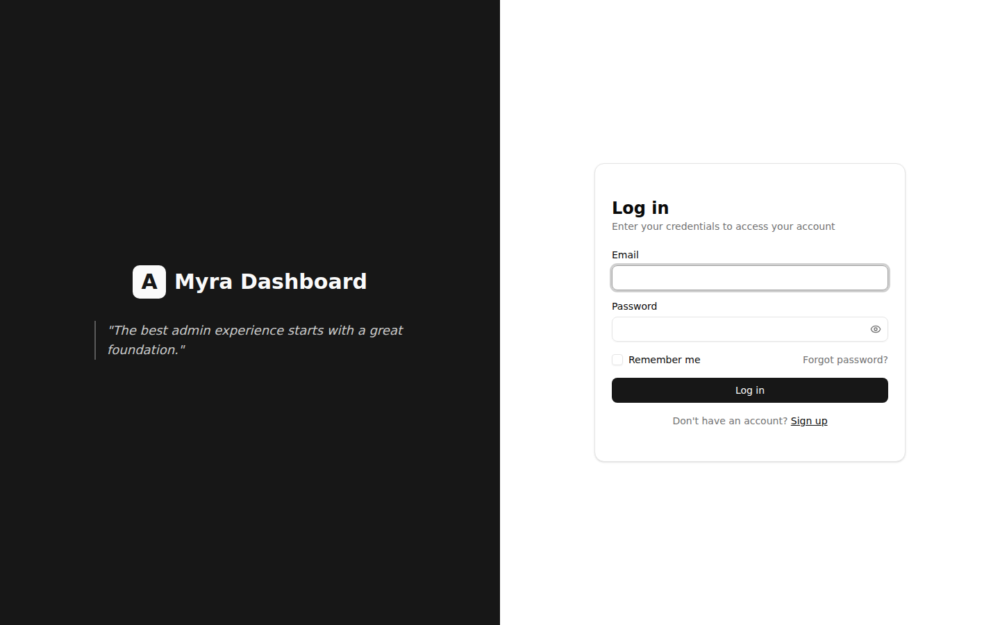
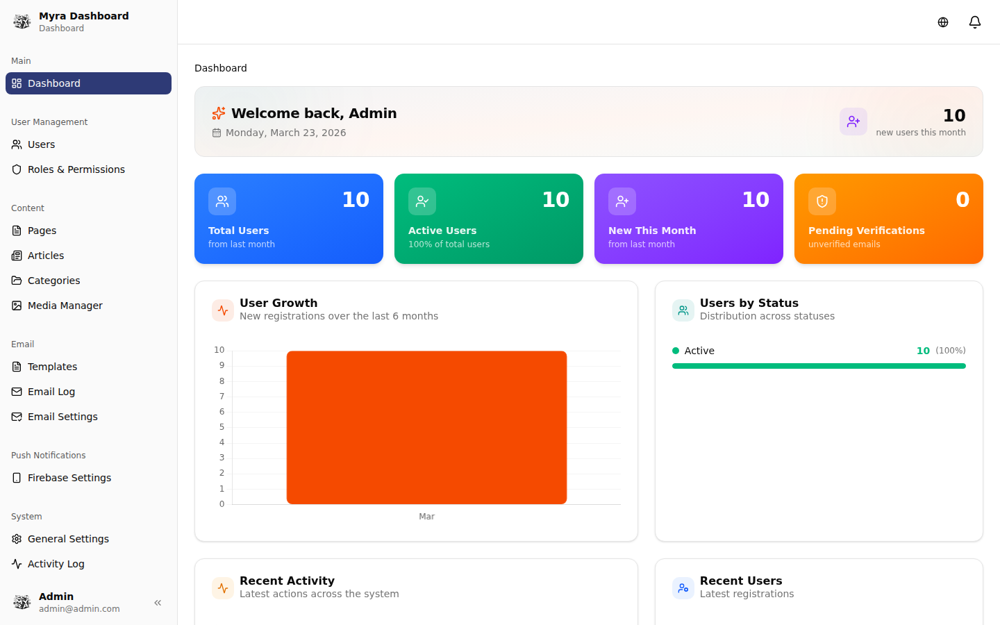
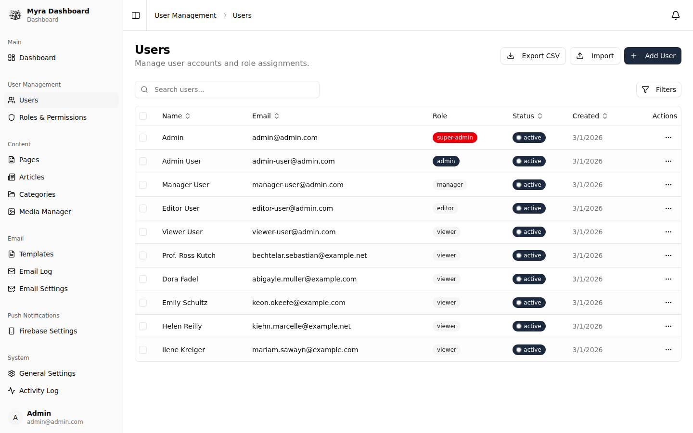
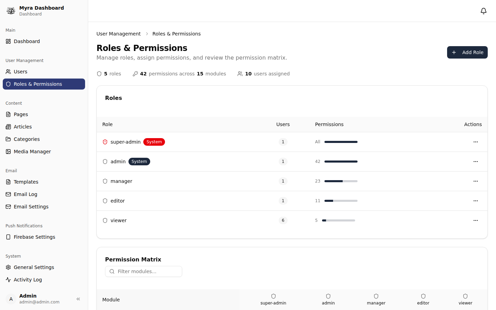
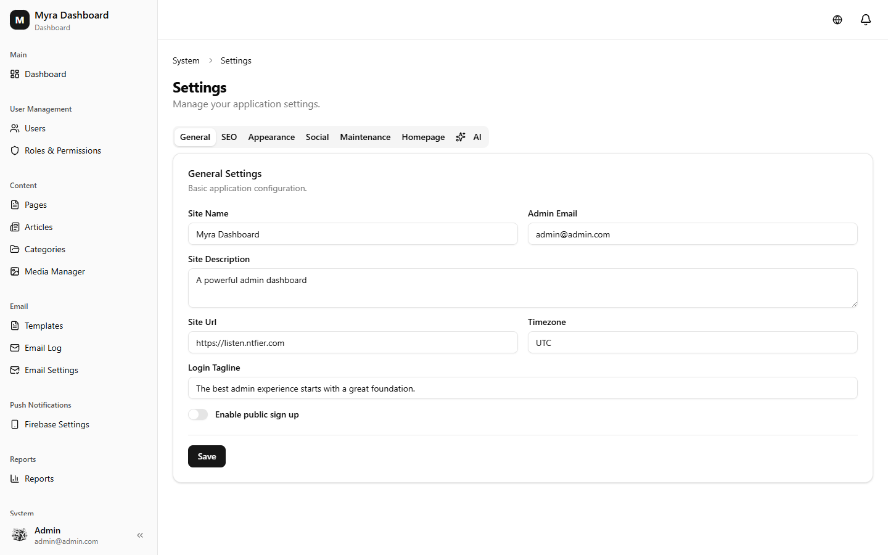
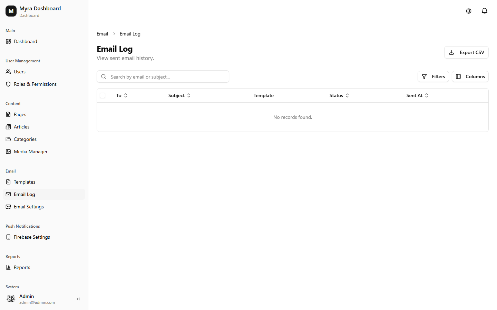
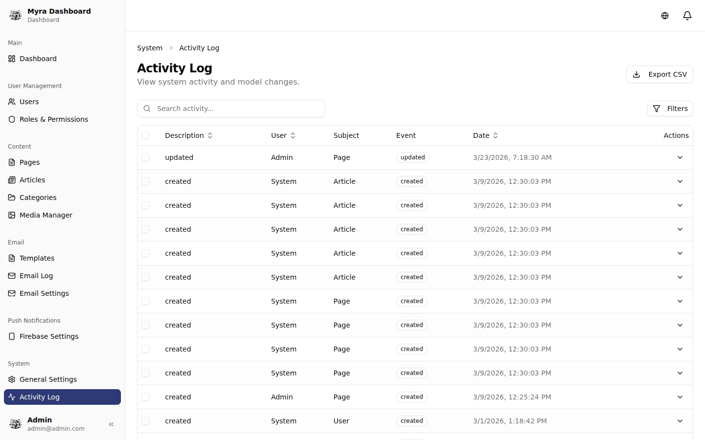
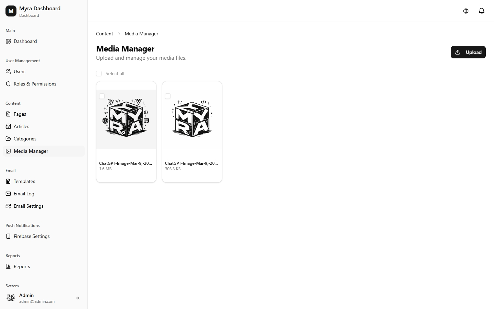
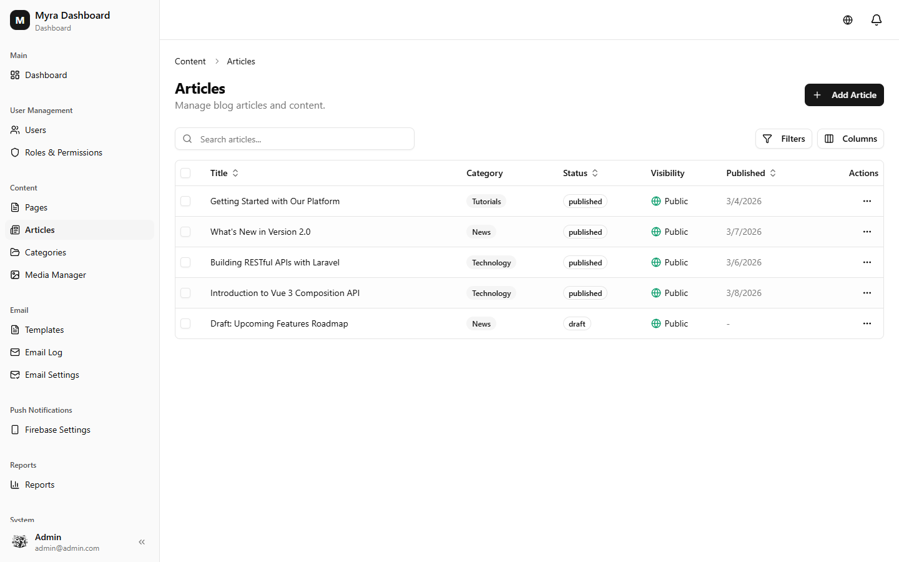
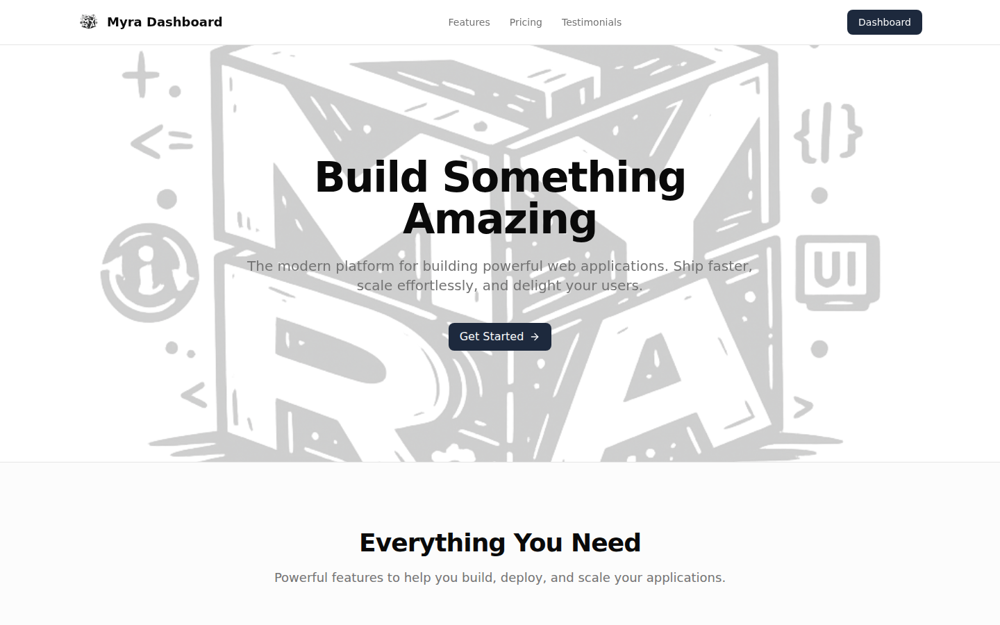
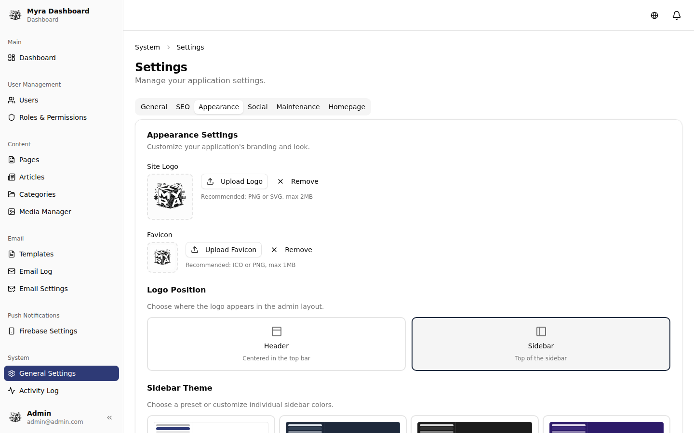
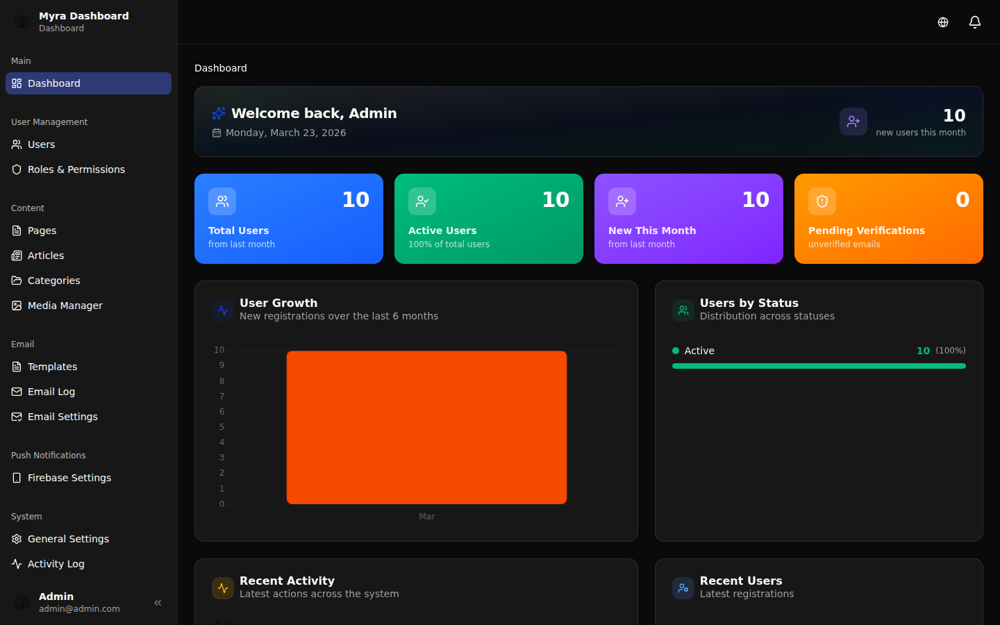
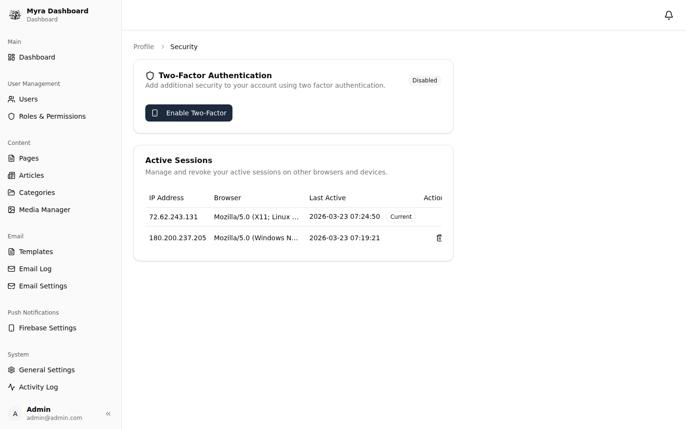
composer create-project myra/starter-kit my-project. Then scaffold new admin modules with php artisan myra:resource ModelName. See Installation and Getting Started.
Installation
Myra Starter Kit is installed via Composer's create-project command. All files are included in your project so you own the code and can customize everything.
Requirements
- PHP 8.2+
- Laravel 11 or 12 (fresh installation recommended)
- Node.js 18+
- A database (MySQL, PostgreSQL, or SQLite)
Step 1: Clone & Install Dependencies
Everything needed is committed to the repository — it installs with no private access or tokens.
git clone https://github.com/spideyrex/myra-starter-kit.git my-app
cd my-app
composer install
npm installStep 2: Configure Your Database
Update your .env file with your database credentials:
# MySQL / PostgreSQL
DB_CONNECTION=mysql
DB_HOST=127.0.0.1
DB_PORT=3306
DB_DATABASE=myra
DB_USERNAME=root
DB_PASSWORD=
# Or use SQLite for a quick start (no config needed)
DB_CONNECTION=sqliteStep 3: Run the Installer
php artisan app:installThe install command handles the following automatically:
| Step | What it does |
|---|---|
| Database | Runs migrations and seeds roles, permissions, settings, and email templates |
| Admin user | Prompts you to create a super-admin user (interactive mode) |
| Environment | Validates required .env variables |
php artisan tinker --execute="
\$user = \App\Models\User::create([
'name' => 'Admin',
'email' => 'admin@example.com',
'password' => bcrypt('password'),
'status' => 'active',
'email_verified_at' => now(),
]);
\$user->assignRole('super-admin');
"Step 4: Install Frontend Dependencies
npm installStep 5: Build Frontend Assets
npm run buildStep 6: Start the Dev Server
composer devThis starts the Laravel server, queue worker, log watcher, and Vite dev server concurrently. Or run them separately:
# Terminal 1
php artisan serve
# Terminal 2
npm run devStep 7: Log In
Visit http://localhost:8000 and sign in with your admin credentials. You'll land on the admin dashboard with all modules ready to use.
What's Included After Installation
- Dashboard — Colorful stats overview with gradient banner, color-coded stat cards, multi-colored charts, and quick actions
- User Management — CRUD, bulk actions, CSV export, impersonation
- Roles & Permissions — Full RBAC management
- CMS — Articles with categories, static pages, and public article/page views
- Homepage Builder — Settings-driven marketing landing page with hero, features, testimonials, pricing, and CTA sections
- Settings — General, SEO, Appearance (theme selector), Social, Maintenance, Homepage, and AI tabs
- AI Integration — Pluggable provider (OpenAI, Anthropic, OpenRouter, Ollama) powering the rich text editor's AI Assistant
- Theme Selector — 10 shadcn color themes selectable from Appearance settings
- Email System — Templates, logs, and SMTP configuration
- Media Library — File uploads with Spatie Media Library
- Activity Logging — Full audit trail
- System Health — Health check monitoring
- Backup Management — Create, download, and delete backups
- API Tokens — Personal access token management
- Two-Factor Authentication — TOTP with QR codes and profile security page
- Notification System — In-app notifications with preferences
- Command Palette — Ctrl+K fuzzy search for quick navigation
- Profile & Security — Profile settings, 2FA setup, password change, and browser session management
Default Roles
The seeder creates five roles out of the box:
| Role | Access Level |
|---|---|
super-admin | Full access (bypasses all permission checks via Gate::before) |
admin | All permissions |
manager | Users, roles, email, activity logs, media, notifications |
editor | Media and email (read-only) |
viewer | Users and media (read-only) |
Re-running the Installer
The app:install command takes no flags. It is safe to re-run — if the application is already installed (the settings table has data) it asks for confirmation before continuing, and all seeders use firstOrCreate / updateOrInsert so existing data is preserved.
# Re-run setup (prompts for confirmation if already installed)
php artisan app:installmyra/framework package provides the scaffold commands (myra:resource, myra:page).
Architecture Overview
Schema API
Schema API
Admin UI
Logic
SearchableQuery
Tech Stack
File Structure
Getting Started
Creating a New CRUD Resource
The fastest way to add a new admin module is the scaffold command:
php artisan myra:resource ProductThis generates 5 files:
| File | Purpose |
|---|---|
app/Http/Controllers/Admin/ProductController.php | CRUD controller with injected service |
app/Services/ProductService.php | Service with search, create, update, delete |
resources/js/Pages/Admin/Products/Index.vue | List page with DataTable |
resources/js/Pages/Admin/Products/Create.vue | Create form with FormFields |
resources/js/Pages/Admin/Products/Edit.vue | Edit form with pre-filled data |
The command also prints route definitions to paste into routes/web.php:
// Products
Route::get('/products', [ProductController::class, 'index'])->middleware('permission:products.view')->name('products.index');
Route::get('/products/create', [ProductController::class, 'create'])->middleware('permission:products.create')->name('products.create');
Route::post('/products', [ProductController::class, 'store'])->middleware('permission:products.create')->name('products.store');
Route::get('/products/{product}/edit', [ProductController::class, 'edit'])->middleware('permission:products.edit')->name('products.edit');
Route::put('/products/{product}', [ProductController::class, 'update'])->middleware('permission:products.edit')->name('products.update');
Route::delete('/products/{product}', [ProductController::class, 'destroy'])->middleware('permission:products.delete')->name('products.destroy');Creating a Single Page
For non-CRUD pages (dashboards, analytics, settings):
php artisan myra:page AnalyticsThis generates 2 files:
| File | Purpose |
|---|---|
app/Http/Controllers/Admin/AnalyticsController.php | Controller with index() method |
resources/js/Pages/Admin/Analytics/Index.vue | Basic page with PageHeader |
After Scaffolding
1. Add the routes
Paste the printed route snippet into routes/web.php inside your admin route group.
2. Create the model (if needed)
php artisan make:model Product -m3. Customize the form schema
Open the generated Create/Edit pages and modify the schema:
const schema = [
TextInput.make('name').required(),
TextInput.make('sku').required().placeholder('PRD-001'),
TextInput.make('price').numeric().required(),
Textarea.make('description').colSpan(2),
Select.make('category').options({
electronics: 'Electronics',
clothing: 'Clothing',
books: 'Books',
}),
Toggle.make('is_active').label('Active'),
];4. Update the controller validation
$validated = $request->validate([
'name' => 'required|string|max:255',
'sku' => 'required|string|unique:products,sku',
'price' => 'required|numeric|min:0',
'description' => 'nullable|string',
'category' => 'required|in:electronics,clothing,books',
'is_active' => 'boolean',
]);5. Update the service
public function list(Request $request): LengthAwarePaginator
{
return $this->applySearchAndPaginate(
Product::query()
->when($request->category, fn ($q, $cat) => $q->where('category', $cat)),
$request,
searchable: ['name', 'sku', 'description'],
);
}6. Customize the Index page columns
Use the Table Builder API for declarative column definitions:
import { TextColumn, BadgeColumn, DateColumn, BooleanColumn } from '@/composables/useTableSchema';
import { EditAction, DeleteAction } from '@/composables/useTableActions';
const columns = [
TextColumn.make('name').sortable().searchable(),
TextColumn.make('sku').sortable(),
TextColumn.make('price').sortable().money('USD'),
TextColumn.make('category'),
BooleanColumn.make('is_active').label('Active'),
DateColumn.make('created_at').sortable(),
];
const actions = [
EditAction.make('admin.products.edit'),
DeleteAction.make('admin.products.destroy'),
];<DataTable :columns="columns" :data="products" :actions="actions" route-name="admin.products.index" />No template slots needed — columns auto-render based on type.
#cell-{key} slot. The schema builder is a convenience — slots still work when you need full control over a cell's output.
Typical Page Patterns
CRUD Resource Page
Settings Page
Dashboard / Analytics Page
Form Builder API
The form builder provides a fluent API for defining form fields as TypeScript objects instead of verbose template markup.
Quick Comparison
Before (template-heavy):
<FormField label="Name" name="name" v-model="form.name" required :error="form.errors.name" />
<FormField label="Email" name="email" v-model="form.email" type="email" required :error="form.errors.email" />
<FormField label="Password" name="password" v-model="form.password" type="password" :error="form.errors.password" />
<FormField label="Role" name="role" v-model="form.role" type="select" :options="[...]" :error="form.errors.role" />After (schema-driven):
const schema = [
TextInput.make('name').required(),
TextInput.make('email').email().required(),
TextInput.make('password').password(),
Select.make('role').options([...]),
];<FormFields :schema="schema" :form="form" />Imports
// Field types
import { TextInput, Select, Textarea, Toggle, Checkbox,
DatePicker, DateTimePicker, Radio, ColorPicker,
Hidden, FileUpload, RichEditor } from '@/composables/useFormSchema';
// Layout types
import { Section, Grid, Tabs, Tab, Fieldset, Flex, Wizard, WizardStep, Callout } from '@/composables/useFormSchema';
// Renderer
import { FormFields } from '@/components/admin';Field Types
TextInput
Standard text input with type modifiers.
TextInput.make('name') // text input
TextInput.make('email').email() // email input
TextInput.make('password').password() // password input with eye toggle
TextInput.make('price').numeric() // number input
TextInput.make('quantity').integer() // number input (alias)
TextInput.make('phone').tel() // tel input
TextInput.make('website').url() // url inputSelect
Dropdown select field. Supports two option formats.
// Array format
Select.make('role').options([
{ label: 'Admin', value: 'admin' },
{ label: 'Editor', value: 'editor' },
{ label: 'Viewer', value: 'viewer' },
])
// Record shorthand
Select.make('status').options({
active: 'Active',
suspended: 'Suspended',
pending: 'Pending',
})
// With placeholder
Select.make('category').placeholder('Select a category').options({...})Textarea
Multi-line text input.
Textarea.make('description')
Textarea.make('notes').rows(6) // custom row count
Textarea.make('bio').colSpan(2) // full-width in 2-col gridToggle
Switch/toggle for boolean values.
Toggle.make('is_active').label('Active')
Toggle.make('notifications').label('Enable notifications')Checkbox
Checkbox for boolean values.
Checkbox.make('agree_terms').label('I agree to the terms')
Checkbox.make('subscribe').label('Subscribe to newsletter')DatePicker
Native date input. Optionally renders a shadcn Calendar popover via .useCalendar().
DatePicker.make('birth_date')
DatePicker.make('start_date').minDate('2024-01-01').maxDate('2026-12-31')
DatePicker.make('event_date').useCalendar() // renders Calendar in PopoverDateTimePicker
Native datetime-local input. Also supports .useCalendar().
DateTimePicker.make('scheduled_at')
DateTimePicker.make('event_start').minDate('2024-01-01T00:00')Radio
Radio button group using shadcn RadioGroup + RadioGroupItem. Supports same option formats as Select.
Radio.make('theme').options({ light: 'Light', dark: 'Dark', system: 'System' })
Radio.make('priority').options({ low: 'Low', medium: 'Medium', high: 'High' }).inline()ColorPicker
Native color input with hex text field.
ColorPicker.make('accent_color')
ColorPicker.make('brand_color').label('Brand Color')Hidden
Hidden input for passing data without rendering a visible field.
Hidden.make('parent_id')
Hidden.make('type')FileUpload
maxSize and accept constraints are client-side hints only. Always validate file uploads in your Laravel controller with 'file|max:2048|mimes:jpg,png'.
Styled file input with optional constraints.
FileUpload.make('document')
FileUpload.make('avatar').image().maxSize(2) // images only, max 2MB
FileUpload.make('attachments').multiple().accept('.pdf,.doc,.docx').maxSize(10)RichEditor
Enhanced textarea for rich content (renders as <textarea> with larger default rows).
RichEditor.make('content')
RichEditor.make('body').rows(12)Slider
Range slider using shadcn Slider. Model value is a number.
Slider.make('volume').min(0).max(100).step(5)
Slider.make('opacity').min(0).max(1).step(0.1).showValue()| Method | Description |
|---|---|
.min(n) | Minimum value (default: 0) |
.max(n) | Maximum value (default: 100) |
.step(n) | Step increment (default: 1) |
.showValue() | Display current value next to slider |
NumberField
Stepper-style number input with increment/decrement buttons. Supports locale-aware formatting.
NumberField.make('quantity').min(1).max(99)
NumberField.make('price').min(0).step(0.01).currency('USD')
NumberField.make('ratio').percent()| Method | Description |
|---|---|
.min(n) | Minimum value |
.max(n) | Maximum value |
.step(n) | Step increment (default: 1) |
.formatOptions(opts) | Custom Intl.NumberFormatOptions |
.currency(code) | Format as currency (e.g. 'USD') |
.percent() | Format as percentage |
PinInput
Individual character input slots for OTP codes, PINs, or verification codes.
PinInput.make('otp_code').otp().length(6)
PinInput.make('pin').length(4).mask() // masked characters| Method | Description |
|---|---|
.length(n) | Number of input slots (default: 6) |
.mask() | Mask input characters |
.otp() | Enable OTP autocomplete |
TagsInput
Free-form tag entry field. Model value is a string array.
TagsInput.make('tags').maxTags(5).tagPlaceholder('Type and press Enter')
TagsInput.make('skills').hint('Up to 10 skills')| Method | Description |
|---|---|
.maxTags(n) | Maximum number of tags allowed |
.tagPlaceholder(text) | Placeholder for the tag input |
ToggleGroupField / ToggleButtons
Group of toggle buttons for single or multiple selection. ToggleButtons is a
subclass of ToggleGroupField with a Filament-familiar name — both render the
'toggle-group' field type, so there is exactly one literal to learn.
ToggleGroupField.make('alignment').options({
left: 'Left', center: 'Center', right: 'Right',
})
// One descriptor object per option carries icon, colour, description,
// tooltip, disabled and hidden — no parallel keyed arrays to keep in sync.
ToggleButtons.make('status')
.options([
{ value: 'draft', label: 'Draft', icon: Pencil, color: 'muted',
description: 'Only you can see it' },
{ value: 'reviewing', label: 'In review', icon: Eye, color: 'warning' },
{ value: 'published', label: 'Published', icon: Check, color: 'success',
disabled: !can('articles.publish'),
tooltip: 'Requires the articles.publish permission' },
])
.inline()
.hint('Drafts are excluded from the sitemap.')
ToggleButtons.make('channels')
.options({ email: 'Email', sms: 'SMS', push: 'Push' })
.multiple().min(1).max(2).columns(3)
ToggleButtons.make('is_featured').boolean('Featured', 'Standard')| Method | Description |
|---|---|
.options(opts) | ToggleOption[], SelectOption[] or a Record<string,string>. Values are coerced to strings. |
.multiple(v = true) | Allow multiple selections. The model is always an array — a scalar is normalised on read, so no Eloquent array cast is required. |
.variant(v) | 'default' or 'outline' (default: outline) |
.size(s) | 'sm' | 'default' | 'lg' |
.inline(v = true) | Lay the buttons out on one wrapping row instead of full width |
.columns(n) | Render as an n-column grid |
.hideLabels(v = true) | Icon-only buttons. The option label becomes the aria-label. |
.min(n) | Block a change that would drop below n selections |
.max(n) | Disable unselected options once n are selected |
.boolean(trueLabel?, falseLabel?) | Preset that writes two options, '1' / '0', coloured success / danger |
ToggleOption
| Key | Type | Description |
|---|---|---|
value | string | Stored value (always a string) |
label | string | Visible label and accessible name |
icon | Component | lucide-vue-next icon |
color | SemanticColor | muted | primary | info | success | warning | danger — applied to the selected state |
description | string | Secondary line under the label |
tooltip | string | title plus a visually-hidden description |
disabled | boolean | Renders but cannot be selected |
hidden | boolean | Dropped from the schema entirely |
CodeEditor
Syntax-highlighted code field backed by CodeMirror 6. The editor is behind a
defineAsyncComponent and each grammar is a separate dynamic import, so a form
without a code field downloads none of it and a form with one downloads only its language.
Colours come from the --code-* CSS custom properties, so light/dark and every
colour preset repaint with no remount and no re-highlight.
CodeEditor.make('webhook_payload')
.label('Sample payload')
.language('json')
.filename('payload.json')
.minHeight('20rem')
.maxHeight('40rem')
.tabSize(2)
.copyable()
.hint('Sent verbatim to your endpoint.')
.hintAction({ label: 'Format', icon: Sparkles, onClick: (f) => {
f.webhook_payload = JSON.stringify(JSON.parse(f.webhook_payload), null, 2);
} })| Method | Default | Description |
|---|---|---|
.language(lang) | 'plaintext' | One of CodeLanguage (below) |
.lineNumbers(v = true) | true | Show the gutter |
.wrap(v = true) | true | Soft-wrap long lines; false gives horizontal scroll |
.readOnly(v = true) | false | Highlighting and selection stay, edits are blocked |
.indentWithTab(v = true) | false | Opt-in Tab indentation. When on, Escape releases focus so Tab is never trapped. |
.autocomplete(v = true) | false | Opt-in; lazily pulls @codemirror/autocomplete plus bracket closing |
.copyable(v = true) | false | Copy button in the header (works over plain HTTP too) |
.tabSize(n) | 2 | Indent width |
.minHeight(css) | '12rem' | Any CSS length |
.maxHeight(css) | — | Above this the viewport scrolls |
.filename(name) | — | Shown in the header bar |
CodeLanguage:
plaintext, javascript, typescript, json,
html, css, php, sql,
markdown, yaml, xml, python,
bash, vue. The same union is re-exported by the infolist engine,
so a CodeEntry and a CodeEditor speak one vocabulary.
role="textbox", aria-multiline,
aria-labelledby="{fieldId}-label", aria-describedby and
aria-invalid directly onto the editable node. With
indentWithTab() on, the header shows an Esc chip and the keymap
binds Escape to blur.
CalendarPicker
Date picker rendered as a shadcn Calendar inside a Popover. Model value is a date string (YYYY-MM-DD).
CalendarPicker.make('event_date')
CalendarPicker.make('deadline').minDate('2024-01-01').maxDate('2026-12-31')| Method | Description |
|---|---|
.minDate(d) | Earliest selectable date |
.maxDate(d) | Latest selectable date |
.dateFormat(fmt) | Display format string |
TimePicker
Native HTML time input with optional min/max constraints.
TimePicker.make('meeting_time')
TimePicker.make('start_time').minTime('08:00').maxTime('18:00')| Method | Description |
|---|---|
.minTime(t) | Earliest selectable time (e.g. '08:00') |
.maxTime(t) | Latest selectable time (e.g. '18:00') |
CheckboxList
Multi-select as a list of checkboxes. Model value is string[]. Supports search filtering and grid columns.
CheckboxList.make('permissions')
.options([
{ label: 'Read', value: 'read' },
{ label: 'Write', value: 'write' },
{ label: 'Delete', value: 'delete' },
])
.searchable()
.columns(2)| Method | Description |
|---|---|
.options(opts) | Array or Record of options |
.searchable() | Show search input above options |
.columns(n) | Grid columns for layout (default 1) |
KeyValue
Dynamic key-value pair editor. Model value is Array<{ key: string, value: string }>.
KeyValue.make('metadata')
.keyLabel('Property')
.valueLabel('Value')
.keyPlaceholder('Enter key...')
.valuePlaceholder('Enter value...')
.maxItems(10)| Method | Description |
|---|---|
.keyLabel(text) | Header label for key column |
.valueLabel(text) | Header label for value column |
.keyPlaceholder(text) | Placeholder for key inputs |
.valuePlaceholder(text) | Placeholder for value inputs |
.maxItems(n) | Maximum number of pairs |
MarkdownEditor
Markdown editor with a toolbar, a live split preview, an optional counter and an optional
fullscreen dialog. Rendering uses marked, and the output always passes through
sanitizeHtml before it reaches v-html. Model value is a markdown
string. The whole editor — marked and dompurify included — is a
lazy chunk, so forms without a markdown field never download it.
MarkdownEditor.make('readme')
.rows(14)
.withoutToolbar(['image', 'table']) // removing ONE button is one call
.fullscreen()
.maxLength(5000)
.hint('GitHub-flavoured markdown. Output is sanitised before display.')| Method | Default | Description |
|---|---|---|
.rows(n) | 10 | Height of the editor textarea |
.toolbar(buttons) | full set | Replaces the default button set |
.withoutToolbar(buttons) | [] | Subtracts from whatever set is active. Resolved at toProps(), so the call order does not matter. |
.mode(m) | 'split' | 'split' | 'edit' | 'preview'. Below the md breakpoint split degrades to the switcher. |
.modeSwitcher(v = true) | true | Show the edit / split / preview toggle |
.fullscreen(v = true) | false | Fullscreen dialog; Escape closes and focus returns to the trigger |
.counter(v = true) | false | Word and character count, aria-live="polite" |
.maxLength(n) | — | Implies .counter(); the counter turns destructive past the limit |
.minHeight(css) / .maxHeight(css) | — | Pane sizing, any CSS length |
.uploadRoute(name) | — | Route that accepts a pasted/dropped image and returns { url }. Return a signed temporary URL from a private disk — never a public-disk path. |
Toolbar buttons (MarkdownButton): bold,
italic, strike, link, heading,
quote, code, codeBlock, bulletList,
orderedList, table, image, undo,
redo, mode, plus the opt-in hr and
fullscreen. DEFAULT_MARKDOWN_TOOLBAR is exported from
useFormSchema.
RichEditor (TipTap HTML). Use MarkdownEditor when you want raw markdown input/output, and RichEditor for WYSIWYG HTML editing.
Rendering
FormFields Component
The <FormFields> component renders a schema array, binding v-model and errors automatically:
<script setup lang="ts">
import { FormFields, ResourceForm } from '@/components/admin';
import { useResourceForm } from '@/composables/useResourceForm';
import { TextInput, Select } from '@/composables/useFormSchema';
const schema = [
TextInput.make('name').required(),
TextInput.make('email').email().required(),
Select.make('status').options({ active: 'Active', inactive: 'Inactive' }),
];
const { form, submit } = useResourceForm({
data: { name: '', email: '', status: 'active' },
storeRoute: 'admin.items.store',
});
</script>
<template>
<ResourceForm :processing="form.processing" @submit="submit">
<FormFields :schema="schema" :form="form" />
</ResourceForm>
</template>Mixed Usage
Combine <FormFields> with manual <FormField> tags for custom inputs:
<ResourceForm :processing="form.processing" @submit="submit">
<FormFields :schema="schema" :form="form" />
<template #after-fields>
<FormField label="Avatar" name="avatar">
<input type="file" @change="handleUpload" />
</FormField>
</template>
</ResourceForm>Dynamic Schemas
const props = defineProps<{ roles: string[] }>();
const schema = [
TextInput.make('name').required(),
TextInput.make('email').email().required(),
Select.make('role')
.placeholder('Select role')
.options(props.roles.map(r => ({ label: r, value: r }))),
];Conditional Fields
const isAdmin = computed(() => form.role === 'admin');
const schema = computed(() => [
TextInput.make('name').required(),
Select.make('role').options({ admin: 'Admin', user: 'User' }),
...(isAdmin.value ? [
TextInput.make('admin_code').required().hint('Required for admin accounts'),
] : []),
]);Settings Page Pattern
const generalSchema = [
TextInput.make('site_name'),
TextInput.make('admin_email').email(),
];
const seoSchema = [
TextInput.make('meta_title'),
Textarea.make('meta_description'),
TextInput.make('meta_keywords'),
];<SettingsCard title="General" :processing="generalForm.processing" @submit="save('general', generalForm)">
<FormFields :schema="generalSchema" :form="generalForm" />
</SettingsCard>
<SettingsCard title="SEO" :processing="seoForm.processing" :columns="1" @submit="save('seo', seoForm)">
<FormFields :schema="seoSchema" :form="seoForm" />
</SettingsCard>Internal API
Each field instance exposes:
| Property/Method | Description |
|---|---|
.name | The field name string |
.colStyle | CSS grid-column: span N string or undefined |
.toProps() | Returns a FieldSchema object for <FormField> binding |
interface FieldSchema {
name: string;
label: string;
type: 'text' | 'email' | 'password' | 'number' | 'textarea' | 'select'
| 'switch' | 'checkbox' | 'tel' | 'url' | 'date' | 'datetime-local'
| 'radio' | 'color' | 'hidden' | 'file' | 'richtext';
required: boolean;
hint?: string;
placeholder?: string;
disabled: boolean;
colSpan?: number;
options?: SelectOption[];
rows?: number;
minDate?: string;
maxDate?: string;
inline?: boolean;
accept?: string;
multiple?: boolean;
maxSize?: number;
}Form Layouts
Layout classes wrap fields in visual groupings. They are not field types — they contain nested schema arrays.
Section
Wraps fields in a <Card> with title and description.
import { Section, TextInput, Toggle } from '@/composables/useFormSchema';
const schema = [
Section.make('Personal Info').schema([
TextInput.make('name').required(),
TextInput.make('email').email().required(),
]),
Section.make('Preferences').columns(1).collapsible().schema([
Toggle.make('notifications'),
Toggle.make('newsletter'),
]),
];| Method | Description |
|---|---|
.description(text) | Card description text |
.schema(fields) | Nested field/layout array |
.columns(n) | Grid columns (default: 2) |
.collapsible() | Make section collapsible |
.collapsed() | Start collapsed |
.icon(component) | Icon next to title |
Grid
Nested grid for fine-grained column control.
Grid.make(3).schema([
TextInput.make('city'),
TextInput.make('state'),
TextInput.make('zip'),
])Tabs
Tab panels for organizing large forms.
Tabs.make([
Tab.make('General').schema([
TextInput.make('name').required(),
]),
Tab.make('Settings').icon(Settings).schema([
Toggle.make('is_active'),
]),
])Fieldset
Bordered group with legend.
Fieldset.make('Address').columns(2).schema([
TextInput.make('street').colSpan(2),
TextInput.make('city'),
TextInput.make('state'),
])Flex
Flexbox container for inline or stacked field arrangements without grid constraints.
// Horizontal row (default)
Flex.make().direction('row').gap(4).schema([
TextInput.make('first_name'),
TextInput.make('last_name'),
])
// Column direction
Flex.make().direction('col').gap(2).schema([
TextInput.make('address_line_1'),
TextInput.make('address_line_2'),
])
// With alignment
Flex.make().justify('between').align('center').schema([
TextInput.make('search'),
Toggle.make('case_sensitive'),
])| Method | Description |
|---|---|
.direction(d) | 'row' (default) or 'col' |
.gap(n) | Gap between items (default: 4) |
.justify(j) | 'start', 'end', 'center', 'between', 'around' |
.align(a) | 'start', 'end', 'center', 'stretch' |
.schema(fields) | Nested field/layout array |
Wizard
Multi-step form with a step indicator bar, previous/next navigation, and per-step content.
Wizard.make([
WizardStep.make('Personal Info').icon(User).schema([
TextInput.make('name').required(),
TextInput.make('email').email().required(),
]),
WizardStep.make('Account').icon(Shield).schema([
TextInput.make('password').password().required(),
Select.make('role').options({ admin: 'Admin', user: 'User' }),
]),
WizardStep.make('Review').icon(CheckCircle).description('Review your information').schema([
// summary fields
]),
])WizardStep Methods
| Method | Description |
|---|---|
.description(text) | Subtitle shown below the step label |
.icon(component) | Lucide icon shown in the step circle when active |
.schema(fields) | Fields displayed when this step is active |
Callout
Colored alert banner with an icon, title, and description. Optionally embeds fields inside.
// Warning callout
Callout.make('Important Notice')
.description('This action cannot be undone.')
.warning()
// Info callout with custom icon
Callout.make('Tip')
.description('You can use keyboard shortcuts to speed up your workflow.')
.info()
.icon(Lightbulb)
// Callout with nested fields
Callout.make('Advanced Settings')
.description('Only modify these if you know what you are doing.')
.warning()
.schema([
Toggle.make('debug_mode').label('Enable Debug Mode'),
])| Method | Description |
|---|---|
.description(text) | Callout body text |
.variant(v) | 'info', 'warning', 'success', 'danger' |
.icon(component) | Override default variant icon |
.schema(fields) | Optional nested fields below the callout |
.info() | Shorthand for .variant('info') |
.warning() | Shorthand for .variant('warning') |
.success() | Shorthand for .variant('success') |
.danger() | Shorthand for .variant('danger') |
Table Builder API
The table builder provides a fluent API for defining DataTable columns, filters, and actions as TypeScript objects instead of verbose template slots.
Before vs After
// BEFORE: manual slots needed
const columns: Column[] = [
{ key: 'name', label: 'Name', sortable: true },
{ key: 'status', label: 'Status' },
{ key: 'created_at', label: 'Created', sortable: true },
];
// + template slots for StatusBadge, DateCell, RowActions...
// AFTER: declarative, zero slots needed
import { TextColumn, BadgeColumn, DateColumn } from '@/composables/useTableSchema';
import { EditAction, DeleteAction } from '@/composables/useTableActions';
const columns = [
TextColumn.make('name').sortable().searchable(),
BadgeColumn.make('status').colors({ active: 'default', suspended: 'destructive' }),
DateColumn.make('created_at').sortable(),
];
const actions = [
EditAction.make('admin.products.edit'),
DeleteAction.make('admin.products.destroy'),
];Column Types
| Class | Auto-renders | Key methods |
|---|---|---|
TextColumn | Plain text | .sortable(), .searchable(), .limit(n), .url(fn), .copyable(), .money(currency), .numeric(decimals), .description(fn) |
BadgeColumn | <StatusBadge> or <Badge> | .colors({ value: variant }) |
DateColumn | <DateCell> | .format('date'|'datetime'|'relative'), .sortable() |
BooleanColumn | Check/X icons | .trueIcon(icon), .falseIcon(icon), .trueColor(), .falseColor() |
ImageColumn | <img> tag | .circular(), .size(n), .defaultUrl(url) |
IconColumn | Lucide icon | .icon(fn), .color(fn) |
ToggleColumn | <Switch> | Inline editable boolean — see inline editing methods |
CheckboxColumn | <Checkbox> | Inline editable boolean, plus .indeterminateWhen(fn) |
SelectColumn | <Select> dropdown | .options(obj|arr), .placeholder(text) + inline editing methods |
TextInputColumn | <Input> | .placeholder(text), .debounce(ms) + inline editing methods (default 500ms debounce) |
ColorColumn | Colour swatch + value | .copyable(bool), .copyMessage(text), .showValue(bool), .swatchOnly(), .swatchSize(px), .circular() |
Shared Column Methods
| Method | Description |
|---|---|
.label(text) | Override auto-derived label |
.sortable() | Enable server-side sorting |
.searchable() | Mark as searchable |
.hidden() | Hide the column |
.visible(bool) | Conditional visibility |
.alignEnd() | Right-align the column |
.extraClass(cls) | Add CSS class |
.tooltip(text) | Add tooltip text |
.toggleable() | User can show/hide this column |
.grow() | Column takes available space |
.summarize(type, fn?) | Add column summary. Types: 'sum', 'average', 'count', 'min', 'max', 'median', 'range', 'custom'. Custom fn receives values array. |
.summary(config) | Rich form of .summarize() — label, formatting, scope. See Summaries. |
ColorColumn
Renders a validated colour swatch next to the literal value, with a copy button. Values are matched against a
strict colour regex before they ever reach an inline style; anything else (including
red; background-image:url(x)) renders as plain text. Alpha colours (8-digit hex,
rgba(), hsla()) sit on a themed checkerboard so transparency is visible.
import { ColorColumn } from '@/composables/useTableSchema';
ColorColumn.make('brand_color').copyable().copyMessage('Brand colour copied'),
ColorColumn.make('accent_color').swatchOnly().circular().swatchSize(24),Accessibility: with .showValue() (the default) the swatch is
aria-hidden and the value is read as text; with .swatchOnly() the swatch becomes
role="img" with the value as its aria-label. Colour is never the only carrier of
information.
Table Filters
Filters render in a collapsible toolbar above the table. Clicking the Filters button reveals filter controls; active filter count is shown as a badge. Values are passed to the backend as query params via Inertia.
| Class | Renders | Own Methods |
|---|---|---|
SelectFilter | <Select> dropdown | .options(obj|arr), .placeholder(), .multiple() |
TernaryFilter | 3-state select (All / Yes / No) | .trueLabel(), .falseLabel() |
Filter | <Checkbox> | .query(paramName) |
Shared methods (available on all filter types):
| Method | Description |
|---|---|
.make(name) | Static factory. The name becomes the URL query param. |
.label(text) | Display label above the filter control. Defaults to humanized name. |
import { SelectFilter, TernaryFilter, Filter } from '@/composables/useTableFilters';
const tableFilters = [
// Dropdown with predefined options (accepts Record or Array)
SelectFilter.make('status')
.label('Filter by Status')
.options({ active: 'Active', suspended: 'Suspended', pending: 'Pending' })
.placeholder('All Statuses'),
// 3-state select: All / Verified / Not Verified
TernaryFilter.make('email_verified')
.label('Email Verified')
.trueLabel('Verified')
.falseLabel('Not Verified'),
// Simple checkbox toggle
Filter.make('trashed').label('Show Deleted Only'),
];Wiring to the Backend
Pass the :table-filters prop to <DataTable> and return the filter values from the controller via the filters prop:
<DataTable
:columns="columns"
:data="users"
:filters="filters"
:table-filters="tableFilters"
route-name="admin.users.index"
/>// Controller
public function index(Request $request): Response
{
$users = User::query()
->when($request->search, fn ($q, $s) => $q->where('name', 'like', "%{$s}%"))
->when($request->status, fn ($q, $v) => $q->where('status', $v))
->when($request->email_verified, function ($q, $v) {
$v === '1' ? $q->whereNotNull('email_verified_at') : $q->whereNull('email_verified_at');
})
->paginate(15)->withQueryString();
return Inertia::render('Admin/Users/Index', [
'users' => UserResource::collection($users),
'filters' => $request->only(['search', 'status', 'email_verified']),
]);
}?status=active&email_verified=1), so they persist across page refreshes and browser history navigation. A Clear filters button appears when any filter is active.
DateRangeFilter
Renders two date inputs with a "to" label between them. Sends {name}_from and {name}_to as query params.
import { DateRangeFilter } from '@/composables/useTableFilters';
DateRangeFilter.make('created')
.label('Created Date')
.minDate('2024-01-01')
.maxDate('2026-12-31')| Method | Description |
|---|---|
.minDate(d) | Minimum selectable date |
.maxDate(d) | Maximum selectable date |
QueryBuilderFilter
A recursive query builder component for complex filtering. Supports AND/OR conjunctions, nested groups (max 1 level), and multiple field operators. Serialized to JSON query param.
import { QueryBuilderFilter } from '@/composables/useTableFilters';
QueryBuilderFilter.make('query_builder')
.label('Advanced Query')
.fields([
{ name: 'name', label: 'Name', operators: ['=', 'contains', 'starts_with'] },
{ name: 'price', label: 'Price', operators: ['=', '>', '<', '>=', '<='] },
{ name: 'status', label: 'Status', operators: ['=', '!='] },
])| Method | Description |
|---|---|
.fields(arr) | Array of { name, label, operators } definitions |
Sticky Table Header
Add the sticky-header prop to <DataTable> to pin the table header when scrolling through long tables.
<DataTable
:columns="columns"
:data="data"
:sticky-header="true"
route-name="admin.users.index"
/>When enabled, the table container becomes scrollable with a max height of 600px, and the <thead> stays fixed at the top. Default is false for backward compatibility.
Column Manager
When any column has .toggleable(true), a Columns button appears in the toolbar. Users can show/hide columns via a popover with checkboxes. Preferences are saved to localStorage per route.
const columns = [
TextColumn.make('name').label('Name'),
TextColumn.make('email').label('Email').toggleable(),
TextColumn.make('phone').label('Phone').toggleable().hidden(), // hidden by default, user can enable
DateColumn.make('created_at').label('Created').toggleable(),
];The visibility state is stored in localStorage with key dt-columns-{routeName}. When a user toggles a column, their preference overrides the schema hidden default.
Table Actions
Row actions are rendered automatically in a dropdown menu. No need for manual RowActions or slot templates.
.permission() are automatically hidden if the current user lacks that permission. No need for manual v-if checks.
| Class | Behavior |
|---|---|
EditAction.make(routeName) | Pencil icon + navigates to route |
ViewAction.make(routeName) | Eye icon + navigates to route |
DeleteAction.make(routeName) | Trash icon + confirms + deletes |
RestoreAction.make(routeName) | Rotate icon + confirms + POSTs. Visible only when row.deleted_at is set |
ForceDeleteAction.make(routeName) | Destructive + confirms + DELETEs. Visible only when row.deleted_at is set |
ReplicateAction.make(routeName) | Copy icon + duplicates the record, optionally through a form modal |
ActionGroup.make(items) | Dropdown cluster with dividers, section headings and submenus |
ActionDivider.make() / ActionSectionLabel.make(text) | A rule / a heading inside a group |
softDeleteActions(prefix, opts?) | Edit + Delete + Restore + Delete permanently, permission-gated |
Action.make(label) | Custom action with .icon(), .url(fn), .action(fn), .route(name, method), .permission(), .destructive() |
BulkAction.make(label) | Bulk action with .action(fn), .requiresConfirmation(), .destructive() |
import { EditAction, DeleteAction, BulkAction } from '@/composables/useTableActions';
const actions = [
EditAction.make('admin.products.edit').permission('products.edit'),
DeleteAction.make('admin.products.destroy').permission('products.delete'),
];
const bulkActions = [
BulkAction.make('Delete')
.icon(Trash2)
.destructive()
.action((ids) => router.post(route('admin.products.bulk-action'), { ids, action: 'delete' })),
];Action — full method list
Every method below is available on Action and on all of its subclasses.
| Method | Effect |
|---|---|
label(text) | Overrides the menu label |
icon(component) | Leading lucide icon |
color(color) | muted | primary | info | success | warning | danger, or any Tailwind class |
url(fn) | Renders a link instead of a button |
external(value?) | Opens the URL in a new tab (rel="noopener noreferrer" plus an sr-only note) |
action(fn) | Client-side callback — the escape hatch |
route(name, method?) | Framework-owned request. method defaults to post |
routeParams(fn) | Route params for that request. Defaults to row.id |
payload(fn) | Request body |
successMessage(text) | Toast shown on a successful response |
modal(config) | Opens an ActionModal form instead of firing a request |
requiresConfirmation(title?, description?) | Confirmation dialog — honoured for every action, not just deletes |
confirmTitle(text) / confirmDescription(text) | Individual confirmation copy |
permission(perm) | Hides the item without the Shield ability |
destructive(value?) | Destructive styling and destructive confirm variant |
visible(fn) / hidden(fn) | Per-row visibility |
separator(value?) | Draws a rule above the item |
badge(fn) | Per-row badge on the item |
tooltip(text) | Native tooltip on the item |
Restore, force-delete and the soft-delete preset
RestoreAction and ForceDeleteAction are first-class actions. Both default to visible(row => !!row.deleted_at); DeleteAction defaults to the inverse, so a table shows the right trio without any branching in the page.
import { softDeleteActions, softDeleteBulkActions } from '@/composables/useTableActions';
import { trashedFilter } from '@/composables/useTableFilters';
const actions = softDeleteActions('admin.articles');
const bulkActions = softDeleteBulkActions('admin.articles');
const tableFilters = [trashedFilter()];softDeleteActions(prefix, opts?) returns Edit, Delete, Restore and Delete permanently, wired to {prefix}.edit|destroy|restore|force-delete and gated on {module}.edit|delete, where module is the last segment of the prefix.
| Option | Effect |
|---|---|
module | Shield module slug. false attaches no permissions (demo tables) |
view | Prepends a ViewAction on {prefix}.show |
edit | Set false to omit the edit action |
viewRoute, editRoute, deleteRoute, restoreRoute, forceDeleteRoute | Override any individual route name |
softDeleteBulkActions(prefix, module?) returns Restore and Delete permanently, posting { ids, action } to {prefix}.bulk-action.
{module}.edit but accept destructive verbs, so every bulkAction() calls
$this->authorizeBulkVerb($request->action, 'articles') from App\Admin\Traits\HandlesSoftDeletes.
force_delete and delete map to {module}.delete; every other verb to {module}.edit.
The single restore / force-delete endpoints re-check the ability with authorizeAbility() in addition to the route middleware.
ReplicateAction
Duplicates a record from the row menu. The client sends a hint; the server whitelists every part of it.
import { ReplicateAction } from '@/composables/useTableActions';
ReplicateAction.make('admin.articles.replicate')
.permission('articles.create')
.except(['published_at']) // deny-list
.suffix('title') // "X" -> "X (copy)" -> "X (copy 2)"
.withRelations(['tags']) // one level deep, re-whitelisted server-side
.overrides(() => ({ status: 'draft', is_public: false })),
// Edit before saving - rides the existing ActionModal path.
ReplicateAction.make('admin.articles.replicate')
.label('Duplicate and edit')
.schema([TextInput.make('title').required()]),| Method | Effect |
|---|---|
except(cols) | Columns that are not copied |
only(cols) | Allow-list. Wins over except() |
withRelations(names) | Clones belongsToMany pivots and hasMany rows, one level deep |
overrides(fn) | Attribute overrides, filtered against the model's $fillable |
suffix(field, template?) | Template defaults to :value (copy); uniqueness is resolved against the column |
schema(items) | Opens a form modal instead of posting immediately |
redirectTo(routeName) | Passed through to the server as redirect_to |
Server side, add the Replicates trait to the controller:
use App\Admin\Traits\Replicates;
class ArticleController extends Controller
{
use Replicates;
protected function replicateModel(): string { return Article::class; }
protected function replicateModule(): string { return 'articles'; }
/** Columns carrying a unique index - regenerated on the clone. */
protected function replicateUniqueColumns(): array { return ['slug']; }
}Route::post('/articles/{article}/replicate', [ArticleController::class, 'replicate'])
->middleware('permission:articles.create')->name('articles.replicate');public static array $replicable (absent means “none”),
overrides are intersected with $fillable, and the record is fetched through the model's global scopes so
ownership still applies. Nested grandchildren are deliberately not cloned — unbounded recursion from one click is a denial of service.
Action grouping
ActionGroup clusters row actions into a configurable dropdown. Pass a single group as the table's only action and it configures the trigger itself; nest one inside another and it renders as a submenu.
import { ActionGroup, ActionDivider, ActionSectionLabel } from '@/composables/useTableActions';
const actions = [
ActionGroup.make([
EditAction.make('admin.articles.edit'),
ActionSectionLabel.make('Duplicate'),
ReplicateAction.make('admin.articles.replicate').suffix('title'),
ActionDivider.make(),
ActionSectionLabel.make('Danger zone'),
...softDeleteActions('admin.articles').slice(1),
])
.tooltip('Article actions')
.badge((row) => (row.flagged ? '!' : null))
.width('lg')
.collapseAfter(3),
];| Method | Default | Effect |
|---|---|---|
label(text) | 'Actions' | Trigger label and its aria-label |
icon(component) | MoreHorizontal | Trigger icon |
color(color) | — | Semantic colour |
size(s) | 'sm' | sm | default | lg |
button(value?) | false | Labelled button trigger instead of an icon button |
buttonGroup(value?) | false | Renders every item inline as a joined button group — no dropdown |
tooltip(text) | — | Tooltip on the trigger |
badge(fn) | — | Per-row badge on the trigger |
placement(p) | 'bottom-end' | bottom-start | bottom-end | top-start | top-end |
width(w) | 'md' | sm | md | lg |
maxHeight(css) | '20rem' | Scroll cap on the menu |
collapseAfter(n) | — | Below n visible items render inline; at or above, collapse to a dropdown |
permission(perm) | — | Hides the whole group |
| Item | Renders as |
|---|---|
ActionDivider.make() | DropdownMenuSeparator. Leading, trailing and duplicate dividers collapse away after permission filtering, so a hidden action never leaves an orphan rule |
ActionSectionLabel.make(text) | DropdownMenuLabel. Not a focus stop |
Nested ActionGroup | DropdownMenuSub submenu |
Inline Table Editing
Edit cell values directly in the table without opening a form. Four inline-editable column types are available:
ToggleColumn, CheckboxColumn, SelectColumn and
TextInputColumn. They all extend InlineEditableColumn and therefore share one set of
methods.
Shared Inline Methods
| Method | Description |
|---|---|
.updateRoute(name) | Preferred. The table owns the request: it PATCHes { field, value } to route(name, row.id), paints optimistically and rolls back with a toast on error. |
.field(name) | Column written server-side. Defaults to the column key. |
.optimistic(bool) | false waits for the server before showing the new value. Default true. |
.permission(perm) | Client-side gate — the control is disabled and the request is skipped. The server check stays authoritative. |
.disabledWhen(fn) | Per-row disable, e.g. row => row.archived_at !== null. |
.confirmWhen(fn) | Return a message to require confirmation for that value only; return false to write straight through. |
.rowLabel(fn) | Required for toggle/checkbox. Per-row accessible name for the control. |
.debounce(ms) | Text input only. Default 500ms. |
.onUpdate(fn) | Escape hatch — the page owns the request. Ignored when .updateRoute() is set. |
CheckboxColumn
import { CheckboxColumn } from '@/composables/useTableSchema';
CheckboxColumn.make('is_featured')
.label('Featured')
.updateRoute('admin.products.inline-update')
.permission('products.edit')
.rowLabel(row => `Feature ${row.name}`)
.disabledWhen(row => row.archived_at !== null)
.indeterminateWhen(row => row.stock === 0 && !row.is_featured)
.confirmWhen((row, value) => value && row.stock === 0
? 'This product is out of stock. Feature it anyway?'
: false)ToggleColumn / SelectColumn / TextInputColumn
ToggleColumn.make('is_active')
.updateRoute('admin.products.inline-update')
.rowLabel(row => `Activate ${row.name}`),
SelectColumn.make('status')
.options({ active: 'Active', draft: 'Draft', archived: 'Archived' })
.updateRoute('admin.products.inline-update'),
TextInputColumn.make('stock')
.placeholder('Qty')
.debounce(300) // ms, default 500
.updateRoute('admin.products.inline-update'),
// Escape hatch — the page owns the request
TextInputColumn.make('sku')
.onUpdate((row, value) => router.put(route('admin.products.sku', row.id), { value })),A second change to the same cell while a request is in flight is ignored, and pending debounced writes are cancelled when the table unmounts.
Backend Pattern
Use the HandlesInlineUpdates trait. The editable field list is a server-side literal, so a client
cannot write an unlisted column, and the model policy is re-checked on top of the route middleware.
use App\Admin\Traits\HandlesInlineUpdates;
class ProductController extends Controller
{
use HandlesInlineUpdates;
protected function modelClass(): string
{
return Product::class;
}
protected function inlineEditableFields(): array
{
return ['is_featured' => 'boolean', 'status' => 'string', 'stock' => 'integer'];
}
}// routes/web.php — middleware AND the in-controller authorize()
Route::patch('/products/{product}/inline', [ProductController::class, 'inlineUpdate'])
->middleware('permission:products.edit')
->name('products.inline-update');Conditional Field Visibility
Show or hide form fields reactively based on other field values. Uses v-show so hidden fields keep their values in the form object for server-side validation.
visibleWhen / hiddenWhen
Added to BaseField — available on all field types:
| Method | Description |
|---|---|
.visibleWhen(condition) | Show field only when condition is true |
.hiddenWhen(condition) | Hide field when condition is true |
String Conditions
Concise string syntax for common patterns:
// Show when type equals 'business'
TextInput.make('company_name').visibleWhen('type:business')
// Show when type is NOT 'personal'
TextInput.make('tax_id').visibleWhen('!type:personal')
// AND logic: show when type is business AND country is us
TextInput.make('ein').visibleWhen('type:business,country:us')
// OR values: show when status is active OR pending
TextInput.make('renewal_date').visibleWhen('status:active|pending')Function Conditions
For complex logic, use a function that receives the form object:
// Show when amount exceeds threshold
TextInput.make('approval_note')
.visibleWhen((form) => form.amount > 1000)
// Hide for certain roles
TextInput.make('admin_override')
.hiddenWhen((form) => form.role === 'viewer')evaluateVisibility Helper
The exported evaluateVisibility(condition, form) function can be used outside of FormFields for custom visibility logic.
import { evaluateVisibility } from '@/composables/useFormSchema';
// Returns boolean
const isVisible = evaluateVisibility('type:business', formData);Row Grouping & Summaries
Group table rows by a column value and display aggregated summaries per column.
Grouping
Pass the groupBy prop to <DataTable> with a column key. Rows are grouped client-side with collapsible group headers.
<DataTable
:columns="columns"
:data="orders"
:filters="filters"
group-by="status"
route-name="admin.orders.index"
/>Group headers show the group label and a count badge. Click to collapse/expand.
Column Summaries
Add .summarize(type) to any column to display an aggregated value in the footer row:
const columns = [
TextColumn.make('order_number').sortable(),
BadgeColumn.make('status'),
TextColumn.make('quantity').numeric(0).summarize('sum'),
TextColumn.make('price').money('USD').summarize('sum'), // auto-formats as currency
TextColumn.make('discount').numeric(2).summarize('average'),
TextColumn.make('rating').summarize('range'), // shows "1.5 – 4.8"
TextColumn.make('items').summarize('count'),
TextColumn.make('custom').summarize('custom', (values) => { // custom function
return `${values.length} unique`;
}),
];| Summary Type | Description |
|---|---|
'sum' | Sum of numeric values. Respects .money() formatting. |
'average' | Average of numeric values |
'count' | Count of non-null values (all rows when excludeNull: false) |
'min' | Smallest numeric value |
'max' | Largest numeric value |
'median' | Middle value; the mean of the two middle values for an even count |
'range' | Shows min – max, separator configurable |
'custom' | Custom function receives all values, returns display string |
Empty columns render — for min, max, median and
range. Each summarised column is accumulated in a single pass, so a full page of rows never
spreads an array into Math.min().
.summary(config) — labels, formatting and scope
TextColumn.make('rating').alignEnd()
.summary({ type: 'median', label: 'Median', decimals: 1 }),
TextColumn.make('delivery_days').alignEnd()
.summary({ type: 'range', label: 'Range', separator: ' to ', decimals: 0 }),
TextColumn.make('revenue').money('MYR').alignEnd()
.summary({ type: 'sum', label: 'Company total', currency: 'MYR', scope: 'all' }),| Key | Description |
|---|---|
type | Any summary type above (required) |
label | Prefix shown before the value in the footer |
prefix / suffix | Wrapped around the formatted value |
decimals | Fixed decimal places. Defaults to 2 (0 for count) when a config is supplied. |
currency / locale | Formats via Intl.NumberFormat. Locale defaults to 'en-US'. |
excludeNull | false makes count include null rows. Default true. |
separator | range only. Default ' – '. |
scope | 'all' declares the value must come from the server summaries prop; a dev-build warning fires when it does not arrive. |
Page vs. dataset scope
A client-computed summary can only see the current page, so the footer marks it with a small
Page badge. Supplying the value in the summaries prop removes the badge —
the reader always knows which number they are looking at.
Server-Side Summaries
For large datasets, pass pre-computed summaries from the backend via the summaries prop. Server summaries take precedence over client-side calculation:
<DataTable
:columns="columns"
:data="orders"
:summaries="{ price: '$45,230.00', quantity: 1284 }"
route-name="admin.orders.index"
/>The SearchableQuery trait ships a helper for this. The column spec is a server-side literal —
never derived from the request:
$summaries = $this->summarise($query, [
'price' => 'sum',
'stock' => 'min',
'rating' => 'range',
]);Group + Summary Combined
When both groupBy and summaries are used, each group shows its own summary row plus an overall footer.
Drag & Drop Reordering
Reorder table rows by dragging. Drag handles appear as the first column. Sorting is automatically disabled when reordering is enabled.
Usage
<DataTable
:columns="columns"
:data="tasks"
:reorderable="true"
reorder-route="admin.tasks.reorder"
route-name="admin.tasks.index"
/>DataTable Props
| Prop | Type | Default | Description |
|---|---|---|---|
reorderable | boolean | false | Enable drag-and-drop reordering |
reorderRoute | string | — | Named route to POST ordered IDs to |
Backend
The reorder endpoint receives an array of IDs in the new order:
public function reorder(Request $request): RedirectResponse
{
$ids = $request->validate(['ids' => 'required|array'])['ids'];
foreach ($ids as $index => $id) {
Task::where('id', $id)->update(['sort_order' => $index + 1]);
}
return back()->with('success', 'Order saved.');
}Database
Add a sort_order column to any model that needs reordering:
ALTER TABLE `tasks` ADD COLUMN `sort_order` INT UNSIGNED DEFAULT 0 AFTER `id`;
CREATE INDEX `idx_sort_order` ON `tasks` (`sort_order`);Order your queries by sort_order:
Task::orderBy('sort_order')->paginate(15);Infolist Builder (Show Pages)
Schema-based read-only detail views. Mirrors the form builder pattern but for displaying data instead of editing it. Use it for user profiles, order details, or any "show" page.
Imports
// Entry types
import {
TextEntry, BadgeEntry, DateEntry, BooleanEntry,
ImageEntry, IconEntry, RepeatableEntry, KeyValueEntry,
ColorEntry, CodeEntry,
} from '@/composables/useInfolistSchema';
// Layout types (reused from form builder)
import { Section, Grid, Tabs, Tab, Fieldset } from '@/composables/useInfolistSchema';
// Component
import { InfolistEntries } from '@/components/admin';Entry Types
| Class | Renders | Key Methods |
|---|---|---|
TextEntry | Plain or formatted text | .copyable(), .badge(), .badgeColors(map), .money(currency), .numeric(decimals), .prefix(), .suffix(), .url(fn), .limit(n), .formatStateUsing(fn), .description(fn), .default(val) |
BadgeEntry | Colored <Badge> | .colors(map) |
DateEntry | <DateCell> | .format('date'|'datetime'|'relative') |
BooleanEntry | Check/X icon | .trueIcon(icon), .falseIcon(icon), .trueColor(), .falseColor() |
ImageEntry | <img> | .circular(), .size(n) |
IconEntry | Lucide icon | .icon(fn), .color(fn) |
RepeatableEntry | List of sub-entries | .schema(entries[]) |
KeyValueEntry | Key-value table | (none — renders object as key/value pairs) |
ColorEntry | Colour swatch + value | .copyable(), .copyMessage(text), .showValue(), .swatchOnly(), .swatchSize(px), .circular() |
CodeEntry | Read-only highlighted code block | .language(lang), .lineNumbers(), .wrap(), .maxLines(n), .startLine(n), .highlightLines([n]), .filename(name), .copyable() |
Shared Entry Methods
| Method | Description |
|---|---|
.label(text) | Override auto-derived label |
.colSpan(n) | Grid column span |
.hidden(fn?) | Hide entry (static or function-based) |
.visible(fn) | Show entry only when fn returns true |
.tooltip(text) | Tooltip on the label |
Example: User Detail Page
import { TextEntry, BadgeEntry, DateEntry, BooleanEntry, KeyValueEntry, RepeatableEntry } from '@/composables/useInfolistSchema';
import { Section, Grid } from '@/composables/useInfolistSchema';
const schema = [
Section.make('Profile').schema([
TextEntry.make('name').copyable(),
TextEntry.make('email').copyable(),
TextEntry.make('phone').default('Not provided'),
BadgeEntry.make('status').colors({
active: 'default',
suspended: 'destructive',
}),
TextEntry.make('balance').money('USD'),
DateEntry.make('created_at').format('relative'),
]),
Section.make('Security').columns(2).schema([
BooleanEntry.make('email_verified'),
BooleanEntry.make('two_factor_enabled'),
DateEntry.make('last_login_at').format('datetime'),
]),
Section.make('Preferences').schema([
KeyValueEntry.make('metadata'),
]),
Section.make('Recent Activity').columns(1).schema([
RepeatableEntry.make('recent_activity').schema([
TextEntry.make('action'),
DateEntry.make('date').format('relative'),
TextEntry.make('ip'),
]),
]),
];ColorEntry
Renders a colour swatch beside its literal value, with a copy button. Shares the <ColorSwatch> renderer with ColorColumn, so a colour looks identical in a table and on a show page.
| Method | Default | Description |
|---|---|---|
.copyable(value = true) | true | Show the copy-to-clipboard button |
.copyMessage(text) | 'Copied to clipboard' | Toast shown after copying |
.showValue(value = true) | true | Render the literal value next to the swatch |
.swatchOnly() | — | Alias for .showValue(false) |
.swatchSize(px) | 24 | Swatch edge length in pixels |
.circular(value = true) | false | Round swatch instead of a rounded square |
Section.make('Branding').icon(Palette).columns(3).schema([
ColorEntry.make('primary_color'),
ColorEntry.make('accent_color').swatchOnly().circular(),
TextEntry.make('updated_at').label('Last changed'),
] as any),Security. The value reaches an inline style, so it is matched against a strict hex/rgb/hsl regex first. Anything else (red; background-image: url(x), var(--x), expression(1)) renders as plain text and never as CSS.
Accessibility. Colour is never the only carrier of information: with .swatchOnly() the swatch takes role="img" and an aria-label of the value; otherwise the value renders as adjacent text and the swatch is aria-hidden. An alpha value (8-digit hex, rgba(), hsla()) draws a checkerboard behind the swatch so transparency is visible.
CodeEntry
Read-only, syntax-highlighted code. Uses the read-only half of useCodeMirror (highlightToHtml) — grammar plus @lezer/highlight only, no EditorView, no contenteditable. The renderer (CodeBlock.vue) is loaded through defineAsyncComponent, and highlighting does not start until the block scrolls within 200px of the viewport.
| Method | Default | Description |
|---|---|---|
.language(lang) | 'plaintext' | One of the shared CodeLanguage values (same list as the code form field) |
.lineNumbers(value = true) | true | aria-hidden line-number gutter |
.wrap(value = true) | true | Soft-wrap long lines instead of scrolling horizontally |
.maxLines(n) | 400 | Lines highlighted eagerly; the rest sit behind an Expand button |
.startLine(n) | 1 | First gutter number (for excerpts) |
.highlightLines([n]) | [] | Absolute line numbers to emphasise |
.filename(name) | — | Filename shown in the header bar |
.copyable(value = true) | true | Copy button in the header bar |
Section.make('Last webhook delivery').columns(1).schema([
CodeEntry.make('response_body')
.language('json')
.filename('response.json')
.maxLines(300)
.highlightLines([4, 5]),
] as any),An object or array value is pretty-printed with JSON.stringify(value, null, 2) and the language is forced to json, so a raw payload column needs no formatting code.
Accessibility. The block is <pre><code class="language-x"> with tabindex="0", role="region" and an aria-label (filename, entry label, or "<language> code"), so a scrollable region is reachable by keyboard. The gutter is aria-hidden, so a screen reader reads the code rather than "1 2 3 4". The Expand button carries aria-expanded and aria-controls.
Security. Highlighted markup passes through sanitizeHtml before v-html. If the highlighter chunk fails to load, the block degrades to escaped plain text rather than raw HTML.
Rendering
<InfolistEntries :schema="schema" :record="user" />The record prop is a plain object with key-value pairs. The component recursively renders entries inside layout wrappers (Section, Grid, Tabs, etc.) just like FormFields does for forms.
Relation Manager
Embedded DataTable for managing related records on a detail page. Wraps <DataTable> in a Card with an optional create button that opens an <ActionModal>.
Import
import { RelationManager } from '@/components/admin';Props
| Prop | Type | Default | Description |
|---|---|---|---|
title | string | required | Card title |
description | string | — | Card description |
columns | BaseColumn[] | required | Table columns |
data | PaginatedData | required | Paginated related records |
routeName | string | required | Route name for pagination |
filters | Record | — | Current filter values |
tableFilters | BaseFilter[] | — | Filter controls |
actions | Action[] | — | Row actions |
bulkActions | BulkAction[] | — | Bulk actions |
searchable | boolean | true | Show search |
createSchema | SchemaItem[] | — | Form schema for create modal |
createRouteName | string | — | Route for create POST |
createDefaults | Record | — | Default form values |
createLabel | string | 'Create' | Create button text |
Example: User Orders
<RelationManager
title="Orders"
description="All orders placed by this user."
:columns="orderColumns"
:data="orders"
:filters="filters"
route-name="admin.users.orders"
:route-params="{ user: user.id }"
:create-schema="createOrderSchema"
create-route-name="admin.orders.store"
:create-defaults="{ user_id: user.id }"
create-label="New Order"
/>When createSchema and createRouteName are provided, a "Create" button appears in the card header. Clicking it opens an ActionModal with the provided form schema.
Dashboard Widget System
Configurable widget builders for creating dashboards. Replaces hardcoded dashboard layouts with a schema-driven approach.
Imports
import { StatWidget, ChartWidget, TableWidget, CustomWidget } from '@/composables/useDashboardWidgets';
import { DashboardGrid } from '@/components/admin';Widget Types
| Class | Renders | Key Methods |
|---|---|---|
StatWidget | <StatCard> | .value(fn), .description(fn), .icon(component), .trend(fn), .color(name) |
ChartWidget | Chart.js chart in Card | .type('bar'|'line'|'pie'|'doughnut'), .data(fn), .height(n), .collapsible() |
TableWidget | Table in Card | .columns(fn), .data(fn), .footerLink(fn) |
CustomWidget | Any component | .make(key, component), .props(fn) |
Shared Widget Methods
| Method | Description |
|---|---|
.title(text) | Widget title (auto-derived from key) |
.colSpan(n) | Grid column span (1–4) |
Example Dashboard
import { StatWidget, ChartWidget, TableWidget } from '@/composables/useDashboardWidgets';
import { Users, DollarSign, ShoppingCart, TrendingUp } from 'lucide-vue-next';
const widgets = [
StatWidget.make('users')
.title('Total Users')
.value((p) => p.data.totalUsers.toLocaleString())
.description(() => 'All time')
.icon(Users)
.color('blue')
.trend((p) => ({ value: 12.5, isPositive: true })),
StatWidget.make('revenue')
.title('Revenue')
.value((p) => '$' + p.data.revenue.toLocaleString())
.icon(DollarSign)
.color('green'),
StatWidget.make('orders')
.title('Orders')
.value((p) => p.data.totalOrders)
.icon(ShoppingCart)
.color('violet'),
StatWidget.make('growth')
.title('Growth')
.value((p) => p.data.growthRate + '%')
.icon(TrendingUp)
.color('orange'),
ChartWidget.make('sales-chart')
.title('Sales by Month')
.type('bar')
.colSpan(2)
.collapsible()
.data((p) => ({
labels: p.data.salesByMonth.map(m => m.month),
datasets: [{
label: 'Sales',
data: p.data.salesByMonth.map(m => m.sales),
backgroundColor: 'rgba(59, 130, 246, 0.5)',
}],
})),
TableWidget.make('recent-orders')
.title('Recent Orders')
.colSpan(2)
.columns(() => [
{ key: 'id', label: 'Order' },
{ key: 'customer', label: 'Customer' },
{ key: 'total', label: 'Total', class: 'text-right' },
{ key: 'status', label: 'Status' },
])
.data((p) => p.data.recentOrders)
.footerLink(() => ({ label: 'View all orders', href: '/admin/orders' })),
];StatWidget Color Options
The .color(name) method renders the stat card with a bold gradient background, white text, and a frosted glass icon container. Available colors:
| Color | Gradient |
|---|---|
'blue' | Blue 500 → Blue 600 |
'green' | Emerald 500 → Emerald 600 |
'violet' | Violet 500 → Violet 600 |
'orange' | Amber 500 → Orange 500 |
'rose' | Rose 500 → Rose 600 |
'cyan' | Cyan 500 → Cyan 600 |
'purple' | Purple 500 → Purple 600 |
'red' | Red 500 → Red 600 |
'amber' | Amber 400 → Amber 500 |
'emerald' | Emerald 400 → Emerald 600 |
'indigo' | Indigo 500 → Indigo 600 |
'teal' | Teal 500 → Teal 600 |
'pink' | Pink 500 → Pink 600 |
'sky' | Sky 500 → Sky 600 |
Each colored card features: a gradient background, white icon in a frosted bg-white/20 backdrop-blur-sm container (top-left), bold 3xl value (top-right), and title and description below. Without .color(), stat cards render with the default bordered card style.
Rendering
<DashboardGrid :widgets="widgets" :page-props="$page.props" />The DashboardGrid component renders a responsive grid-cols-1 sm:grid-cols-2 lg:grid-cols-4 grid. Each widget receives the pageProps so its builder functions can access backend data.
ChartWidget Collapsible State
When .collapsible() is set, the chart section can be collapsed by clicking the header. The collapsed state is persisted in localStorage per widget key.
Wizard Per-Step Validation
The WizardStep class supports per-step validation that blocks advancing to the next step until all required fields are filled and custom validators pass.
Basic Usage
Add .validate() to any wizard step with a map of field names to validation rules:
import { Wizard, WizardStep, TextInput, type ValidationRule } from '@/composables/useFormSchema';
const emailValidator: ValidationRule = (value) => {
if (!value) return true; // handled by required
const re = /^[^\s@]+@[^\s@]+\.[^\s@]+$/;
return re.test(value) ? true : 'Please enter a valid email address';
};
const schema = [
Wizard.make([
WizardStep.make('Personal Info')
.schema([
TextInput.make('first_name').required(),
TextInput.make('email').email().required(),
])
.validate({
email: [emailValidator],
}),
WizardStep.make('Review')
.schema([
Textarea.make('bio'),
]),
]),
];Validation Rules
A ValidationRule is a function that receives (value, form) and returns either true (valid) or an error message string:
type ValidationRule = (value: any, form: Record<string, any>) => string | true;How It Works
- Required fields are checked automatically (empty string, null, undefined, empty array)
- Custom validators from
.validate()run after required checks - Errors are written to
form.errorsand displayed below each field - An error summary appears above the step content when validation fails
- The Next button only advances if all validations pass
Helper: collectFieldNames()
Recursively collects all field names from a schema tree:
import { collectFieldNames } from '@/composables/useFormSchema';
const names = collectFieldNames(stepSchema);
// ['first_name', 'email', 'bio']Image Editor
The ImageEditor component provides crop, rotate, flip, and zoom controls using CropperJS. It integrates automatically with FileUpload fields.
Schema Integration
Enable image editing on any FileUpload field with .imageCrop():
import { FileUpload } from '@/composables/useFormSchema';
FileUpload.make('avatar')
.image()
.imageCrop()
.imageAspectRatio(1) // square crop
.imageOutputType('image/jpeg')
.imageOutputQuality(0.85)
.maxSize(2);Standalone Usage
<ImageEditor
v-model:open="editorOpen"
:file="selectedFile"
:aspect-ratio="16/9"
output-type="image/png"
:output-quality="0.9"
@save="handleSave"
@cancel="handleCancel"
/>Props
| Prop | Type | Default | Description |
|---|---|---|---|
open | boolean | — | Controls dialog visibility (v-model) |
file | File | null | — | The image file to edit |
aspectRatio | number | NaN (free) | Enforce aspect ratio (e.g. 1, 16/9) |
outputType | string | 'image/jpeg' | MIME type for output |
outputQuality | number | 0.9 | Quality 0–1 for JPEG output |
Events
| Event | Payload | Description |
|---|---|---|
save | (file: File, dataUrl: string) | Emitted when user applies the crop |
cancel | — | Emitted when user cancels editing |
Controls
The editor toolbar provides: Rotate Left, Rotate Right, Flip Horizontal, Flip Vertical, Zoom In, Zoom Out, and Reset.
XLSX Export
The useExcelExport composable generates styled Excel files client-side using ExcelJS (dynamically imported for tree-shaking).
Composable Usage
import { useExcelExport } from '@/composables/useExcelExport';
const { exportToXlsx, exporting } = useExcelExport();
exportToXlsx({
filename: 'users',
sheetName: 'Users',
columns: [
{ header: 'Name', key: 'name', width: 25 },
{ header: 'Email', key: 'email', width: 30 },
{ header: 'Role', key: 'role' },
],
data: usersArray,
headerStyle: {
bgColor: '4F46E5',
fontColor: 'FFFFFF',
bold: true,
},
});ExportDropdown Component
A ready-made dropdown that offers both CSV and XLSX export:
<ExportDropdown
:csv-href="route('admin.users.export-csv')"
xlsx-filename="users"
xlsx-sheet-name="Users"
:columns="xlsxColumns"
:data="tableData"
/>API Reference
| Option | Type | Required | Description |
|---|---|---|---|
filename | string | Yes | Output filename (auto-appends .xlsx) |
sheetName | string | No | Worksheet name (default: 'Sheet1') |
columns | ExcelColumn[] | Yes | Column definitions with header, key, and optional width |
data | Record[] | Yes | Array of row objects |
headerStyle | object | No | Header styling: bgColor, fontColor, bold |
Features
- Dynamic import of ExcelJS — zero impact on main bundle size
- Styled headers with bold font, colored background, and borders
- Auto-fitted column widths based on content length
exportingref for loading state in the UI
i18n / Localization
The starter kit includes vue-i18n with lazy-loaded locale files. English is loaded eagerly; other locales are fetched on demand.
Setup
The i18n plugin is registered in resources/js/app.ts:
import i18n from '@/i18n';
app.use(i18n);Included Locales
| Code | Language | File |
|---|---|---|
en | English | i18n/locales/en.json |
ms | Bahasa Melayu | i18n/locales/ms.json |
zh | Chinese | i18n/locales/zh.json |
Translation Keys
Translations are organized into namespaces:
| Namespace | Keys | Description |
|---|---|---|
nav.* | dashboard, users, roles, pages, etc. | Sidebar navigation labels |
navGroups.* | main, userManagement, content, etc. | Sidebar section headers |
common.* | save, cancel, delete, edit, etc. | Common button and UI labels |
status.* | active, inactive, pending, etc. | Status labels |
auth.* | login, register, email, password, etc. | Authentication page strings |
validation.* | required, email, minLength, etc. | Validation messages with interpolation |
Using Translations
<!-- In templates -->
{{ $t('common.save') }}
{{ $t('nav.dashboard') }}
<!-- In script setup -->
<script setup>
import { useI18n } from 'vue-i18n';
const { t } = useI18n();
const label = t('common.save');
</script>Adding a New Language
- Create
resources/js/i18n/locales/xx.json(copy fromen.json) - Add the locale to
SUPPORTED_LOCALESinresources/js/i18n/index.ts - Translate the values in the JSON file
LanguageSwitcher Component
A globe-icon dropdown in the header that allows users to switch languages. Selection is persisted to localStorage.
<LanguageSwitcher />Switching Locale Programmatically
import { setLocale } from '@/i18n';
await setLocale('ms'); // Lazy-loads Bahasa Melayu translationsComponents Reference
All reusable Vue components in the Myra Starter Kit.
Admin Components
Imported from @/components/admin:
import {
FormField, FormFields, ResourceForm, SettingsCard, SimpleTable, RowActions, DateCell,
InfolistEntries, InfolistEntry, RelationManager, DashboardGrid,
} from '@/components/admin';FormField
Renders a single form field with label, input, error, and hint. Automatically selects the correct input component based on type.
| Prop | Type | Default | Description |
|---|---|---|---|
label | string | required | Field label text |
name | string | required | Field name (used for ID generation) |
type | string | 'text' | Input type (see below) |
error | string | — | Validation error message |
required | boolean | false | Shows red asterisk next to label |
hint | string | — | Helper text below input |
placeholder | string | — | Input placeholder |
options | SelectOption[] | — | Options for select type |
disabled | boolean | false | Disable the input |
rows | number | — | Row count for textarea/richtext type |
minDate | string | — | Min date for date/datetime-local |
maxDate | string | — | Max date for date/datetime-local |
inline | boolean | false | Inline layout for radio buttons |
accept | string | — | Accepted file types for file input |
multiple | boolean | false | Allow multiple files |
maxSize | number | — | Max file size in MB |
Supported Types:
| Type | Renders |
|---|---|
text | <Input> |
email | <Input type="email"> |
number | <Input type="number"> |
tel | <Input type="tel"> |
url | <Input type="url"> |
password | <PasswordInput> (with eye toggle) |
textarea | <Textarea> |
select | <Select> dropdown |
switch | <Switch> toggle |
checkbox | <Checkbox> |
date | <Input type="date"> |
datetime-local | <Input type="datetime-local"> |
radio | Radio button group |
color | Color picker + hex input |
hidden | <input type="hidden"> (no visible element) |
file | Styled file input |
richtext | <Textarea> (6 default rows) |
Slots: Default — custom input component (replaces the auto-rendered input)
<!-- Standard usage -->
<FormField label="Name" name="name" v-model="form.name" required :error="form.errors.name" />
<!-- With custom input -->
<FormField label="Color" name="color">
<input type="color" v-model="form.color" />
</FormField>FormFields
Renders an array of field schemas into <FormField> instances. Supports layout items (Section, Grid, Tabs, Fieldset, Flex, Wizard, Callout) alongside regular fields, rendering them recursively. No wrapper element (fragment rendering).
| Prop | Type | Description |
|---|---|---|
schema | SchemaItem[] | Array of field schemas and/or layout items from the form builder |
form | object | Inertia form instance (with .errors property) |
ResourceForm
Card-wrapped form layout for create/edit pages. Provides a responsive grid, submit button, and cancel link.
| Prop | Type | Default | Description |
|---|---|---|---|
processing | boolean | false | Shows loading spinner on submit button |
submitText | string | 'Save' | Submit button label |
cancelHref | string | — | URL for cancel button (hidden if not set) |
maxWidth | string | 'max-w-2xl' | Tailwind max-width class |
columns | 1 | 2 | 3 | 2 | Grid column count |
Slots:
| Slot | Description |
|---|---|
header | Content before the field grid |
| default | Form fields (rendered inside grid) |
after-fields | Content after the field grid (outside grid) |
actions | Custom action buttons (replaces default submit/cancel) |
<ResourceForm
:processing="form.processing"
submit-text="Create Product"
:cancel-href="route('admin.products.index')"
@submit="submit"
>
<FormFields :schema="schema" :form="form" />
</ResourceForm>SettingsCard
Form card for settings pages. Similar to ResourceForm but with a title/description header.
| Prop | Type | Default | Description |
|---|---|---|---|
title | string | required | Card title |
description | string | — | Card description |
processing | boolean | false | Shows loading on submit |
submitText | string | 'Save' | Submit button label |
columns | 1 | 2 | 2 | Grid column count |
<SettingsCard
title="General Settings"
description="Basic configuration."
:processing="form.processing"
@submit="saveSettings"
>
<FormFields :schema="schema" :form="form" />
</SettingsCard>SimpleTable
Static (non-paginated) table for small datasets. Shows EmptyState when no items.
| Prop | Type | Default | Description |
|---|---|---|---|
columns | SimpleTableColumn[] | required | Column definitions |
items | any[] | required | Row data |
rowKey | string | 'id' | Unique key property |
emptyTitle | string | 'No results found' | Empty state title |
emptyDescription | string | — | Empty state description |
emptyIcon | Component | — | Empty state icon |
<SimpleTable :columns="columns" :items="tokens">
<template #cell-last_used_at="{ value }">
<DateCell :value="value" format="relative" />
</template>
<template #actions="{ row }">
<Button variant="destructive" size="sm" @click="revoke(row.id)">Revoke</Button>
</template>
</SimpleTable>RowActions
Dropdown menu for table row actions. Automatically hides actions the user lacks permission for.
| Property | Type | Description |
|---|---|---|
label | string | Action label text |
icon | Component | Lucide icon component |
permission | string | Required permission (hidden if user lacks it) |
href | string | Navigation URL (renders as Link) |
onClick | () => void | Click handler (renders as button) |
destructive | boolean | Red text styling |
separator | boolean | Show separator line above this action |
show | boolean | Explicit visibility control (default: true) |
<RowActions :actions="[
{ label: 'Edit', icon: Pencil, href: route('admin.products.edit', row.id), permission: 'products.edit' },
{ label: 'Delete', icon: Trash2, permission: 'products.delete', destructive: true, separator: true,
onClick: () => confirmDelete('admin.products.destroy', row.id) },
]" />DateCell
Formats and displays dates.
| Prop | Type | Default | Description |
|---|---|---|---|
value | string | null | required | ISO date string |
format | 'date' | 'datetime' | 'relative' | 'date' | Display format |
| Format | Output |
|---|---|
date | 3/1/2026 |
datetime | 3/1/2026, 2:30:00 PM |
relative | Just now, 5m ago, 2h ago, 3d ago |
Input Components (shadcn-vue)
All input-related components from shadcn-vue, available in @/components/ui/.
| Component | Import | Description |
|---|---|---|
| Button | @/components/ui/button |
Primary action button with variants (default, destructive, outline, secondary, ghost, link) and sizes. |
| Checkbox | @/components/ui/checkbox |
Styled checkbox with checked/indeterminate states. |
| Input | @/components/ui/input |
Standard text input with consistent styling. |
| Input Group | @/components/ui/input-group |
Group inputs with addons, icons, or buttons. |
| Number Field | @/components/ui/number-field |
Stepper-style number input with increment/decrement buttons and locale-aware formatting. |
| Pin Input | @/components/ui/pin-input |
Individual character input slots for OTP codes and PINs. |
| Radio Group | @/components/ui/radio-group |
Styled radio button group with RadioGroupItem. |
| Select | @/components/ui/select |
Custom dropdown select with trigger, content, and items. |
| Slider | @/components/ui/slider |
Range slider with track, range highlight, and thumb. |
| Switch | @/components/ui/switch |
Toggle switch for boolean values. |
| Tags Input | @/components/ui/tags-input |
Free-form tag entry with tag items and delete buttons. |
| Textarea | @/components/ui/textarea |
Multi-line text input. |
| Toggle | @/components/ui/toggle |
Two-state button (pressed/unpressed). |
| Toggle Group | @/components/ui/toggle-group |
Group of toggle buttons for single or multiple selection. |
Usage example (Number Field):
<script setup>
import { NumberField, NumberFieldContent, NumberFieldDecrement, NumberFieldIncrement, NumberFieldInput } from '@/components/ui/number-field';
</script>
<NumberField :model-value="quantity" :min="1" :max="99">
<NumberFieldContent>
<NumberFieldDecrement />
<NumberFieldInput />
<NumberFieldIncrement />
</NumberFieldContent>
</NumberField>Usage example (Tags Input):
<script setup>
import { TagsInput, TagsInputInput, TagsInputItem, TagsInputItemDelete, TagsInputItemText } from '@/components/ui/tags-input';
const tags = ref(['vue', 'typescript']);
</script>
<TagsInput v-model="tags">
<TagsInputItem v-for="tag in tags" :key="tag" :value="tag">
<TagsInputItemText />
<TagsInputItemDelete />
</TagsInputItem>
<TagsInputInput placeholder="Add tag..." />
</TagsInput>Data Display Components
Components for presenting data and content.
| Component | Import | Description |
|---|---|---|
| Avatar | @/components/ui/avatar |
User avatar with image, fallback initials, and sizes. |
| Badge | @/components/ui/badge |
Small label with variants (default, secondary, destructive, outline). |
| Calendar | @/components/ui/calendar |
Full calendar grid for date selection. Uses @internationalized/date for locale-aware dates. |
| Card | @/components/ui/card |
Container with header, content, and footer sections. |
| Kbd | @/components/ui/kbd |
Keyboard shortcut indicator. |
| Progress | @/components/ui/progress |
Horizontal progress bar with animated fill. |
| Range Calendar | @/components/ui/range-calendar |
Calendar for selecting a date range (start & end dates). |
| Separator | @/components/ui/separator |
Visual divider (horizontal or vertical). |
| Skeleton | @/components/ui/skeleton |
Animated loading placeholder matching content dimensions. |
| Table | @/components/ui/table |
Styled table with header, body, row, head, and cell sub-components. |
Usage example (Calendar):
<script setup>
import { Calendar } from '@/components/ui/calendar';
import { ref } from 'vue';
const date = ref();
</script>
<Calendar v-model="date" />Layout Components
Components for organizing and structuring content.
| Component | Import | Description |
|---|---|---|
| Accordion | @/components/ui/accordion |
Collapsible content sections. Supports single or multiple open items. |
| Aspect Ratio | @/components/ui/aspect-ratio |
Maintains a consistent width-to-height ratio for child content. |
| Carousel | @/components/ui/carousel |
Scrollable content carousel with previous/next navigation. Powered by Embla Carousel. |
| Collapsible | @/components/ui/collapsible |
Toggleable section that shows/hides content. |
| Resizable | @/components/ui/resizable |
Resizable panel groups with draggable handles. |
| Scroll Area | @/components/ui/scroll-area |
Custom scrollbar container with cross-browser consistency. |
| Stepper | @/components/ui/stepper |
Multi-step progress indicator with numbered steps. |
| Tabs | @/components/ui/tabs |
Tabbed content panels with trigger buttons and content areas. |
Usage example (Accordion):
<script setup>
import { Accordion, AccordionContent, AccordionItem, AccordionTrigger } from '@/components/ui/accordion';
</script>
<Accordion type="single" collapsible>
<AccordionItem value="item-1">
<AccordionTrigger>Section Title</AccordionTrigger>
<AccordionContent>Section content here.</AccordionContent>
</AccordionItem>
</Accordion>Usage example (Carousel):
<script setup>
import { Carousel, CarouselContent, CarouselItem, CarouselNext, CarouselPrevious } from '@/components/ui/carousel';
</script>
<Carousel>
<CarouselContent>
<CarouselItem v-for="i in 5" :key="i">Slide {{ i }}</CarouselItem>
</CarouselContent>
<CarouselPrevious />
<CarouselNext />
</Carousel>Feedback & Overlay Components
Components for notifications, dialogs, and overlays.
| Component | Import | Description |
|---|---|---|
| Alert | @/components/ui/alert |
Static alert message with title and description. Variants: default, destructive. |
| Alert Dialog | @/components/ui/alert-dialog |
Modal confirmation dialog requiring user action before proceeding. |
| Dialog | @/components/ui/dialog |
Modal dialog with header, content, and footer sections. |
| Drawer | @/components/ui/drawer |
Slide-out panel from bottom (mobile-friendly). Powered by Vaul Vue. |
| Hover Card | @/components/ui/hover-card |
Preview card that appears on hover over a trigger element. |
| Popover | @/components/ui/popover |
Floating content panel anchored to a trigger. |
| Sheet | @/components/ui/sheet |
Slide-out panel from any side (top, right, bottom, left). |
| Sonner | @/components/ui/sonner |
Toast notification system. Used via vue-sonner. |
| Spinner | @/components/ui/spinner |
Loading spinner animation. |
| Tooltip | @/components/ui/tooltip |
Small informational popup on hover. |
Usage example (Drawer):
<script setup>
import { Drawer, DrawerClose, DrawerContent, DrawerDescription, DrawerFooter, DrawerHeader, DrawerTitle, DrawerTrigger } from '@/components/ui/drawer';
import { Button } from '@/components/ui/button';
</script>
<Drawer>
<DrawerTrigger as-child>
<Button variant="outline">Open Drawer</Button>
</DrawerTrigger>
<DrawerContent>
<DrawerHeader>
<DrawerTitle>Settings</DrawerTitle>
<DrawerDescription>Configure your preferences.</DrawerDescription>
</DrawerHeader>
<!-- content here -->
<DrawerFooter>
<DrawerClose as-child>
<Button variant="outline">Cancel</Button>
</DrawerClose>
</DrawerFooter>
</DrawerContent>
</Drawer>Composables Reference
All Vue composables used in the Myra Starter Kit.
useFormSchema
Form builder API for defining field schemas and layouts with a fluent, chainable syntax.
File: resources/js/composables/useFormSchema.ts
Field exports: TextInput, Select, Textarea, Toggle, Checkbox, DatePicker, DateTimePicker, Radio, ColorPicker, Hidden, FileUpload, RichEditor, Repeater, Builder, Slider, NumberField, PinInput, TagsInput, ToggleGroupField, CalendarPicker, TimePicker, CheckboxList, KeyValue, MarkdownEditor, ToggleButtons, CodeEditor
Shared type exports: SemanticColor, CodeLanguage, HintAction, ToggleOption, MarkdownButton, MarkdownMode, DEFAULT_MARKDOWN_TOOLBAR
Block Builder: Builder + Block create a repeatable list where each item can be a different block type (Filament-style). Each block has its own field schema; the stored value is [{ type, data }]:
Builder.make('content').label('Page Content').blocks([
Block.make('heading').icon('Heading').schema([ TextInput.make('text').required() ]),
Block.make('paragraph').icon('Text').schema([ Textarea.make('body').rows(4) ]),
Block.make('image').icon('Image').schema([ TextInput.make('url').url(), TextInput.make('alt') ]),
]).collapsible().addLabel('Add Content Block')Layout exports: Section, Grid, Tabs, Tab, Fieldset, Flex, Wizard, WizardStep, Callout
Type exports: FieldSchema, LayoutSchema, SchemaItem, BaseField
See Form Builder and Form Layouts for full documentation.
useTableSchema
Table column builder API for defining DataTable columns with a fluent, chainable syntax.
File: resources/js/composables/useTableSchema.ts
Exports: TextColumn, BadgeColumn, DateColumn, BooleanColumn, ImageColumn, IconColumn, ToggleColumn, CheckboxColumn, SelectColumn, TextInputColumn, ColorColumn, BaseColumn, InlineEditableColumn, SummaryType, SummaryConfig
See Table Columns for full documentation.
useTableFilters
Table filter builder API for defining DataTable filters.
File: resources/js/composables/useTableFilters.ts
Exports: SelectFilter, TernaryFilter, Filter, DateRangeFilter, QueryBuilderFilter, BaseFilter, trashedFilter()
See Table Filters for full documentation.
useTableActions
Table action builder API for defining row actions and bulk actions.
File: resources/js/composables/useTableActions.ts
Exports: Action, EditAction, ViewAction, DeleteAction, RestoreAction, ForceDeleteAction, ReplicateAction, ActionGroup, ActionDivider, ActionSectionLabel, BulkAction, softDeleteActions(), softDeleteBulkActions()
See Table Actions for full documentation.
useInfolistSchema
Infolist entry builder API for defining read-only detail views with a fluent, chainable syntax. Re-exports layout classes from useFormSchema for structural composition.
File: resources/js/composables/useInfolistSchema.ts
Entry exports: TextEntry, BadgeEntry, DateEntry, BooleanEntry, ImageEntry, IconEntry, RepeatableEntry, KeyValueEntry, ColorEntry, CodeEntry
Layout re-exports: Section, Grid, Tabs, Tab, Fieldset, Flex
Type exports: EntrySchema, EntryType, InfolistSchemaItem, CodeLanguage (re-exported from useFormSchema so entries and the code field share one language list)
See Infolist Builder for full documentation.
useDashboardWidgets
Dashboard widget builder API for defining configurable dashboard layouts with stat cards, charts, tables, and custom components. StatWidget supports a .color() method for color-coded stat cards with gradient backgrounds and frosted glass icon containers.
File: resources/js/composables/useDashboardWidgets.ts
Exports: StatWidget, ChartWidget, TableWidget, CustomWidget
Type exports: WidgetSchema, WidgetType, ChartType
Re-exports: StatCardColor (from StatCard.vue)
See Dashboard Widgets for full documentation.
useResourceForm
Handles form submission with optional confirmation dialogs. Wraps Inertia's useForm.
File: resources/js/composables/useResourceForm.ts
import { useResourceForm } from '@/composables/useResourceForm';Signature
function useResourceForm<T extends Record<string, any>>(
options: ResourceFormOptions<T>
): { form: InertiaForm<T>; submit: () => Promise<void> }Options
| Property | Type | Description |
|---|---|---|
data | T | Initial form data |
storeRoute | string | Route name for POST (create) |
storeRouteParams | any | Route params for store |
updateRoute | string | Route name for PUT (update) |
updateRouteParams | any | Route params for update |
confirm | ConfirmOptions | Optional confirmation dialog config |
ConfirmOptions
| Property | Type | Default | Description |
|---|---|---|---|
title | string | required | Dialog title |
description | string | — | Dialog body text |
confirmText | string | 'Confirm' | Confirm button text |
variant | 'default' | 'destructive' | 'default' | Dialog style |
Usage
// Create
const { form, submit } = useResourceForm({
data: { name: '', email: '' },
storeRoute: 'admin.users.store',
confirm: { title: 'Create User', confirmText: 'Create' },
});
// Update
const { form, submit } = useResourceForm({
data: { name: props.user.name, email: props.user.email },
updateRoute: 'admin.users.update',
updateRouteParams: props.user.id,
confirm: { title: 'Update User', confirmText: 'Save' },
});useConfirmAction
Provides pre-built confirmation methods for delete and post actions. Used in list pages with row actions.
File: resources/js/composables/useConfirmAction.ts
| Method | Description |
|---|---|
confirmDelete(routeName, routeParams, options?) | Shows destructive dialog, calls router.delete() |
confirmPost(routeName, routeParams, data?, options?) | Shows dialog, calls router.post() |
const { confirmDelete, confirmPost } = useConfirmAction();
// In RowActions
onClick: () => confirmDelete('admin.products.destroy', row.id, {
title: 'Delete Product',
description: 'This action cannot be undone.',
})
// Custom post action
onClick: () => confirmPost('admin.products.archive', row.id, {}, {
title: 'Archive Product',
confirmText: 'Archive',
})useConfirm
Low-level composable for the global confirmation dialog. Used internally by useResourceForm and useConfirmAction. Use this when you need custom confirmation flows.
File: resources/js/composables/useConfirm.ts
| Property | Type | Description |
|---|---|---|
confirm(options) | (opts) => Promise<boolean> | Show dialog, returns true/false |
isOpen | Ref<boolean> | Dialog open state |
title | Ref<string> | Current dialog title |
description | Ref<string> | Current dialog description |
confirmText | Ref<string> | Current confirm button text |
cancelText | Ref<string> | Current cancel button text |
variant | Ref<string> | Current variant |
handleConfirm() | () => void | Resolve promise with true |
handleCancel() | () => void | Resolve promise with false |
const { confirm } = useConfirm();
async function doSomething() {
const confirmed = await confirm({
title: 'Are you sure?',
description: 'This will do something important.',
confirmText: 'Yes, do it',
variant: 'destructive',
});
if (confirmed) {
// proceed
}
}usePermissions
Check user permissions and roles. Reads from Inertia page props (auth.user.roles, auth.user.permissions).
File: resources/js/composables/usePermissions.ts
| Property | Type | Description |
|---|---|---|
can(permission) | (p: string) => boolean | True if user has permission or is super-admin |
hasRole(role) | (r: string) => boolean | True if user has the role |
isSuperAdmin | ComputedRef<boolean> | True if user has 'super-admin' role |
roles | ComputedRef<string[]> | User's roles |
permissions | ComputedRef<string[]> | User's permissions |
const { can, hasRole, isSuperAdmin } = usePermissions();
// In template
<Button v-if="can('products.create')">Add Product</Button>
// In RowActions
{ label: 'Edit', permission: 'products.edit', ... } // auto-checked by RowActions
// In script
if (hasRole('admin')) { ... }useFlashToasts
Converts Inertia flash messages (success, error, warning, info) into vue-sonner toasts. Called once in each layout component.
File: resources/js/composables/useFlashToasts.ts
Called in AuthenticatedLayout.vue and GuestLayout.vue:
useFlashToasts();Automatically watches for flash messages in Inertia page props and shows appropriate toasts. No configuration needed.
Notification System
A complete in-app notification system with real-time bell dropdown, detail dialogs, user preferences, and admin management. Notifications are stored in the database using Laravel's built-in notification system.
Header Popover
Full Content Modal
Full Page List
User Settings
User CRUD
User Prefs
Admin Send/Log
Database only
Database only
Database + Mail
User Routes
| Method | URI | Route Name | Description |
|---|---|---|---|
GET | /notifications | notifications.index | View all notifications (paginated) |
PATCH | /notifications/{id}/read | notifications.mark-read | Mark single notification as read |
POST | /notifications/mark-all-read | notifications.mark-all-read | Mark all notifications as read |
GET | /notifications/preferences | notifications.preferences | View notification preferences |
PUT | /notifications/preferences | notifications.preferences.update | Update notification preferences |
Notification Types
Three notification classes are available, each stored in app/Notifications/:
SystemNotification
General system announcements. Delivered via database channel only.
use App\Notifications\SystemNotification;
$user->notify(new SystemNotification(
title: 'System Update',
message: 'The platform will undergo maintenance tonight.',
actionUrl: 'https://status.example.com', // optional
));Data stored:
[
'title' => 'System Update',
'message' => 'The platform will undergo maintenance tonight.',
'action_url' => 'https://status.example.com',
'type' => 'system',
]UserActionNotification
Notifications triggered by another user's action. Delivered via database channel only.
use App\Notifications\UserActionNotification;
$user->notify(new UserActionNotification(
title: 'Role Updated',
message: 'Your role has been changed to Editor.',
actionUrl: '', // optional
performedBy: $admin->name, // optional
));Data stored:
[
'title' => 'Role Updated',
'message' => 'Your role has been changed to Editor.',
'action_url' => '',
'performed_by' => 'Admin User',
'type' => 'user_action',
]SecurityAlertNotification
Security-related alerts. Delivered via database + mail channels.
use App\Notifications\SecurityAlertNotification;
$user->notify(new SecurityAlertNotification(
title: 'New Login Detected',
message: 'A new login was detected from an unknown device.',
actionUrl: '/security/sessions', // optional
ipAddress: $request->ip(), // optional
));Data stored:
[
'title' => 'New Login Detected',
'message' => 'A new login was detected from an unknown device.',
'action_url' => '/security/sessions',
'ip_address' => '192.168.1.1',
'type' => 'security_alert',
]SecurityAlertNotification sends emails by default. To add email delivery to other types, add 'mail' to the via() method and implement toMail().
Sending to Multiple Users (Bulk)
use Illuminate\Support\Facades\Notification;
// Send to all active users
$users = User::where('status', 'active')->get();
Notification::send($users, new SystemNotification(
title: 'New Feature',
message: 'Check out our new dashboard!',
));NotificationBell Component
The bell lives in the AuthenticatedLayout header and provides a quick-access popover for recent notifications. See Component Reference for full props/features.
How It Works
- Badge Count — Reads
unreadNotificationsCountfrom Inertia shared props. Shows animated ping badge when > 0. - Popover List — Displays up to 10 recent notifications with type-specific icons and unread indicators.
- Click to View — Clicking any notification closes the popover and opens a
NotificationDetailDialogwith full content. - Mark All Read — Button at top of popover sends
POST /notifications/mark-all-read. - View All — Link at bottom navigates to
/notificationsfull page.
Backend Setup (HandleInertiaRequests)
Share notification data in your middleware:
// app/Http/Middleware/HandleInertiaRequests.php
public function share(Request $request): array
{
return [
...parent::share($request),
'auth' => ['user' => $request->user() ? $request->user()->only(...) : null],
'unreadNotificationsCount' => $request->user()?->unreadNotifications()->count() ?? 0,
'recentNotifications' => $request->user()
?->notifications()
->latest()
->take(10)
->get() ?? [],
];
}NotificationDetailDialog
A reusable modal for viewing the full content of any notification. See Component Reference for full props and interface.
Usage Pattern
import { ref } from 'vue';
import NotificationDetailDialog from '@/components/NotificationDetailDialog.vue';
const dialogOpen = ref(false);
const selectedNotification = ref(null);
function openNotification(n) {
selectedNotification.value = n;
dialogOpen.value = true;
}<!-- Make items clickable -->
<Card v-for="n in notifications" @click="openNotification(n)" class="cursor-pointer">
...
</Card>
<!-- Dialog (placed once, outside the loop) -->
<NotificationDetailDialog
v-model:open="dialogOpen"
:notification="selectedNotification"
/>Notification Preferences
Users can control which notification types they receive and through which channels. Preferences are managed at /notifications/preferences.
Preference Types
| Type | Label | Channels |
|---|---|---|
system | System Notifications | Database, Push |
user_action | User Action Notifications | Database, Push |
security_alert | Security Alerts | Database, Email, Push |
Each notification type has three channel toggles: Email, In-App (database), and Push. The Push toggle controls whether the user receives Firebase Cloud Messaging push notifications for that type.

Database Schema
Schema::create('notification_preferences', function (Blueprint $table) {
$table->id();
$table->foreignId('user_id')->constrained()->cascadeOnDelete();
$table->string('type'); // system, user_action, security_alert
$table->boolean('email')->default(true);
$table->boolean('database')->default(true);
$table->boolean('push')->default(true); // Push notification preference
$table->timestamps();
$table->unique(['user_id', 'type']);
});Backend Controller
// NotificationPreferenceController@update
$validated = $request->validate([
'preferences' => 'required|array',
'preferences.*.type' => 'required|in:system,user_action,security_alert',
'preferences.*.email' => 'boolean',
'preferences.*.database' => 'boolean',
'preferences.*.push' => 'boolean',
]);
foreach ($validated['preferences'] as $pref) {
DB::table('notification_preferences')->updateOrInsert(
['user_id' => $request->user()->id, 'type' => $pref['type']],
['email' => $pref['email'] ?? true, 'database' => $pref['database'] ?? true, 'push' => $pref['push'] ?? true]
);
}Admin Notification Management
Admins can view all sent notifications and compose new ones from the admin panel.
Admin Routes
| Method | URI | Permission | Description |
|---|---|---|---|
GET | /admin/notifications | notifications.view | Notification log (DataTable) |
GET | /admin/notifications/create | notifications.create | Compose notification form |
POST | /admin/notifications | notifications.create | Send notification |
Notification Log (Index)
The admin notification log shows all notifications sent to any user, with search, type filtering, and status filtering.
| Column | Description |
|---|---|
| Type | Badge: System (default), User Action (secondary), Security Alert (destructive) |
| Title | Clickable — opens NotificationDetailDialog with showRecipient |
| Recipient | User name + email |
| Status | Read / Unread badge |
| Sent At | Relative date (DateCell) |
Compose & Send (Create)
The compose page allows admins to send notifications to all users or specific users.
| Field | Type | Description |
|---|---|---|
| Notification Type | Select | System, User Action, or Security Alert |
| Target | Radio | "All Users (Blast)" or "Specific Users" |
| Users | Multi-select | Searchable user picker with chips (visible when target = specific) |
| Title | Text | Notification title (max 255 chars) |
| Message | Textarea | Notification body (max 1000 chars) |
| Action URL | URL | Optional link attached to notification |
| Send Push Notification | Switch | Also send as a push notification via Firebase Cloud Messaging |
type (required, in: system/user_action/security_alert), target (required, in: all/specific), user_ids (required if specific), title (required, max:255), message (required, max:1000), action_url (nullable, url), send_push (nullable, boolean).
Controller Example
// AdminNotificationController@store
$notification = match ($validated['type']) {
'system' => new SystemNotification(
title: $validated['title'],
message: $validated['message'],
actionUrl: $validated['action_url'] ?? '',
),
'user_action' => new UserActionNotification(
title: $validated['title'],
message: $validated['message'],
actionUrl: $validated['action_url'] ?? '',
performedBy: $request->user()->name,
),
'security_alert' => new SecurityAlertNotification(
title: $validated['title'],
message: $validated['message'],
actionUrl: $validated['action_url'] ?? '',
),
};
// Opt-in push for this send
$notification->sendPush = $request->boolean('send_push');
$recipients = $validated['target'] === 'all'
? User::where('status', 'active')->get()
: User::whereIn('id', $validated['user_ids'])->get();
Notification::send($recipients, $notification);Authentication
The framework includes a complete authentication system with login, registration, password reset, email verification, and two-factor authentication. All auth pages use the GuestLayout with a split-panel design.
Auth Pages
| Page | Route | Description |
|---|---|---|
Login.vue | /login | Email/password login with "Remember me" option |
Register.vue | /register | User registration form (name, email, password, confirm password) |
ForgotPassword.vue | /forgot-password | Send password reset link via email |
ResetPassword.vue | /reset-password/{token} | Set new password with token |
VerifyEmail.vue | /verify-email | Email verification prompt with resend option |
ConfirmPassword.vue | /confirm-password | Re-enter password for sensitive actions |
TwoFactorChallenge.vue | /two-factor-challenge | Enter 2FA code or recovery code |
Location: resources/js/Pages/Auth/
Auth Page Components
Login Page
Standard email/password form with remember-me checkbox, link to forgot password, and link to register page.
<!-- Uses PasswordInput component for eye toggle -->
<PasswordInput v-model="form.password" id="password" autocomplete="current-password" required />
<!-- Uses LoadingButton for submission -->
<LoadingButton :loading="form.processing" class="w-full">Sign In</LoadingButton>Register Page
Registration form with name, email, password, and password confirmation. Uses PasswordInput for both password fields.
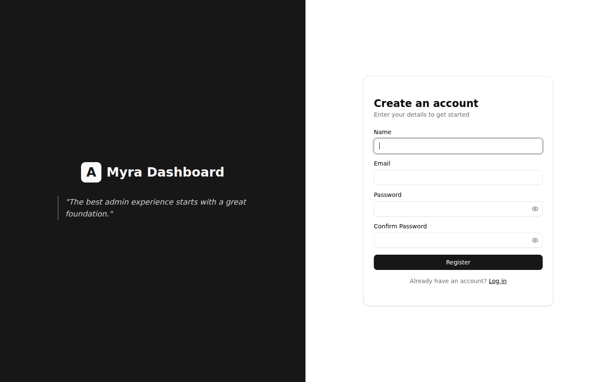
Password Reset Flow
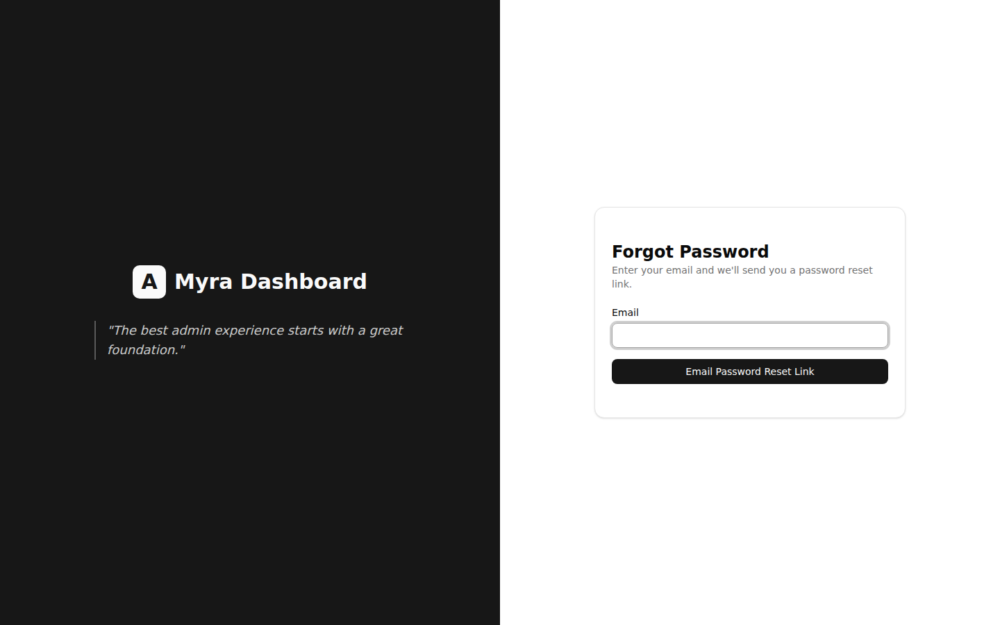
- Request Reset — User enters email on
ForgotPassword.vue. Laravel sends reset link. - Reset Password — User clicks email link, lands on
ResetPassword.vuewith token. Enters new password. - Redirect — After successful reset, user is redirected to login with success flash.
Two-Factor Authentication
The TwoFactorChallenge.vue page handles TOTP (time-based one-time password) verification after login. Users manage 2FA from the Profile Security page.
Challenge Flow
- Login — User logs in with email/password. If 2FA is enabled, redirected to challenge page.
- Enter Code — User enters 6-digit code from their authenticator app.
- Recovery Code — Alternatively, user can switch to recovery code input for backup access.
- Verification — On success, user is redirected to the intended destination.
Profile Page
Users can update their profile details (name, email) from the profile page.
Location: Pages/Profile/Edit.vue — Route: /profile
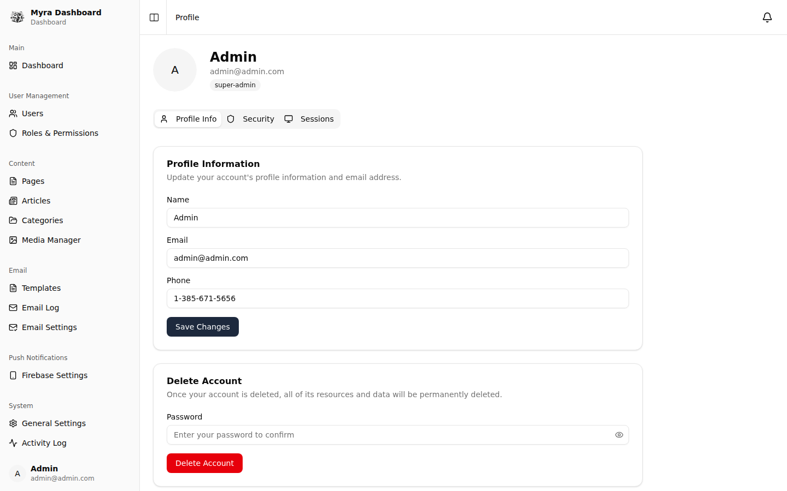
Layouts
Two layout components wrap all pages: AuthenticatedLayout for logged-in users and GuestLayout for auth pages.
AuthenticatedLayout
Main application layout with collapsible sidebar, sticky header, breadcrumb navigation in the content area, and configurable logo position.
File: resources/js/Layouts/AuthenticatedLayout.vue
Structure
Logo Position
The logo can be displayed in either the header (centered in the top bar) or the sidebar (top of sidebar with site name). This is configurable via Settings → Appearance → Logo Position. The setting is stored as logo_position in the appearance settings group and passed to the frontend via siteSettings.logo_position.
Props
| Prop | Type | Description |
|---|---|---|
breadcrumbs | BreadcrumbItem[] | Breadcrumb trail (see Breadcrumbs) |
<AuthenticatedLayout :breadcrumbs="[
{ label: 'User Management' },
{ label: 'Users', href: route('admin.users.index') },
{ label: 'Create' },
]">
<Head title="Create User" />
<!-- page content -->
</AuthenticatedLayout>Permission-Based Navigation
Each nav item has an optional permission field. Items are only shown if the user has the required permission (checked via usePermissions).
// Sidebar nav item structure
{
title: 'Users',
href: route('admin.users.index'),
icon: Users,
permission: 'users.view', // hidden if user lacks this permission
}GuestLayout
Split-panel layout for authentication pages. Left panel shows branding, right panel shows the auth form.
File: resources/js/Layouts/GuestLayout.vue
Structure
<GuestLayout>
<Head title="Login" />
<form @submit.prevent="submit">
<!-- login form fields -->
</form>
</GuestLayout>Admin Modules
Pre-built admin modules covering common application needs. Each module follows the standard controller/service/page pattern.
User Management
Full CRUD for user accounts with role assignment, status management, and search.
Location: Pages/Admin/Users/ — Permissions: users.view, users.create, users.edit, users.delete
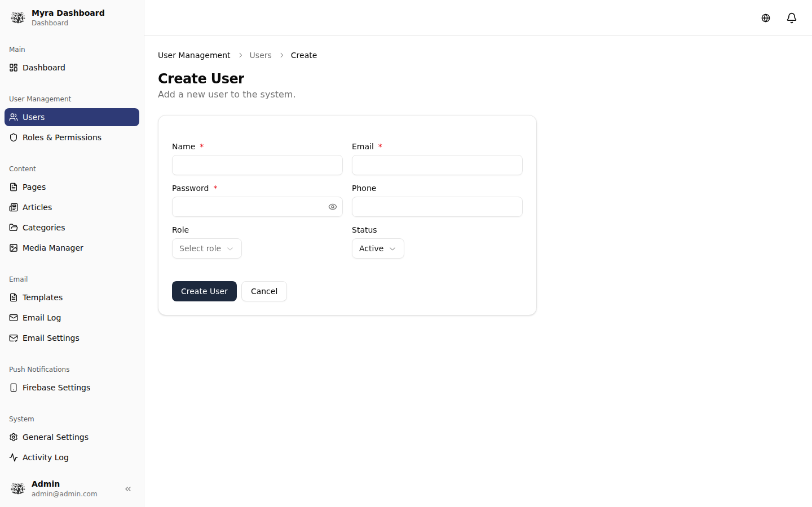
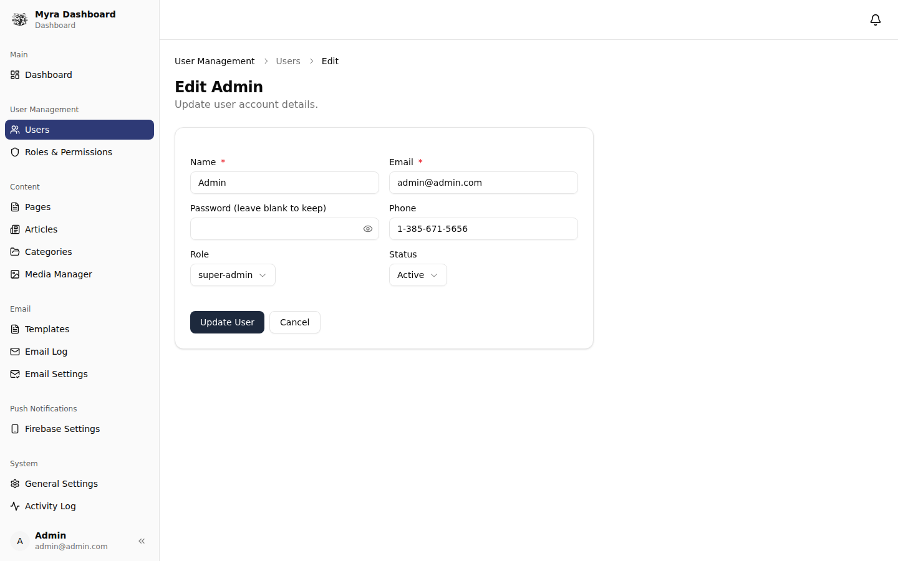
Pages
| Page | Route | Description |
|---|---|---|
Index.vue | /admin/users | DataTable with name, email, status, roles, created date |
Create.vue | /admin/users/create | Form: name, email, password, role assignment, status |
Edit.vue | /admin/users/{id}/edit | Edit form with optional password change |
Features
- Search by name or email
- Sort by name, email, status, or created date
- Selectable rows with bulk actions (activate, suspend, delete)
- Role assignment via multi-select on create/edit
- Status badge with color coding (active=green, suspended=red, pending=gray)
- Export CSV
- Impersonate user
- Delete with confirmation dialog
Table Filters
The Users index includes built-in table filters accessible via the Filters toolbar button:
- Status — Filter by Active, Suspended, or Pending
- Role — Filter by any assigned role (dynamically populated from available roles)
Roles & Permissions
Manage roles and their associated permissions using Spatie's permission package.
Location: Pages/Admin/Roles/ & Pages/Admin/Permissions/
Roles Pages
| Page | Route | Description |
|---|---|---|
Index.vue | /admin/roles | DataTable: role name, permission count, user count |
Edit.vue | /admin/roles/{id}/edit | Edit role name and toggle permissions |
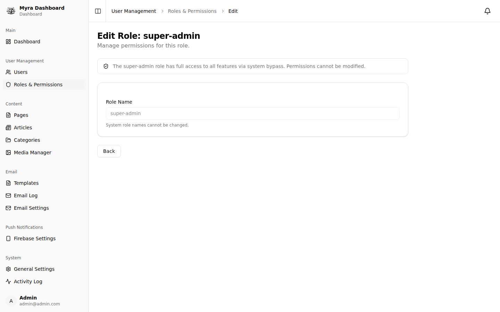
Permissions Page
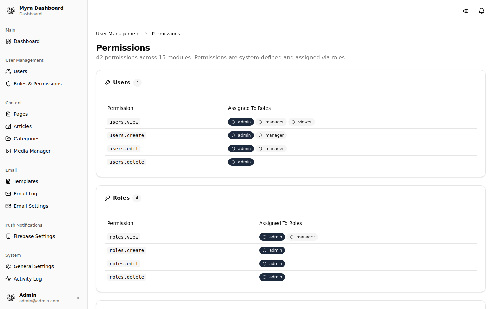
| Page | Route | Description |
|---|---|---|
Index.vue | /admin/permissions | View all permissions grouped by resource |
Permission Naming Convention
// Pattern: {resource}.{action}
'users.view', 'users.create', 'users.edit', 'users.delete',
'roles.view', 'roles.edit',
'permissions.view',
'settings.view', 'settings.edit',
'email.view',
'backups.view', 'backups.create', 'backups.delete',
'api-tokens.view', 'api-tokens.create', 'api-tokens.delete',
'system-health.view',
'activity-log.view',
'media.view', 'media.upload', 'media.delete',
'notifications.view', 'notifications.create',Site Settings
Grouped settings page using SettingsCard components with schema-driven forms.
Location: Pages/Admin/Settings/Index.vue — Route: /admin/settings
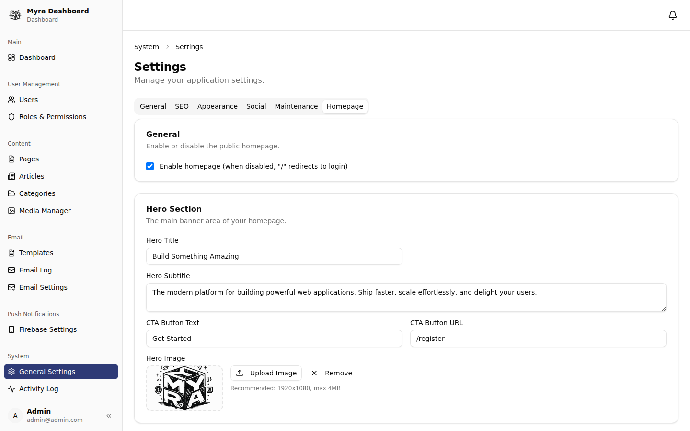
General Tab Highlights
- Login tagline — editable copy shown on the login screen's branding panel (
general.login_tagline). - Enable Sign Up — a server-enforced toggle (
general.registration_enabled). When off, theregisterroutes are blocked by theregistrationmiddleware (GET redirects to login, POST returns 403) and the "Sign up" link is hidden.
Settings Groups
Each settings group is a separate SettingsCard with its own form and schema:
<SettingsCard title="General" description="Basic site configuration." :processing="generalForm.processing" @submit="save('general', generalForm)">
<FormFields :schema="generalSchema" :form="generalForm" />
</SettingsCard>
<SettingsCard title="SEO" :processing="seoForm.processing" :columns="1" @submit="save('seo', seoForm)">
<FormFields :schema="seoSchema" :form="seoForm" />
</SettingsCard>Email System
Email template management, email log viewer, and SMTP configuration.
Location: Pages/Admin/Email/ — Permissions: email.view, settings.view
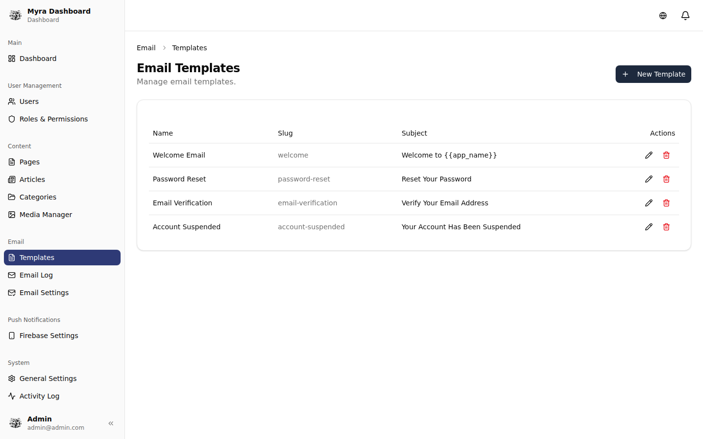
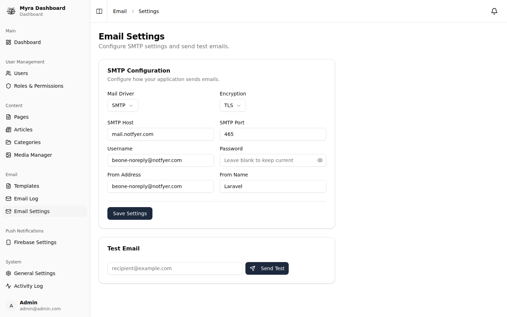
Pages
| Page | Route | Description |
|---|---|---|
Templates/Index.vue | /admin/email/templates | List email templates |
Templates/Edit.vue | /admin/email/templates/{id}/edit | Edit template content |
Log.vue | /admin/email/log | DataTable of sent emails with status badges |
Settings.vue | /admin/email/settings | SMTP configuration (host, port, encryption, credentials) |
Email Log Columns
To (sortable), Subject (sortable), Template, Status (sortable, badge), Sent At (sortable)
Table Filters
The Email Log includes a status filter accessible via the Filters toolbar button:
- Status — Filter by email delivery status (dynamically populated from existing statuses)
Backups
Database and file backup management using Spatie's backup package.
Location: Pages/Admin/Backups/Index.vue — Permissions: backups.view, backups.create, backups.delete
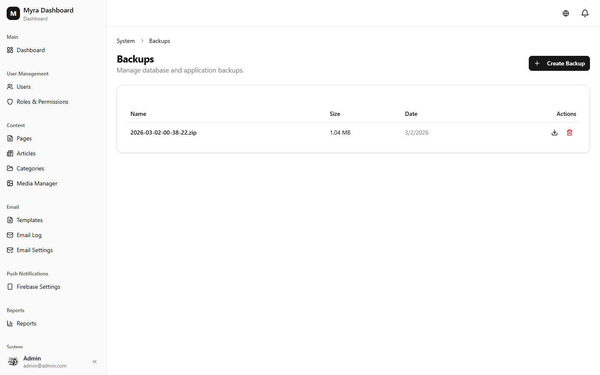
Features
- View list of existing backups with size and creation date
- Create new backup (triggers Artisan command)
- Download backup files
- Delete old backups with confirmation
API Tokens
Manage API tokens for programmatic access.
Location: Pages/Admin/ApiTokens/Index.vue — Permissions: api-tokens.view, api-tokens.create, api-tokens.delete
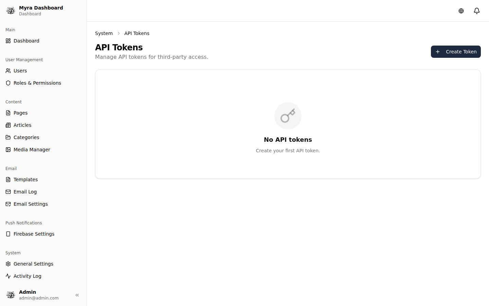
Features
- Generate new tokens with a name and optional expiration
- View existing tokens with last-used date
- Revoke tokens with confirmation
- Token value shown once on creation (not stored in plain text)
System Health
Dashboard showing server information and health check results, powered by spatie/laravel-health.
Location: Pages/Admin/SystemHealth.vue — Permission: system-health.view
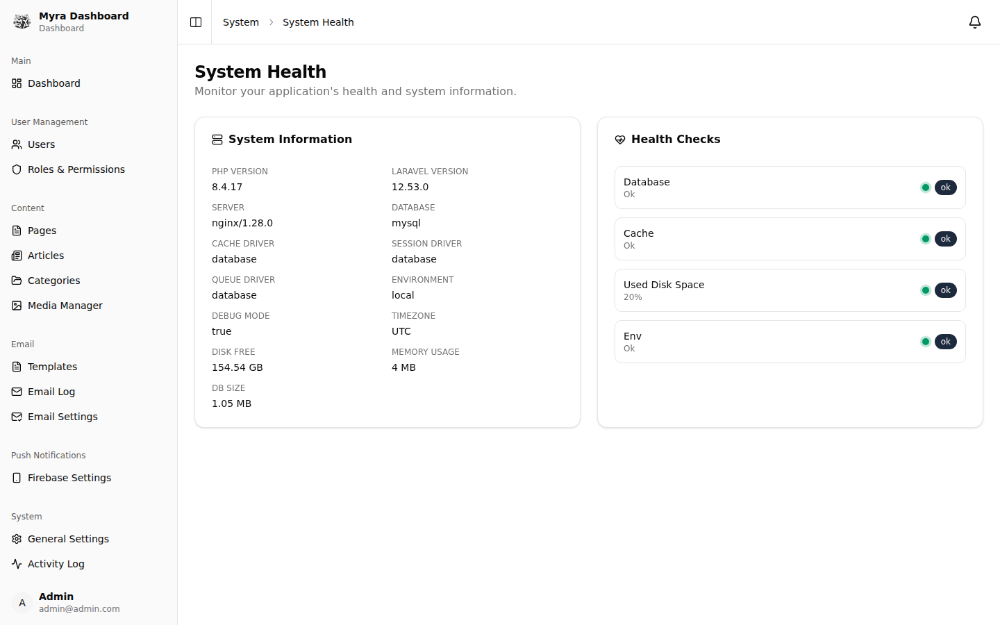
System Information Panel
- PHP version
- Laravel version
- Server software
- Database driver and size (MB)
- Disk free space (GB)
- Memory usage (MB)
- Cache, session, and queue driver configuration
- Environment and debug mode
- Timezone
Health Checks Panel
Runs registered Spatie Health checks on page load and displays each with a status indicator (green pulse for OK, red for failed).
- Database connectivity
- Cache health
- Disk space usage
- Environment configuration (
App\Health\EnvCheck)
Environment Health Check
Custom Spatie Health check (app/Health/EnvCheck.php) that validates critical environment variables:
| Check | Severity | Condition |
|---|---|---|
APP_KEY | Failed | Key is not set |
APP_DEBUG | Failed | true in production |
APP_URL | Warning | http://localhost in production |
MAIL_MAILER | Warning | log in production |
Activity Log
Audit trail of model changes across the application, powered by spatie/laravel-activitylog.
Location: Pages/Admin/ActivityLog/Index.vue — Permission: activity-log.view
Columns
| Column | Description |
|---|---|
description | Action description (sortable, searchable) |
causer_name | User who performed the action (or "System") |
subject_type | Affected model (e.g., User, Role) |
event | Event type badge (created, updated, deleted) |
created_at | Timestamp (sortable) |
Features
- Search by description or subject type
- Expandable rows showing before/after property changes
- Highlights changed values in green in the "After" panel
Table Filters
The Activity Log includes a log name filter accessible via the Filters toolbar button:
- Log Name — Filter by log channel (dynamically populated from distinct
log_namevalues)
Media Manager
File upload and management interface.
Location: Pages/Admin/Media/Index.vue — Permissions: media.view, media.upload, media.delete
Features
- Grid and list view for uploaded files
- Drag-and-drop file upload
- Image preview with thumbnails
- Copy URL to clipboard
- Delete files with confirmation
- Search and filter by file type
Notifications (Admin)
Admin interface for viewing all sent notifications and sending new ones to users.
Location: Pages/Admin/Notifications/ — Permissions: notifications.view, notifications.create
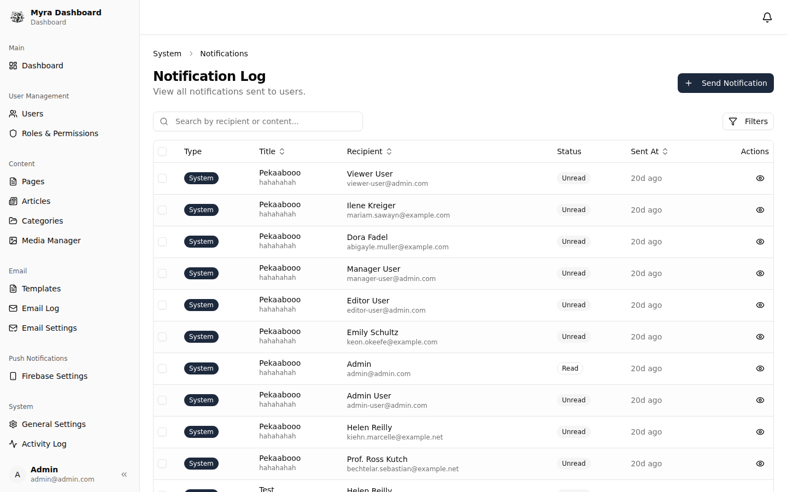
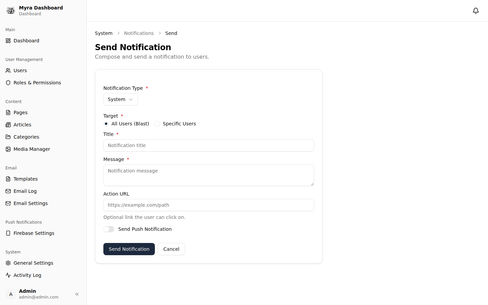
Pages
| Page | Route | Description |
|---|---|---|
Index.vue | /admin/notifications | DataTable of all user notifications with search, type/status badges |
Create.vue | /admin/notifications/create | Send notification form with user picker |
Index Columns
| Column | Description |
|---|---|
type | Badge: system (default), user_action (secondary), security_alert (destructive) |
title | Clickable — opens detail dialog with full message |
user_name | Recipient name and email |
read_at | Status badge: Read / Unread |
created_at | Relative timestamp |
Send Notification Form
- Notification type: System, User Action, Security Alert
- Target: All Users (blast) or Specific Users (multi-select picker)
- Title, message, and optional action URL
- Send Push Notification toggle (sends via Firebase Cloud Messaging when enabled)
- Confirmation dialog before sending
Table Filters
The Notification Log includes built-in table filters accessible via the Filters toolbar button:
- Type — Filter by System, User Action, or Security Alert
- Read Status — Filter by Read or Unread
Push Notifications (Firebase Cloud Messaging)
Full Firebase Cloud Messaging integration for web push notifications. Managed entirely from the admin panel — no .env changes required for basic setup.
Location: Pages/Admin/Firebase/Settings.vue — Permissions: firebase.view, firebase.edit
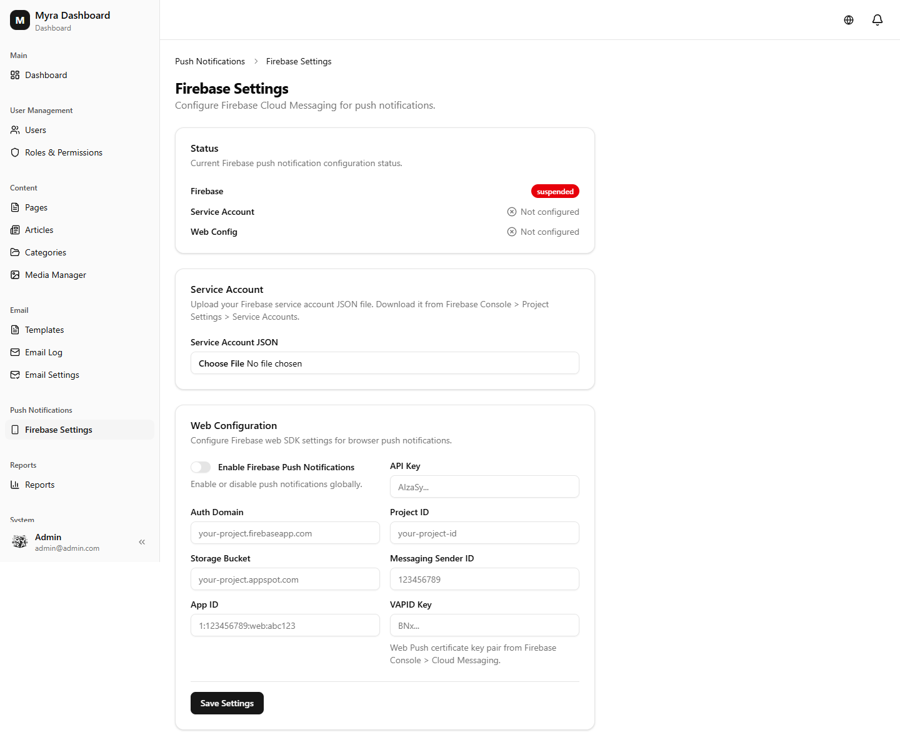
Architecture Overview
Push notifications flow through the existing Laravel notification system via a custom FcmChannel:
Setup Steps
- Navigate to Admin > Push Notifications > Firebase Settings
- Upload your Firebase service account JSON (from Firebase Console > Project Settings > Service Accounts)
- Fill in the Web Configuration fields (API Key, Auth Domain, Project ID, etc. from Firebase Console > General)
- Enter the VAPID key (from Firebase Console > Cloud Messaging > Web Push certificates)
- Toggle Enable Firebase Push Notifications on and save
- Click Enable Push for This Browser in the Test section and accept the browser permission prompt
- Click Send Test to verify the configuration
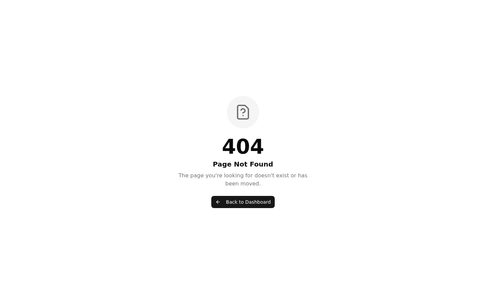
Admin Routes
| Method | URI | Permission | Description |
|---|---|---|---|
GET | /admin/firebase-settings | firebase.view | Firebase settings page |
PUT | /admin/firebase-settings | firebase.edit | Update Firebase settings |
POST | /admin/firebase-settings/test | firebase.edit | Send test push notification |
User-Facing Routes
| Method | URI | Description |
|---|---|---|
POST | /fcm-tokens | Register FCM token for current user |
DELETE | /fcm-tokens | Unregister FCM token |
Settings Page Cards
| Card | Description |
|---|---|
| Status | Shows Firebase enabled/disabled, service account upload status, web config status, browser permission status |
| Service Account | File upload for the Firebase service account JSON. Validates required keys (type, project_id, private_key, client_email) |
| Web Configuration | Toggle + text inputs for all Firebase web SDK config keys (API Key, Auth Domain, Project ID, Storage Bucket, Messaging Sender ID, App ID, VAPID Key) |
| Test Push | "Enable Push for This Browser" button, auto-filled token input, Send Test button. Only visible when Firebase is enabled and service account is configured |
Backend Components
| File | Purpose |
|---|---|
app/Settings/FirebaseSettings.php | Spatie settings class for Firebase config (group: firebase) |
app/Services/FirebaseService.php | Core service: sendToUser(), sendToTokens(), sendTest(), validateServiceAccount() |
app/Channels/FcmChannel.php | Laravel notification channel — calls toFcm() or toArray() on the notification |
app/Models/FcmToken.php | Eloquent model for stored FCM tokens (user_id, token, device_type, device_name) |
app/Http/Controllers/Admin/FirebaseSettingController.php | Admin settings CRUD + test push endpoint |
app/Http/Controllers/FcmTokenController.php | Token register/unregister API for authenticated users |
Frontend Components
| File | Purpose |
|---|---|
public/firebase-messaging-sw.js | Service worker for background push — uses Firebase compat SDK. Receives config via postMessage |
resources/js/composables/useFirebaseMessaging.ts | Vue composable: initializes Firebase, registers SW, handles foreground messages, provides requestPermission() |
resources/js/Pages/Admin/Firebase/Settings.vue | Admin settings page with status, upload, config, and test cards |
FCM Token Database Schema
Schema::create('fcm_tokens', function (Blueprint $table) {
$table->id();
$table->foreignId('user_id')->constrained()->cascadeOnDelete();
$table->string('token', 512)->unique();
$table->enum('device_type', ['web', 'android', 'ios'])->default('web');
$table->string('device_name')->nullable();
$table->timestamp('last_used_at')->nullable();
$table->timestamps();
$table->index(['user_id', 'device_type']);
});Adding Push to Notification Classes
Push is opt-in per notification. All four notification classes (SystemNotification, UserActionNotification, SecurityAlertNotification, BroadcastableNotification) support push:
class SystemNotification extends Notification
{
public bool $sendPush = false;
public function via(object $notifiable): array
{
$channels = ['database'];
if ($this->sendPush && app(FirebaseService::class)->isEnabled()) {
$channels[] = FcmChannel::class;
}
return $channels;
}
public function toFcm(object $notifiable): array
{
return [
'title' => $this->title,
'message' => $this->message,
'action_url' => $this->actionUrl,
'type' => 'system',
];
}
}Shared Inertia Data
Firebase web config is shared via HandleInertiaRequests middleware (cached 1 hour):
// HandleInertiaRequests.php
'firebaseConfig' => fn () => cache()->remember('firebase_web_config', 3600, function () {
$settings = app(FirebaseSettings::class);
if (!$settings->enabled) return null;
return array_filter([
'apiKey' => $settings->api_key,
'authDomain' => $settings->auth_domain,
'projectId' => $settings->project_id,
// ... other config keys
]) ?: null;
}),useFirebaseMessaging Composable
Called automatically in AuthenticatedLayout. Initializes Firebase when config is present, registers the service worker, and listens for foreground messages (shows toast + reloads notification count).
import { useFirebaseMessaging } from '@/composables/useFirebaseMessaging';
// In AuthenticatedLayout.vue setup
useFirebaseMessaging();
// In Firebase Settings page for manual control
const { permissionStatus, currentToken, isSupported, requestPermission, unregisterToken } = useFirebaseMessaging();| Return | Type | Description |
|---|---|---|
permissionStatus | Ref<NotificationPermission> | Browser permission: 'default', 'granted', or 'denied' |
currentToken | Ref<string | null> | Current FCM token (null if not registered) |
isSupported | Ref<boolean> | Whether the browser supports push notifications |
requestPermission() | () => Promise<string | null> | Request browser permission, get token, register with backend |
unregisterToken() | () => Promise<void> | Unregister current token from backend |
Service Worker
The service worker at public/firebase-messaging-sw.js handles background push notifications. It receives Firebase config via postMessage from the app and shows system notifications when messages arrive while the app is in the background. Clicking a notification opens or focuses the app at the action URL.
.env for the service account path:
# .env (optional)
FIREBASE_CREDENTIALS=storage/app/firebase/service-account.json
VITE_FIREBASE_API_KEY=AIzaSy...
VITE_FIREBASE_VAPID_KEY=BNx...FirebaseService automatically detects and removes invalid tokens from the fcm_tokens table using the multicast failure report. This keeps the token table clean without manual maintenance.
AI Assistant
A bring-your-own-key AI integration that powers a streaming writing assistant inside the rich text editor. The provider is pluggable, so you can use a hosted API or a self-hosted model without changing any frontend code.
Admin config: /admin/settings (AI tab) — Settings class: App\Settings\AiSettings (group ai)
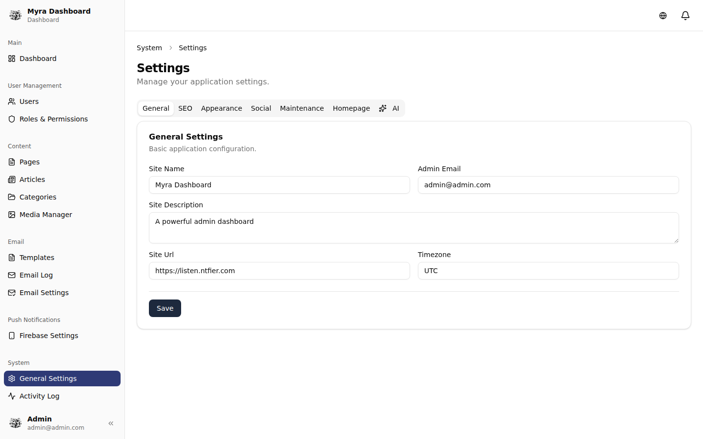
Supported Providers
The active provider is resolved from AiSettings::provider by App\Services\Ai\AiService. Each provider implements AiProviderInterface (complete(), stream(), testConnection()).
| Provider | Class | Default Model | Notes |
|---|---|---|---|
openai (default) | OpenAiProvider | gpt-4o-mini | API key required; custom base_url supported (Azure / compatible gateways) |
anthropic | AnthropicProvider | claude-sonnet-4-5-20250929 | API key required |
openrouter | OpenRouterProvider | openai/gpt-4o-mini | API key required; any OpenRouter-listed model |
ollama | OllamaProvider | llama3.1 | Self-hosted, no API key; set base_url to your Ollama host |
Settings Fields
| Field | Type | Description |
|---|---|---|
enabled | bool | Master switch. When off, the assistant and endpoints return a disabled message |
provider | string | One of openai, anthropic, openrouter, ollama |
api_key | string | Provider API key (left blank on save = keep existing key) |
model | string | Overrides the provider default model |
base_url | string | Custom endpoint (OpenAI-compatible gateways, Ollama host) |
temperature | float | 0–2 sampling temperature (default 0.7) |
max_tokens | int | 1–32000 response cap (default 2048) |
Editor AI Assistant
The TipTapAiAssistant component adds a Sparkles menu to the rich text editor toolbar. It calls the streaming endpoint and inserts the result into the document as it arrives. Available actions:
| Action | Behaviour |
|---|---|
generate | Generate new content from a free-text prompt |
improve | Improve writing quality, preserving meaning |
fix_grammar | Fix grammar, spelling, and punctuation |
make_shorter | Condense while keeping key information |
make_longer | Expand with more relevant detail |
summarize | Produce a concise overview |
change_tone | Rewrite in a professional, casual, friendly, or formal tone |
Routes
| Method | URI | Name | Access |
|---|---|---|---|
| PUT | /admin/settings/ai | admin.settings.update-ai | permission:settings.edit |
| POST | /admin/ai/test | admin.ai.test-connection | permission:settings.edit |
| POST | /ai/assist | ai.assist | Any authenticated user, throttle:30,1 |
/ai/assist returns a Server-Sent Events stream (text/event-stream) — chunks arrive as data: {"content": "..."} lines terminated by data: [DONE]. The assistant UI only renders when the shared Inertia prop aiEnabled is true, which mirrors AiSettings::enabled (cached for one hour and cleared on save).
App Install Command
One-command setup for new developers. Runs migrations, seeders, and creates the initial admin account.
php artisan app:installSteps
- Checks if the application is already installed (settings table has data)
- Validates environment variables (APP_KEY, APP_URL, DB_CONNECTION)
- Runs
migrate --force - Seeds roles & permissions (
RoleAndPermissionSeeder) - Runs
shield:generateto sync all module permissions fromconfig/shield.php - Seeds application settings (
SettingsSeeder) - Seeds email templates (
EmailTemplateSeeder) - Prompts for admin name, email, and password
- Creates admin user with
super-adminrole
Idempotent Behavior
- Seeders use
firstOrCreate/updateOrInsert— safe to re-run - If the admin email already exists, assigns
super-adminrole instead of creating a duplicate - Prompts for confirmation if already installed
File: app/Console/Commands/AppInstallCommand.php
Scaffold Commands
Artisan commands for generating admin resources and pages.
myra:resource
Generates a full CRUD resource with controller, service, and 3 Vue pages.
php artisan myra:resource {Name}Example
php artisan myra:resource ProductGenerated Files
| File | Description |
|---|---|
app/Http/Controllers/Admin/ProductController.php | CRUD controller with constructor-injected ProductService |
app/Services/ProductService.php | Service with SearchableQuery trait for list/create/update/delete |
resources/js/Pages/Admin/Products/Index.vue | DataTable with schema-based columns and actions (no manual slots) |
resources/js/Pages/Admin/Products/Create.vue | ResourceForm with Section layout and FormFields |
resources/js/Pages/Admin/Products/Edit.vue | ResourceForm with Section layout and pre-filled data |
The command prints route definitions and skips files that already exist (prints a warning). Creates directories automatically if they don't exist.
myra:page
Generates a single admin page (for dashboards, analytics, settings).
php artisan myra:page {Name}Generated Files
| File | Description |
|---|---|
app/Http/Controllers/Admin/AnalyticsController.php | Controller with index() method |
resources/js/Pages/Admin/Analytics/Index.vue | Basic page with PageHeader |
Variable Substitutions
Both commands use stub templates with placeholder replacement:
| Placeholder | Example (for Product) | Description |
|---|---|---|
{{ model }} | Product | PascalCase singular |
{{ modelVariable }} | product | camelCase singular |
{{ modelPlural }} | Products | PascalCase plural |
{{ modelPluralVariable }} | products | camelCase plural |
{{ routePrefix }} | products | kebab-case plural |
{{ permissionPrefix }} | products | kebab-case plural |
Pluralization Examples
| Input | Plural | Route Prefix |
|---|---|---|
Product | Products | products |
Category | Categories | categories |
Person | People | people |
BlogPost | BlogPosts | blog-posts |
Laravel's Str::plural() and Str::kebab() handle pluralization and casing.
BlogPost, not blog-post). The command handles all casing transformations automatically.
Stub Files
All templates are in stubs/admin/:
| Stub | Used by | Description |
|---|---|---|
controller.resource.stub | myra:resource | CRUD controller |
service.stub | myra:resource | Service with SearchableQuery |
page.index.stub | myra:resource | DataTable with column/action builders |
page.create.stub | myra:resource | Create form with Section layout |
page.edit.stub | myra:resource | Edit form with Section layout |
controller.page.stub | myra:page | Single-action controller |
page.single.stub | myra:page | Basic page template |
Post-Scaffold Checklist
myra:resource:
- Add routes — Paste the printed routes into
routes/web.php - Create model —
php artisan make:model {Name} -m - Run migration —
php artisan migrate - Update validation — Edit the controller's
store()andupdate()rules - Customize form schema — Edit Create.vue and Edit.vue schemas
- Customize table columns — Edit Index.vue column definitions
- Add searchable columns — Edit the service's
list()method - Create permissions — Add permissions via seeder or admin UI
- Add sidebar navigation — Add the menu item to the sidebar config
Artisan Command Reference v2.0
Myra ships a Filament-style code generator. The make:myra-* commands scaffold admin pages from stubs or from any Feature Demo, and auto-wire everything: they create the Spatie permissions, register the route, and add the sidebar nav item — so a new module is live (and assignable to any role by a super-admin) without touching a single file by hand.
--print flag// myra:routes in routes/web.php, /* myra:nav */ in a "Custom" sidebar group in AuthenticatedLayout.vue, and /* myra:modules */ in config/shield.php. Re-running a command skips files/routes/nav that already exist. Pass --print to print the route + nav snippets instead of editing source files.
Command Summary
| Command | What it does |
|---|---|
php artisan app:install | One-time setup: migrations, seeders (roles/permissions/settings/email templates), shield:generate, and an interactive super-admin account. |
php artisan shield:generate | Syncs Spatie permissions from config/shield.php (a {module}.{ability} per entry), ensures the super-admin/admin roles exist, and grants every permission to admin. Safe to re-run. |
php artisan content:sanitize | Runs existing stored HTML (articles, pages, email templates) through the server-side HtmlSanitizer. Use --dry-run to preview. New content is sanitized on write; this backfills older rows. |
php artisan make:myra-page {Name} | Single admin page (controller + Vue page) + {name}.view permission + route + nav. |
php artisan make:myra-resource {Name} | Full CRUD (controller, service, 3 Vue pages) + 4 permissions + 6 routes + nav. --model also runs make:model -m. |
php artisan make:myra-component {Name} {keyword} | Clones a Feature Demo into a runnable page + controller (with sample data) + {name}.view permission + route + nav. |
php artisan make:myra-setting {Name} | Scaffolds a Spatie settings group: a {Name}Settings class, a seeding migration, a controller, and an admin settings page (SettingsCard + FormFields) + {name}-settings.view/edit permissions + route + nav. |
php artisan make:myra-export {Model} | Streaming CSV export controller for a model (uses the ExportableQuery trait) + a {prefix}.export-csv route gated by {prefix}.view. |
php artisan make:myra-import {Model} | CSV import controller (preview + execute with column mapping) for a model + import-preview/import-execute routes gated by {prefix}.create. |
php artisan make:myra-policy {Model} | A Laravel policy whose abilities map to the Shield {prefix}.view/create/edit/delete permissions (auto-discovered). |
php artisan make:myra-user | Create an active, verified user interactively (--admin for super-admin; --name/--email to skip prompts). |
php artisan myra:about | Read-only status: framework version, RBAC modules, settings groups, generators, and record counts. |
php artisan myra:page / myra:resource | Legacy generators from the myra/framework package. They scaffold from the same stubs but print routes and do not create permissions or nav. Prefer the make:myra-* commands. |
make:myra-page
For dashboards, analytics, or settings-style screens with no CRUD.
php artisan make:myra-page Analytics --icon=ChartBarGenerates & wires: AnalyticsController, Pages/Admin/Analytics/Index.vue, permission analytics.view, route admin.analytics.index (gated by permission:analytics.view), and a "Custom" sidebar item. Options: --icon (lucide name, auto-imported), --group, --print.
make:myra-resource
For full create/read/update/delete modules.
php artisan make:myra-resource Product --modelGenerates & wires: controller + ProductService (with the SearchableQuery trait) + Index/Create/Edit.vue, the four permissions products.view|create|edit|delete, all six CRUD routes, and a nav item. With --model it also creates the Eloquent model and migration. Remember to fill in the migration columns and validation rules.
make:myra-component — clone a Feature Demo
The fastest way to a working page: clone any of the 18 Feature Demos, renamed for your resource. The page ships with realistic sample data (from the HasSampleData trait) and runs immediately — swap in your model when ready.
# Student page built from the Form Builder demo
php artisan make:myra-component Student form-builder
# A data table with bulk actions
php artisan make:myra-component Invoice data-tableArguments: Name = page/controller name (PascalCase); keyword = a component from the catalog below. Unknown keywords print the valid list.
Component Keyword Catalog
Defined in config/myra.php — extend it to add your own. Each keyword clones the matching resources/js/Pages/Admin/Demo/*.vue.
| Keyword | Clones | Produces |
|---|---|---|
form-builder | FormBuilder | Schema-driven form with every field type |
rich-text-editor | RichTextEditor | TipTap editor page |
repeater-field | RepeaterField | Dynamic add/remove field groups |
conditional-fields | ConditionalFields | Show/hide fields by condition |
wizard | WizardDemo | Multi-step wizard with per-step validation |
field-types | FieldTypes | TimePicker, CheckboxList, KeyValue, Markdown |
global-search | GlobalSearch | Command-palette search demo |
data-table / bulk-actions | BulkActions | DataTable with selection + bulk operations |
advanced-filters | AdvancedFilters | Select/ternary/date-range/query-builder filters |
inline-editing | InlineEditing | Editable table cells |
grouping | Grouping | Row grouping with summaries |
import-export | ImportExport | CSV import preview + export |
action-modals | ActionModals | Modal-based inline CRUD |
soft-deletes | SoftDeletes | Trash / restore / force-delete workflow |
infolist | Infolist | Read-only detail (show) page |
relation-manager | RelationManager | Detail page with related-record tables |
widgets | Widgets | Dashboard with stat/chart/table widgets |
reordering | Reordering | Drag-and-drop ordering |
map | Map | MapLibre map with markers, popups, route, and clustering |
make:myra-setting — scaffold a settings group
Generates a complete, persisted settings group backed by Spatie Laravel Settings — no boilerplate.
php artisan make:myra-setting Billing
php artisan migrate # seeds the defaultsGenerated & wired
| File | Purpose |
|---|---|
app/Settings/BillingSettings.php | Spatie Settings class (group billing) with typed properties |
database/migrations/..._add_billing_settings.php | Seeds default values |
app/Http/Controllers/Admin/BillingSettingsController.php | index + validated update |
resources/js/Pages/Admin/BillingSettings/Index.vue | Settings page using SettingsCard + FormFields |
Auto-wires GET/PUT routes at /admin/billing-settings, a sidebar item, and billing-settings.view/billing-settings.edit permissions. Edit the generated Settings class properties + the page schema to add your own fields.
RBAC — Shield Layer
Permissions follow a strict {module}.{ability} convention, declared once in config/shield.php and materialised by php artisan shield:generate. The super-admin role bypasses all checks via the Gate::before callback in AppServiceProvider; the admin role receives every generated permission.
// config/shield.php
return [
'super_admin_role' => 'super-admin',
'admin_role' => 'admin',
'privileged_roles' => ['super-admin', 'admin'], // assignable only by a super-admin
'modules' => [
'users' => ['view', 'create', 'edit', 'delete'],
// …
'demo' => ['view'],
'search' => ['view'],
/* myra:modules */ // scaffolding commands append here
],
];Convention middleware (shield)
The shield alias (App\Http\Middleware\ShieldPermission) derives the required permission from the route name: admin.{prefix}.index → {prefix}.view, create/store → create, edit/update → edit, destroy/force-delete/bulk-action → delete (anything else → view). It's intended for scaffolded pages whose route prefix matches their module; modules whose route name differs from the permission prefix (e.g. email-templates → email) keep their explicit permission: gate.
The previously open /admin/demo/* and /admin/search routes are now gated by demo.view and search.view.
Per-User Data Isolation
The App\Models\Traits\OwnedByUser trait stamps an owner column (created_by) on create and adds an owned global scope: authenticated non-super-admins see only their own rows, super-admins see everything, and unauthenticated requests are unaffected (so the public blog still works).
| Model | Isolation |
|---|---|
| Article, Page, Category | OwnedByUser global scope on created_by |
| Media | Manager scoped to the uploader (media attached to the user); deletes ownership-checked |
| Users, Email Templates | Query-level scoping (a global scope here would break auth/session and system email lookups) |
PublicArticleController, PublicPageController) call withoutGlobalScope('owned') so logged-in non-super users still see the full public site. Rows created before this feature have created_by = null and are visible only to super-admins until backfilled.
Role & User Protections
- Non-super-admins never see or manage super-admin accounts; an admin cannot manage another admin.
- Non-super-admins only see/manage users they created.
- Only a super-admin can assign the privileged roles (
admin,super-admin); other roles are filtered out of the assignment dropdown server-side. - Roles carry
is_activeandvisibleflags (customApp\Models\Role). A super-admin toggles them from Roles & Permissions: a disabled role cannot be assigned (rejected server-side); a hidden role is removed from non-super-admin pickers and lists. The super-admin role is locked (always active & visible).
PHP Backend
Server-side patterns used by the Myra Starter Kit.
Controller Pattern
Admin controllers follow a consistent structure with constructor-injected services.
Location: app/Http/Controllers/Admin/
<?php
namespace App\Http\Controllers\Admin;
use App\Http\Controllers\Controller;
use App\Models\Product;
use App\Services\ProductService;
use Illuminate\Http\RedirectResponse;
use Illuminate\Http\Request;
use Inertia\Inertia;
use Inertia\Response;
class ProductController extends Controller
{
public function __construct(private readonly ProductService $productService) {}
public function index(Request $request): Response
{
return Inertia::render('Admin/Products/Index', [
'products' => $this->productService->list($request),
'filters' => $request->only(['search', 'sort', 'direction']),
]);
}
public function create(): Response
{
return Inertia::render('Admin/Products/Create');
}
public function store(Request $request): RedirectResponse
{
$validated = $request->validate([
'name' => 'required|string|max:255',
]);
$this->productService->create($validated);
return redirect()->route('admin.products.index')
->with('success', 'Product created successfully.');
}
public function edit(Product $product): Response
{
return Inertia::render('Admin/Products/Edit', [
'product' => $product,
]);
}
public function update(Request $request, Product $product): RedirectResponse
{
$validated = $request->validate([
'name' => 'required|string|max:255',
]);
$this->productService->update($product, $validated);
return redirect()->route('admin.products.index')
->with('success', 'Product updated successfully.');
}
public function destroy(Product $product): RedirectResponse
{
$this->productService->delete($product);
return redirect()->route('admin.products.index')
->with('success', 'Product deleted successfully.');
}
}Key Conventions
- Constructor injection for services (
private readonly) - Return
Inertia::render()for page responses - Return
redirect()->route()->with('success', ...)for mutations - Pass
filtersto index pages for DataTable search/sort state - Use Laravel route model binding for edit/update/destroy
Service Pattern
Services encapsulate business logic and use the SearchableQuery trait for list operations.
Location: app/Services/
<?php
namespace App\Services;
use App\Admin\Traits\SearchableQuery;
use App\Models\Product;
use Illuminate\Contracts\Pagination\LengthAwarePaginator;
use Illuminate\Http\Request;
class ProductService
{
use SearchableQuery;
public function list(Request $request): LengthAwarePaginator
{
return $this->applySearchAndPaginate(
Product::query(),
$request,
searchable: ['name'],
);
}
public function create(array $data): Product
{
return Product::create($data);
}
public function update(Product $product, array $data): Product
{
$product->update($data);
return $product->fresh();
}
public function delete(Product $product): void
{
$product->delete();
}
}Advanced List Example
public function list(Request $request): LengthAwarePaginator
{
return $this->applySearchAndPaginate(
Product::query()
->with(['category', 'tags'])
->when($request->category, fn ($q, $cat) => $q->where('category_id', $cat))
->when($request->status, fn ($q, $status) => $q->where('status', $status))
->when($request->min_price, fn ($q, $min) => $q->where('price', '>=', $min)),
$request,
searchable: ['name', 'sku', 'description'],
defaultSort: 'name',
defaultDir: 'asc',
perPage: 25,
);
}SearchableQuery Trait
Reusable trait that applies search, sort, and pagination to Eloquent queries.
Location: app/Admin/Traits/SearchableQuery.php
Method Signature
public function applySearchAndPaginate(
Builder $query,
Request $request,
array $searchable = [],
string $defaultSort = 'created_at',
string $defaultDir = 'desc',
int $perPage = 15,
): LengthAwarePaginatorParameters
| Parameter | Type | Default | Description |
|---|---|---|---|
$query | Builder | required | Eloquent query builder |
$request | Request | required | HTTP request (reads search, sort, direction, per_page) |
$searchable | array | [] | Columns to search with LIKE %query% |
$defaultSort | string | 'created_at' | Default sort column |
$defaultDir | string | 'desc' | Default sort direction |
$perPage | int | 15 | Items per page |
How It Works
- Search: If
$request->searchexists and$searchableis not empty, appliesWHERE (col1 LIKE %search% OR col2 LIKE %search% OR ...) - Sort: If
$request->sortexists, appliesORDER BY {sort} {direction}. Otherwise uses defaults. - Paginate: Calls
->paginate($perPage)->withQueryString()to preserve query params in pagination links
Request Query Parameters
The trait reads these from the request (sent automatically by the DataTable component):
| Parameter | Description | Example |
|---|---|---|
search | Search query string | ?search=widget |
sort | Column to sort by | ?sort=name |
direction | Sort direction (asc or desc) | ?direction=asc |
per_page | Items per page override | ?per_page=25 |
Route Conventions
Admin routes use a consistent pattern with permission middleware:
// routes/web.php
Route::middleware(['auth', 'verified'])->prefix('admin')->name('admin.')->group(function () {
// CRUD Resource
Route::get('/products', [ProductController::class, 'index'])->middleware('permission:products.view')->name('products.index');
Route::get('/products/create', [ProductController::class, 'create'])->middleware('permission:products.create')->name('products.create');
Route::post('/products', [ProductController::class, 'store'])->middleware('permission:products.create')->name('products.store');
Route::get('/products/{product}/edit', [ProductController::class, 'edit'])->middleware('permission:products.edit')->name('products.edit');
Route::put('/products/{product}', [ProductController::class, 'update'])->middleware('permission:products.edit')->name('products.update');
Route::delete('/products/{product}', [ProductController::class, 'destroy'])->middleware('permission:products.delete')->name('products.destroy');
// Single Page
Route::get('/analytics', [AnalyticsController::class, 'index'])->name('analytics.index');
});Permission Naming
Permissions follow the pattern {resource}.{action}:
| Permission | Purpose |
|---|---|
products.view | View product list |
products.create | Create new products |
products.edit | Edit existing products |
products.delete | Delete products |
Flash Messages
Controllers flash success/error messages that are automatically shown as toasts via useFlashToasts:
// Success (green toast)
return redirect()->route('...')->with('success', 'Product created successfully.');
// Error (red toast)
return redirect()->back()->with('error', 'Something went wrong.');
// Warning (yellow toast)
return redirect()->back()->with('warning', 'Product is low on stock.');
// Info (blue toast)
return redirect()->back()->with('info', 'Product was archived.');Middleware
Key middleware used in the Myra Starter Kit.
HandleInertiaRequests
Shares global data with all Inertia pages:
// app/Http/Middleware/HandleInertiaRequests.php
public function share(Request $request): array
{
return [
...parent::share($request),
'auth' => [
'user' => $request->user() ? [
...$request->user()->only('id', 'name', 'email', 'avatar', 'status'),
'roles' => $request->user()->getRoleNames(),
'permissions' => $request->user()->getAllPermissions()->pluck('name'),
] : null,
],
'flash' => [
'success' => fn () => $request->session()->get('success'),
'error' => fn () => $request->session()->get('error'),
'warning' => fn () => $request->session()->get('warning'),
'info' => fn () => $request->session()->get('info'),
'newToken' => fn () => $request->session()->get('newToken'),
],
'unreadNotificationsCount' => fn () => $request->user()?->unreadNotifications()->count() ?? 0,
'recentNotifications' => fn () => $request->user()
?->notifications()->latest()->take(5)->get() ?? [],
'impersonating' => fn () => $request->session()->has('impersonator_id'),
'currentTeam' => fn () => $request->user()?->currentTeam,
'teams' => fn () => $request->user()?->teams()->get() ?? [],
// Cached for 1 hour; 'site_settings_shared' is cleared when settings are saved
'siteSettings' => fn () => cache()->remember('site_settings_shared', 3600, fn () => [...]),
'aiEnabled' => fn () => cache()->remember('ai_enabled', 3600, fn () => app(AiSettings::class)->enabled),
'firebaseConfig' => fn () => cache()->remember('firebase_web_config', 3600, fn () => [...]),
];
}fn () =>) ensures the data is only queried when actually used by the page. This prevents unnecessary database queries on every request.
Permission Middleware
Uses Spatie's permission middleware to protect routes:
// Applied per route
Route::get('/users', [UserController::class, 'index'])
->middleware('permission:users.view');
// Users without the permission get a 403 Forbidden responseRoute Middleware Stack
| Middleware | Purpose |
|---|---|
auth | Require authentication |
verified | Require email verification |
permission:{name} | Require specific permission (Spatie) |
// Typical admin route group
Route::middleware(['auth', 'verified'])
->prefix('admin')
->name('admin.')
->group(function () {
// Routes with individual permission middleware
});Type Definitions
TypeScript interfaces and types used throughout the Myra Starter Kit.
Core Types
File: resources/js/types/index.d.ts
User
interface User {
id: number;
name: string;
email: string;
email_verified_at?: string;
phone?: string;
avatar?: string;
status: 'active' | 'suspended' | 'pending';
roles: string[];
permissions: string[];
created_at: string;
updated_at: string;
}PaginatedData
Matches Laravel's LengthAwarePaginator JSON structure. Used by DataTable.
interface PaginatedData<T> {
data: T[];
links: {
first: string;
last: string;
prev: string | null;
next: string | null;
};
meta: {
current_page: number;
from: number;
last_page: number;
links: Array<{
url: string | null;
label: string;
active: boolean;
}>;
path: string;
per_page: number;
to: number;
total: number;
};
}PageProps
Inertia shared page props. Extended by page-specific props.
type PageProps<T extends Record<string, unknown> = Record<string, unknown>> = T & {
auth: { user: User };
flash?: {
success?: string;
error?: string;
warning?: string;
info?: string;
};
unreadNotificationsCount?: number;
siteSettings?: SiteSettings;
};Other Core Types
interface Role {
id: number;
name: string;
guard_name: string;
permissions: Permission[];
users_count?: number;
created_at: string;
updated_at: string;
}
interface Permission {
id: number;
name: string;
guard_name: string;
group?: string;
created_at: string;
updated_at: string;
}
interface Notification {
id: string;
type: string;
data: Record<string, unknown>;
read_at: string | null;
created_at: string;
}
interface SiteSettings {
site_name: string;
site_description: string;
site_logo?: string;
maintenance_mode: boolean;
}
interface BreadcrumbItem {
label: string;
href?: string;
}
interface NavItem {
title: string;
href?: string;
icon?: string;
permission?: string;
children?: NavItem[];
}Admin Types
File: resources/js/types/admin.d.ts
FieldSchema
interface FieldSchema {
name: string;
label: string;
type: 'text' | 'email' | 'password' | 'number' | 'textarea'
| 'select' | 'switch' | 'checkbox' | 'tel' | 'url'
| 'date' | 'datetime-local' | 'radio' | 'color'
| 'hidden' | 'file' | 'richtext' | 'repeater'
| 'slider' | 'number-field' | 'pin-input'
| 'tags-input' | 'toggle-group' | 'calendar'
| 'time' | 'checkbox-list' | 'key-value' | 'builder'
| 'markdown' | 'code';
required: boolean;
hint?: string;
hintIcon?: Component;
hintIconTooltip?: string;
hintColor?: SemanticColor;
hintAction?: HintAction;
placeholder?: string;
disabled: boolean;
colSpan?: number;
options?: SelectOption[];
rows?: number;
minDate?: string;
maxDate?: string;
inline?: boolean;
accept?: string;
multiple?: boolean;
maxSize?: number;
// Slider / NumberField
min?: number;
max?: number;
step?: number;
showValue?: boolean;
formatOptions?: Intl.NumberFormatOptions;
// PinInput
pinLength?: number;
pinMask?: boolean;
// TagsInput
maxTags?: number;
tagPlaceholder?: string;
// ToggleGroup
toggleMultiple?: boolean;
toggleVariant?: 'default' | 'outline';
// Calendar date picker
useCalendar?: boolean;
dateFormat?: string;
// Repeater
subSchema?: SchemaItem[];
minItems?: number;
maxItems?: number;
addLabel?: string;
reorderable?: boolean;
repeaterCollapsible?: boolean;
// Conditional visibility
visibleWhen?: string | ((form: Record<string, any>) => boolean);
hiddenWhen?: string | ((form: Record<string, any>) => boolean);
}SelectOption
interface SelectOption {
label: string;
value: string;
}RowAction
interface RowAction {
label: string;
icon?: Component; // Lucide icon component
permission?: string; // Required permission
href?: string; // Navigation URL
onClick?: () => void; // Click handler
destructive?: boolean; // Red text styling
separator?: boolean; // Separator line above
show?: boolean; // Explicit visibility (default: true)
}SimpleTableColumn
interface SimpleTableColumn {
key: string;
label: string;
class?: string;
}FormFieldProps
interface FormFieldProps {
label: string;
name: string;
error?: string;
required?: boolean;
hint?: string;
}Column (DataTable — Legacy)
interface Column {
key: string;
label: string;
sortable?: boolean;
class?: string;
}Import:
import type { Column } from '@/components/DataTable.vue';Schema Types
Types produced by the Table Builder and Form Layout APIs.
ColumnSchema
Discriminated union of column types produced by the table builder classes.
interface ColumnSchemaBase {
key: string;
label: string;
type: string;
sortable: boolean;
searchable: boolean;
hidden: boolean;
alignRight: boolean;
class?: string;
tooltip?: string;
toggleable: boolean;
grow: boolean;
summarize?: SummaryType; // 'sum'|'average'|'count'|'min'|'max'|'median'|'range'|'custom'
summaryFn?: (rows: any[]) => string | number;
summaryConfig?: SummaryConfig;
}
// Shared by every inline-editable column
interface InlineEditableSchema<V> {
updateRoute?: string;
updateField?: string;
optimistic?: boolean;
permission?: string;
disabledFn?: (row: any) => boolean;
confirmFn?: (row: any, value: V) => string | false;
rowLabelFn?: (row: any) => string;
debounceMs?: number;
onUpdateFn?: (row: any, value: V) => void;
}
type ColumnSchema =
| TextColumnSchema // type: 'text' + limit, url, copyable, money, numeric, description, prefix, suffix, wrap, formatFn, defaultValue
| BadgeColumnSchema // type: 'badge' + colors map
| DateColumnSchema // type: 'date' + format ('date'|'datetime'|'relative')
| BooleanColumnSchema // type: 'boolean' + trueIcon, falseIcon, trueColor, falseColor
| ImageColumnSchema // type: 'image' + circular, size, defaultUrl
| IconColumnSchema // type: 'icon' + iconFn, colorFn
| ToggleColumnSchema // type: 'toggle' + InlineEditableSchema<boolean>
| CheckboxColumnSchema // type: 'checkbox' + InlineEditableSchema<boolean> + indeterminateFn
| SelectColumnSchema // type: 'select' + options, placeholder + InlineEditableSchema<string>
| TextInputColumnSchema // type: 'textinput' + placeholder + InlineEditableSchema<string>
| ColorColumnSchema; // type: 'color' + copyable, copyMessage, swatchShowValue, swatchSize, swatchShapeFilterSchema
type FilterSchema =
| SelectFilterSchema // type: 'select' + options, placeholder, multiple
| TernaryFilterSchema // type: 'ternary' + trueLabel, falseLabel
| CheckboxFilterSchema; // type: 'checkbox' + query param nameActionSchema
interface ActionSchema {
label: string;
icon?: Component;
urlFn?: (row: any) => string;
actionFn?: (row: any) => void;
requiresConfirmation: boolean;
confirmTitle?: string;
confirmDescription?: string;
permission?: string;
destructive: boolean;
separator: boolean;
deleteRouteName?: string;
}BulkActionSchema
interface BulkActionSchema {
label: string;
actionFn?: (ids: number[]) => void;
requiresConfirmation: boolean;
deselectAfter: boolean;
icon?: Component;
permission?: string;
destructive: boolean;
}LayoutSchema
Used by form layout classes (Section, Grid, Tabs, Fieldset, Flex, Wizard, Callout).
interface LayoutSchema {
layoutType: 'section' | 'grid' | 'tabs' | 'tab' | 'fieldset' | 'flex' | 'wizard' | 'wizard-step' | 'callout';
label?: string;
description?: string;
columns?: number;
collapsible?: boolean;
collapsed?: boolean;
icon?: Component;
badge?: string;
schema: SchemaItem[];
variant?: 'info' | 'warning' | 'success' | 'danger'; // Callout
direction?: 'row' | 'col'; // Flex
gap?: number; // Flex
justify?: string; // Flex
align?: string; // Flex
stepDescription?: string; // WizardStep
}
type SchemaItem = BaseField | LayoutItem; // Field or layout wrapperEntrySchema (Infolist)
Used by infolist entry builders (TextEntry, BadgeEntry, DateEntry, etc.).
type EntryType = 'text' | 'badge' | 'date' | 'boolean' | 'image' | 'icon' | 'repeatable' | 'key-value' | 'color' | 'code';
interface EntrySchema {
key: string;
label: string;
type: EntryType;
colSpan?: number;
hidden?: boolean;
tooltip?: string;
// Text
copyable?: boolean;
isBadge?: boolean;
badgeColors?: Record<string, string>;
formatFn?: (value: any, record: any) => string;
descriptionFn?: (record: any) => string;
defaultValue?: string;
prefix?: string;
suffix?: string;
currency?: string;
decimals?: number;
urlFn?: (record: any) => string;
limit?: number;
// Date
dateFormat?: 'date' | 'datetime' | 'relative';
// Boolean
trueIcon?: Component;
falseIcon?: Component;
trueColor?: string;
falseColor?: string;
// Image
circular?: boolean;
imageSize?: number;
// Icon
iconFn?: (value: any, record: any) => Component;
colorFn?: (value: any, record: any) => string;
// Color (copyable is shared with Text, above)
copyMessage?: string;
swatchShowValue?: boolean;
swatchSize?: number;
swatchShape?: 'square' | 'circle';
// Code
codeLanguage?: CodeLanguage;
codeLineNumbers?: boolean;
codeWrap?: boolean;
codeMaxLines?: number;
codeStartLine?: number;
codeHighlightLines?: number[];
codeFilename?: string;
// Repeatable
subSchema?: EntrySchema[];
// Visibility
visibleFn?: (record: any) => boolean;
hiddenFn?: (record: any) => boolean;
}
type InfolistSchemaItem = EntrySchema | BaseEntry | LayoutSchema | Section | Grid | Tabs | Fieldset | Flex;WidgetSchema (Dashboard)
Used by dashboard widget builders (StatWidget, ChartWidget, TableWidget, CustomWidget).
type WidgetType = 'stat' | 'chart' | 'table' | 'custom';
type ChartType = 'bar' | 'line' | 'pie' | 'doughnut';
type StatCardColor = 'blue' | 'green' | 'violet' | 'orange' | 'rose';
interface WidgetSchema {
key: string;
type: WidgetType;
colSpan: number;
title?: string;
// Stat
valueFn?: (props: any) => string | number;
descriptionFn?: (props: any) => string;
icon?: Component;
trendFn?: (props: any) => { value: number; isPositive: boolean } | null;
color?: StatCardColor;
// Chart
chartType?: ChartType;
dataFn?: (props: any) => any;
height?: number;
collapsible?: boolean;
// Table
columnsFn?: (props: any) => Array<{ key: string; label: string; class?: string }>;
rowsFn?: (props: any) => any[];
footerLinkFn?: (props: any) => { label: string; href: string } | null;
// Custom
component?: Component;
propsFn?: (props: any) => Record<string, any>;
}Real-Time Notifications (WebSocket)
Optional WebSocket support via Laravel Reverb. When VITE_REVERB_APP_KEY is set, the app connects to Reverb and listens for real-time notifications on the user's private channel.
Setup
- Install Laravel Reverb:
composer require laravel/reverb - Publish and run Reverb migrations
- Set the Reverb environment variables in
.env:BROADCAST_CONNECTION=reverb REVERB_APP_ID=my-app-id REVERB_APP_KEY=my-app-key REVERB_APP_SECRET=my-app-secret REVERB_HOST="localhost" REVERB_PORT=8080 REVERB_SCHEME=http VITE_REVERB_APP_KEY="${REVERB_APP_KEY}" VITE_REVERB_HOST="${REVERB_HOST}" VITE_REVERB_PORT="${REVERB_PORT}" VITE_REVERB_SCHEME="${REVERB_SCHEME}" - Start Reverb:
php artisan reverb:start
How It Works
- The
useEcho()composable is called inAuthenticatedLayout - If
VITE_REVERB_APP_KEYis not set, nothing loads (graceful no-op) - When connected, it listens on
App.Models.User.{id}private channel - Incoming notifications show a toast and reload the notification count
BroadcastableNotification
Use this notification class to send real-time notifications to users:
use App\Notifications\BroadcastableNotification;
$user->notify(new BroadcastableNotification(
message: 'Your report is ready.',
type: 'info',
extra: ['url' => '/reports/123'],
));The notification is stored in the database AND broadcast via WebSocket simultaneously.
Multi-Tenancy (Teams)
Optional team-based multi-tenancy. The Team switcher only appears when the user belongs to teams. The BelongsToTeam trait is opt-in per model.
Setup
- Run the teams migration:
php artisan migrate - Create teams and assign users via the pivot table
- Add the
BelongsToTeamtrait to any model that should be scoped by team
BelongsToTeam Trait
Add this trait to any Eloquent model that should be automatically scoped to the current team:
use App\Models\Traits\BelongsToTeam;
class Project extends Model
{
use BelongsToTeam;
// ...
}The trait does two things:
- Auto-sets team_id on creating: fills
team_idfrom the authenticated user'scurrent_team_id - Global scope: automatically filters queries to only show records matching the user's current team
Team Switcher
The <TeamSwitcher> component renders in the header when page.props.teams has entries. It's a dropdown showing all teams with the current team checked.
// Switching teams sends a POST to /teams/{team}/switch
// The middleware EnsureTeamContext sets current_team_id if not yet setCMS — Content Management
A full-featured content management system with articles, categories, and static pages. Includes a rich text editor, SEO fields, featured images, and publishing controls.
Articles
Create and manage blog articles with a WYSIWYG editor, category assignment, and publish/draft workflow.
Location: Pages/Admin/Articles/ — Route: /admin/articles — Permissions: articles.view, articles.create, articles.edit, articles.delete
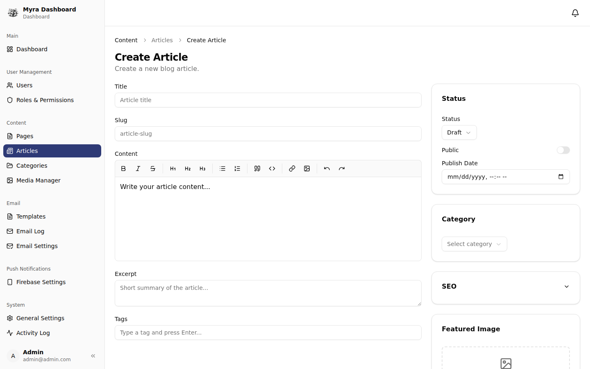
Features
- Rich Text Editor — WYSIWYG content editing
- Categories — Assign articles to categories for organization
- Featured Image — Upload a hero/thumbnail image
- SEO Fields — Meta title, description, and slug customization
- Publishing Controls — Draft/published status with publish date
- Public Display — Articles viewable at
/articles/{slug}
Key Files
| File | Purpose |
|---|---|
app/Http/Controllers/Admin/ArticleController.php | CRUD controller for articles |
app/Models/Article.php | Article model with category relationship |
Pages/Admin/Articles/Index.vue | Articles list with DataTable |
Pages/Admin/Articles/Create.vue | Create/edit article form |
Pages/Public/ArticleShow.vue | Public article view |
Categories
Organize articles into categories. Categories have names, slugs, and optional descriptions.
Location: Pages/Admin/Categories/ — Route: /admin/categories
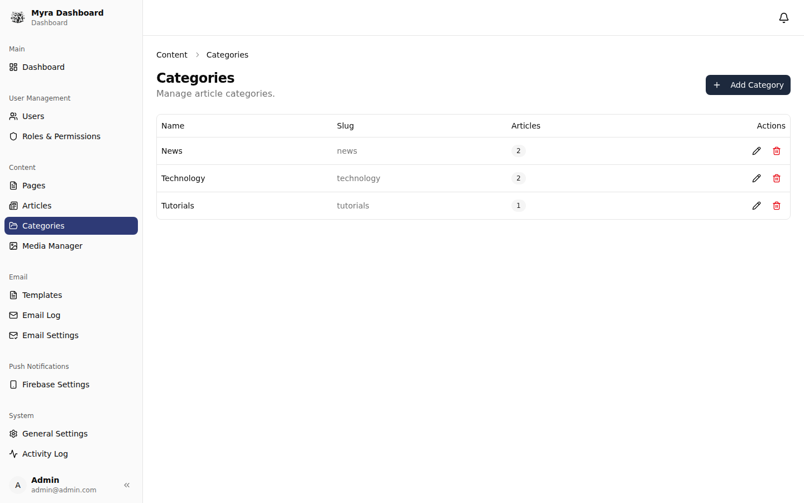
Static Pages
Create and manage static pages (e.g., About, Contact, Terms) with a rich text editor and SEO fields.
Location: Pages/Admin/Pages/ — Route: /admin/pages — Permissions: pages.view, pages.create, pages.edit, pages.delete
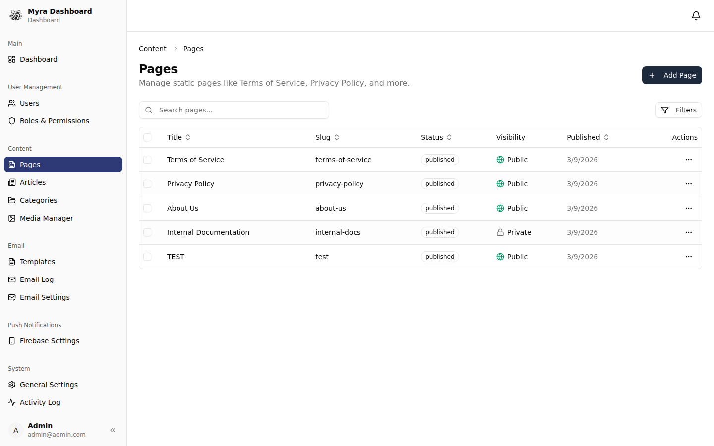
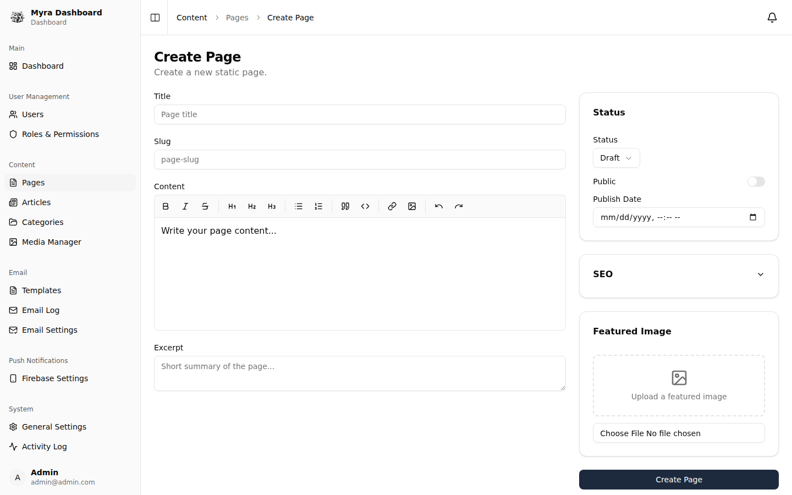
Features
- WYSIWYG Editor — Rich text content editing
- SEO Fields — Meta title, description, and custom slug
- Publishing Controls — Draft/published status
- Public Display — Pages viewable at
/pages/{slug}
Theme Selector
Choose from 10 predefined shadcn-vue color themes. The selected theme is applied globally via CSS custom property overrides and persists across sessions.
Location: Admin > Settings > Appearance tab
Available Themes
| Theme | Primary Color |
|---|---|
| Zinc | Neutral gray (default) |
| Slate | Cool blue-gray |
| Stone | Warm gray |
| Red | Vibrant red |
| Rose | Soft pink-red |
| Orange | Warm orange |
| Green | Natural green |
| Blue | Classic blue |
| Violet | Purple violet |
| Yellow | Bright yellow |
How It Works
- Theme name stored in
AppearanceSettings(Spatie settings, key:theme) - Passed to frontend via
siteSettings.themein shared Inertia props useThemeColors()composable overrides CSS custom properties ondocument.documentElement- MutationObserver detects dark mode toggle and re-applies the correct theme variant
- Applied in
AuthenticatedLayout,PublicLayout, andHome.vue
Sidebar Theme Colors
Admins can customize sidebar colors independently from the main color theme. Three nullable hex color settings are stored in the appearance group:
| Setting | CSS Variable | Description |
|---|---|---|
sidebar_background | --sidebar | Sidebar background color |
sidebar_foreground | --sidebar-foreground | Sidebar text / menu item color |
sidebar_accent | --sidebar-accent | Active / hover item highlight |
Additionally, --sidebar-border is auto-derived from the background (slightly lighter or darker), and --sidebar-accent-foreground is auto-contrasted against the accent color (dark text on light accents, white text on dark accents).
Presets: 8 curated sidebar presets are available: Default, Dark Navy, Charcoal, Deep Purple, Forest, Ocean Blue, Warm Gray, and White. Each preset sets all three colors at once. Individual colors can also be fine-tuned via native color pickers with hex text input.
Layering: Custom sidebar colors layer on top of the selected color theme. Setting a color theme changes --sidebar-primary (accent buttons), while sidebar theme colors control --sidebar, --sidebar-foreground, and --sidebar-accent (different CSS variables). When sidebar colors are null (default), the sidebar uses the CSS defaults from app.css which respond to light/dark mode. When set, they apply uniformly regardless of dark mode.
Hex to OKLCH: The hexToOklch() helper in useThemeColors.ts converts hex colors to oklch() CSS values at runtime (sRGB → linear RGB → OKLab → OKLCH), matching the Tailwind v4 color format.
Key Files
| File | Purpose |
|---|---|
resources/js/composables/useThemeColors.ts | Theme presets, sidebar color application, and hex-to-oklch conversion |
app/Settings/AppearanceSettings.php | Stores theme name and sidebar colors in database |
Pages/Admin/Settings/Index.vue | Theme selector and sidebar theme UI (Appearance tab) |
Homepage CMS
A fully settings-driven public marketing homepage inspired by modern SaaS landing pages. Every section is configurable from the Admin Settings panel — no code changes needed.
Overview
The root route (/) renders a public marketing homepage with the following sections:
- Navbar — Sticky navigation with configurable links and CTA button
- Hero — Full-width banner with title, subtitle, CTA button, and optional background image
- Features — Grid of feature cards with icons, titles, and descriptions
- Testimonials — Customer quotes with author info and avatar initials
- Pricing — Pricing plan cards with feature lists and CTA buttons
- CTA Banner — Call-to-action section with primary-colored background
- Footer — Site info, configurable links, and copyright
Route Configuration
The homepage is controlled by HomepageController@index:
- When enabled:
/renders the marketing homepage (Pages/Home.vue) - When disabled:
/redirects to the login page - Authenticated users see a "Dashboard" button instead of "Login/Register"
Settings Architecture
All homepage content is stored in the HomepageSettings Spatie settings class (group: homepage). No additional database tables are needed.
| Setting | Type | Description |
|---|---|---|
enabled | boolean | Show homepage or redirect to login |
hero_title | string | Main hero heading |
hero_subtitle | string | Supporting text under title |
hero_cta_text | string | Hero CTA button label |
hero_cta_url | string | Hero CTA button URL |
hero_image_path | string? | Uploaded hero background image |
features | array | List of {icon, title, description} |
testimonials | array | List of {name, role, quote} |
pricing_plans | array | List of {name, price, period, features, cta_text, cta_url, highlighted} |
navbar_links | array | Navigation bar links {label, url} |
footer_links | array | Footer links {label, url} |
Admin Configuration
Navigate to Admin > Settings > Homepage tab. The tab contains 8 configuration sections:
- General — Enable/disable the homepage
- Hero Section — Title, subtitle, CTA button, and hero background image upload
- Navbar — CTA button text/URL and navigation links (repeater field)
- Features — Toggle visibility, section title/subtitle, and feature cards with icon selector (repeater field)
- Testimonials — Toggle visibility, section title/subtitle, and testimonial cards (repeater field)
- Pricing — Toggle visibility, section title/subtitle, and pricing plans with comma-separated features (repeater field)
- CTA Section — Toggle visibility, title, subtitle, and button configuration
- Footer — Footer text and configurable links (repeater field)
Available Icons
Feature cards support the following Lucide icon names:
Zap, Shield, BarChart3, Users, Lock, Globe, Rocket, Heart, Star, Code, Database, Cloud, Settings, Mail, Bell, Search, Layers, Layout
Key Files
| File | Purpose |
|---|---|
app/Settings/HomepageSettings.php | Spatie settings class (group: homepage) |
app/Http/Controllers/HomepageController.php | Public homepage controller |
resources/js/Pages/Home.vue | Marketing landing page component |
Additional Reference
Error Pages
Custom styled error pages that match the application's design system.
Location: resources/js/Pages/Errors/
| Page | HTTP Status | Description |
|---|---|---|
403.vue | Forbidden | Shown when user lacks permission to access a resource |
404.vue | Not Found | Shown when a page or resource doesn't exist |
419.vue | Page Expired | Shown when CSRF token has expired |
500.vue | Server Error | Shown on unhandled server exceptions |
503.vue | Service Unavailable | Shown during maintenance mode |
Feature Demos
The application includes 18 dedicated feature demo pages accessible from /admin/demo. Each demo showcases a distinct feature with realistic mock data, making it easy to explore capabilities without affecting production data.
Index Route: /admin/demo
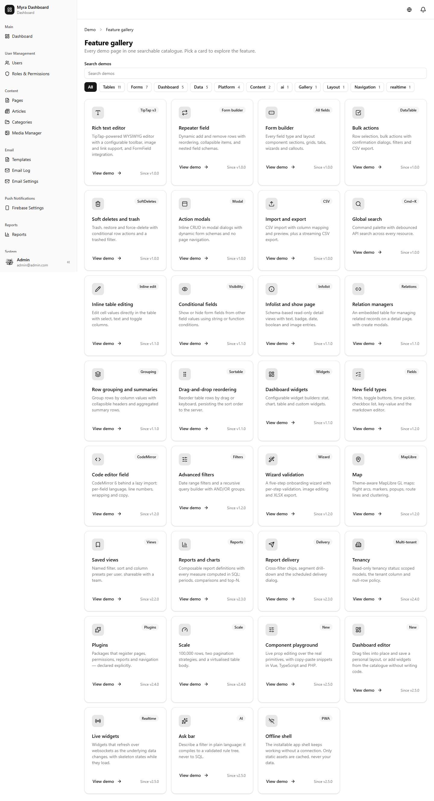
Rich Text Editor
Route: /admin/demo/rich-text-editor
TipTap v3 WYSIWYG editor integration with multiple toolbar configurations. Demonstrates how rich text fields integrate with the FormFields schema system.
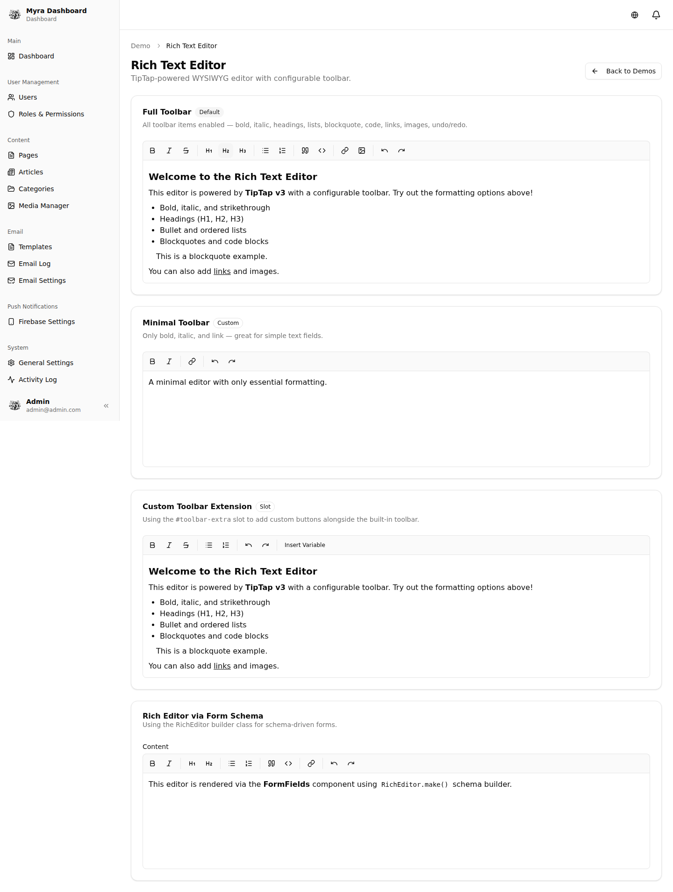
- Full toolbar with formatting, lists, links, images, and code blocks
- Minimal toolbar variant for lightweight editing
- Custom toolbar extensions and button groups
- Schema-driven integration with
FormFields
Repeater Field
Route: /admin/demo/repeater-field
Dynamic add/remove field groups for collections like contacts, team members, or invoice line items. Supports constraints, collapsible rows, and drag reordering.
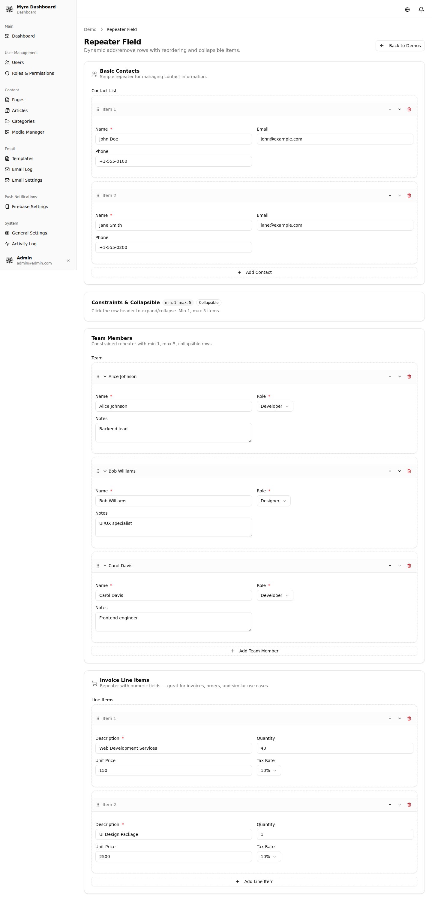
- Add and remove field groups dynamically
- Min/max item constraints
- Collapsible rows with summary labels
- Drag-and-drop reordering within the repeater
Form Builder
Route: /admin/demo/form-builder
Comprehensive showcase of every available field type in the schema-driven form system. Useful as a reference for building new forms.
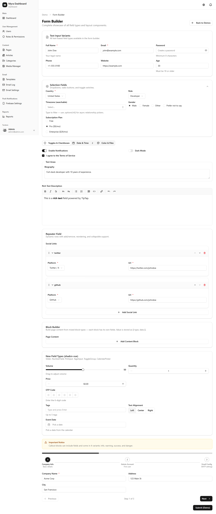
- Text, textarea, number, and PIN inputs
- Select, radio group, checkbox, and toggle fields
- Date/time pickers, color picker, and file upload
- Rich text editor, repeater, slider, tags, and wizard fields
Bulk Actions
Route: /admin/demo/bulk-actions
DataTable with row selection and bulk operations. Demonstrates how to apply actions to multiple records at once with confirmation dialogs.
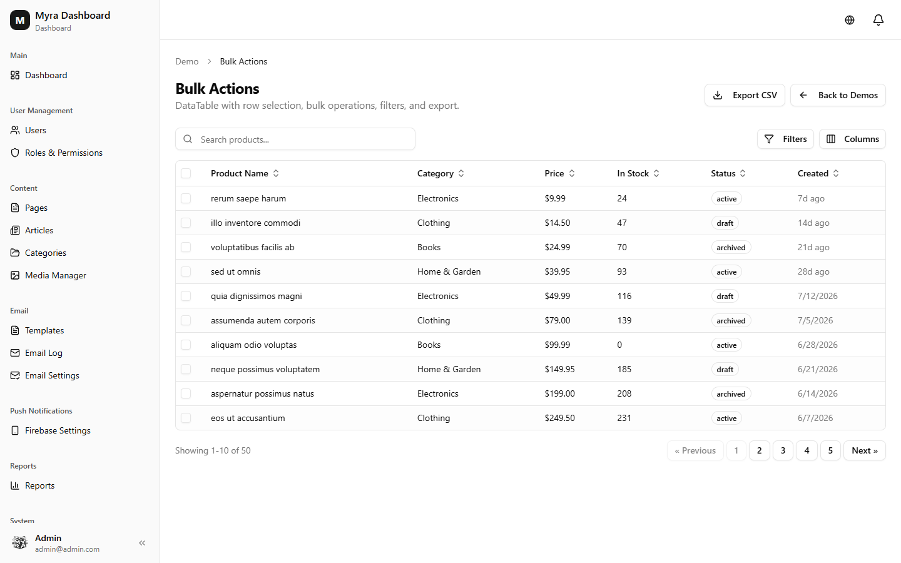
- Checkbox row selection with select-all toggle
- Bulk delete, archive, and activate with confirmation dialogs
- Column filters and search
- CSV export of filtered results
Soft Deletes & Trash
Route: /admin/demo/soft-deletes
Table with trash/restore workflow demonstrating soft-delete patterns. Records can be trashed, restored, or permanently deleted.
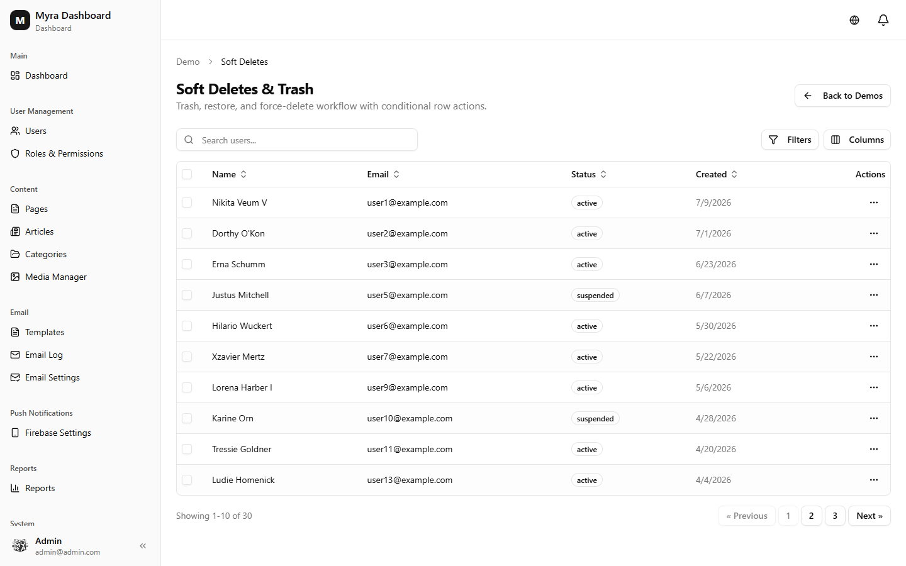
- Trash and restore individual records
- Trashed filter to show/hide deleted items
- Bulk restore and force-delete
- Conditional row actions based on trashed state
Action Modals
Route: /admin/demo/action-modals
Modal-based inline CRUD without leaving the page. Edit records, change status, and delete via modal dialogs triggered from table row actions.
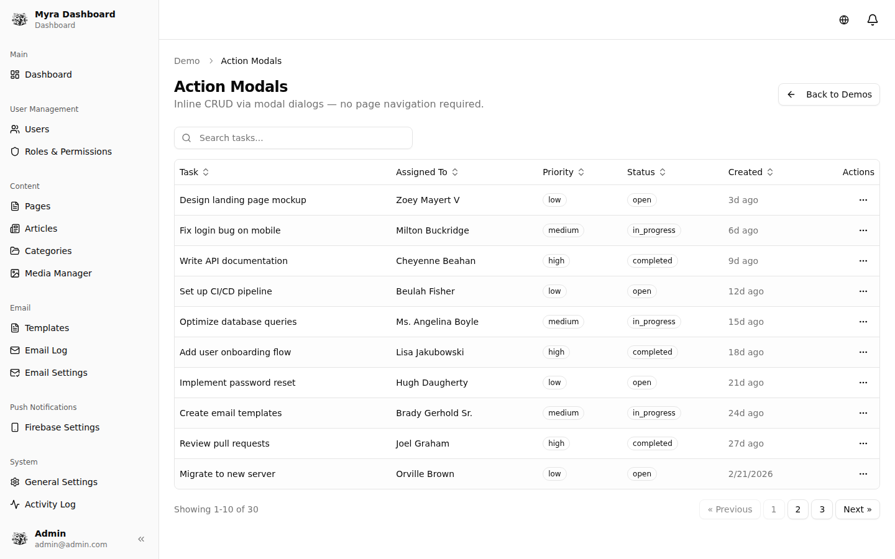
- Edit record fields in a modal form
- Change status with a dropdown modal
- Delete with confirmation dialog
- No page navigation required — all actions are inline
Import & Export
Route: /admin/demo/import-export
CSV import with column mapping and preview, plus CSV streaming export and XLSX export via the ExportDropdown component.
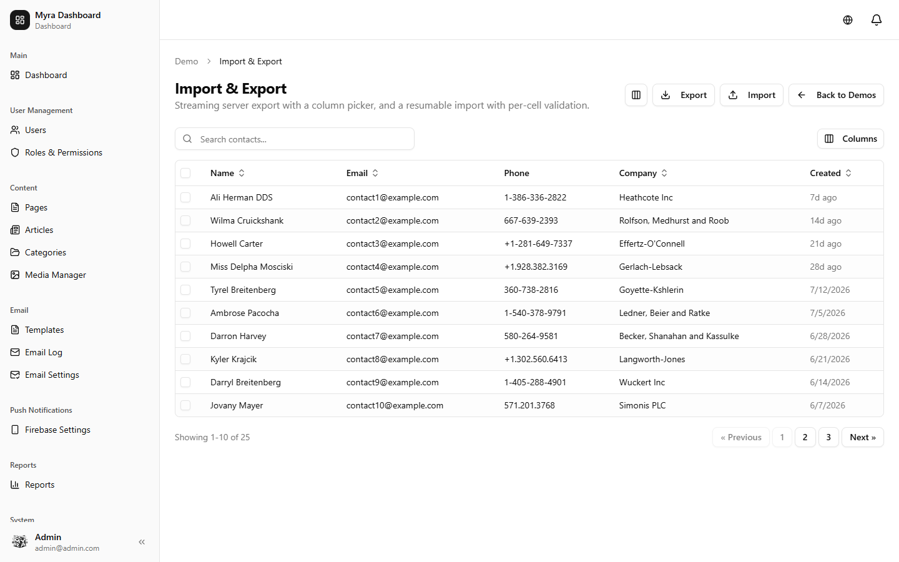
- CSV file upload with column mapping interface
- Preview imported data before committing
- Streaming CSV export for large datasets
- XLSX export via
ExportDropdowncomponent
Global Search
Route: /admin/demo/global-search
Command palette (Ctrl+K) with fuzzy search across all application resources. Results are grouped by type with keyboard navigation.
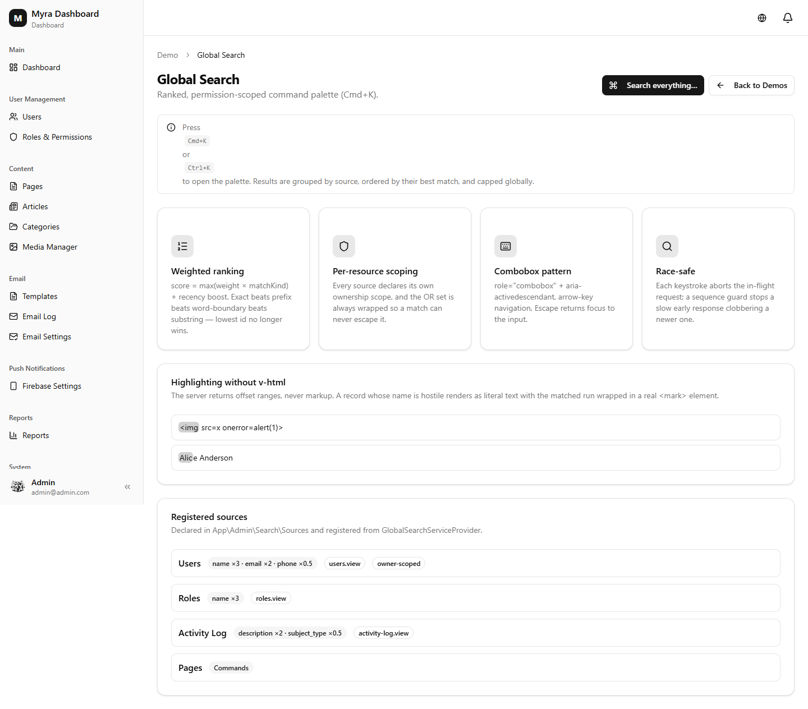
- Fuzzy search across users, articles, pages, and settings
- Results grouped by resource type
- Full keyboard navigation (arrow keys, Enter, Escape)
- Permission-aware — only shows resources the user can access
Inline Table Editing
Route: /admin/demo/inline-editing
Edit table cells directly without opening a form. Supports text inputs with debounce, select dropdowns, and toggle switches.
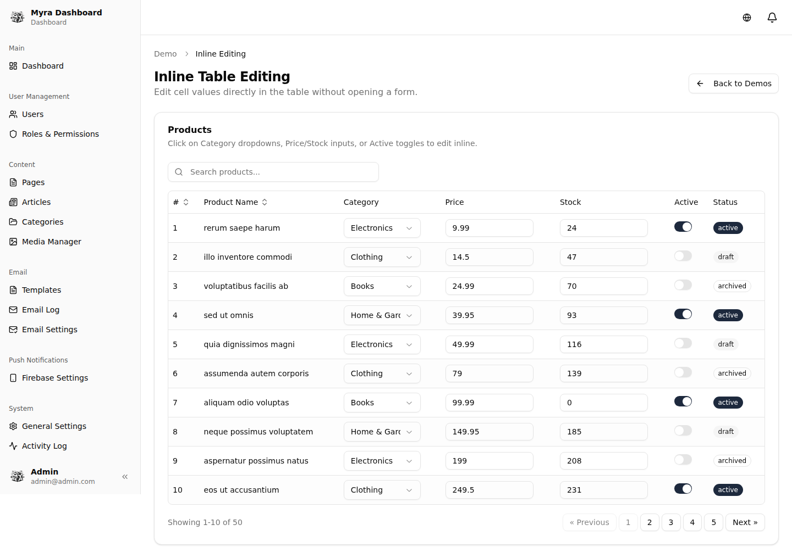
- Click-to-edit text fields with debounced save
- Inline select dropdowns for categorical columns
- Toggle switches for boolean fields
- Toast notifications on successful save
Conditional Fields
Route: /admin/demo/conditional-fields
Dynamic form visibility rules using .visibleWhen() and .hiddenWhen() modifiers. Fields appear or hide based on other field values.
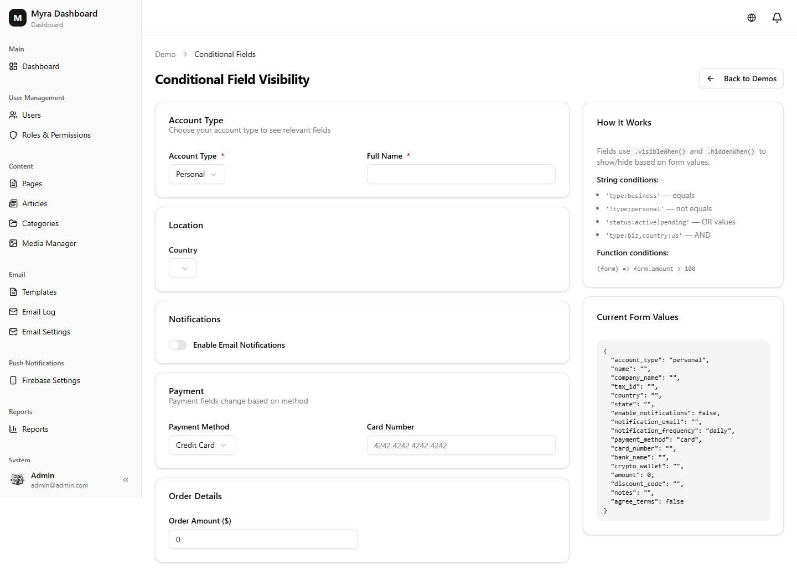
- Show/hide fields based on select, radio, or checkbox values
- Account type drives which detail fields appear
- Country and payment method conditionals
- Schema-driven — no manual
v-iflogic needed
Infolist / Show Page
Route: /admin/demo/infolist
Read-only schema-based detail views for displaying record information. Uses the same schema system as forms but renders as static content.
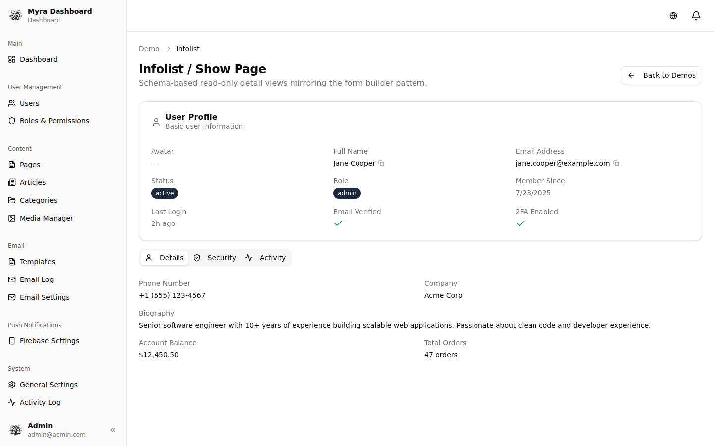
- Image, text, and badge display entries
- Date formatting and boolean indicators
- Key-value pairs and repeatable entries
- Tab-based layout for organizing sections
Relation Managers
Route: /admin/demo/relation-manager
Embedded DataTables for managing related records directly from a parent record's page. Supports create modals and tab navigation.
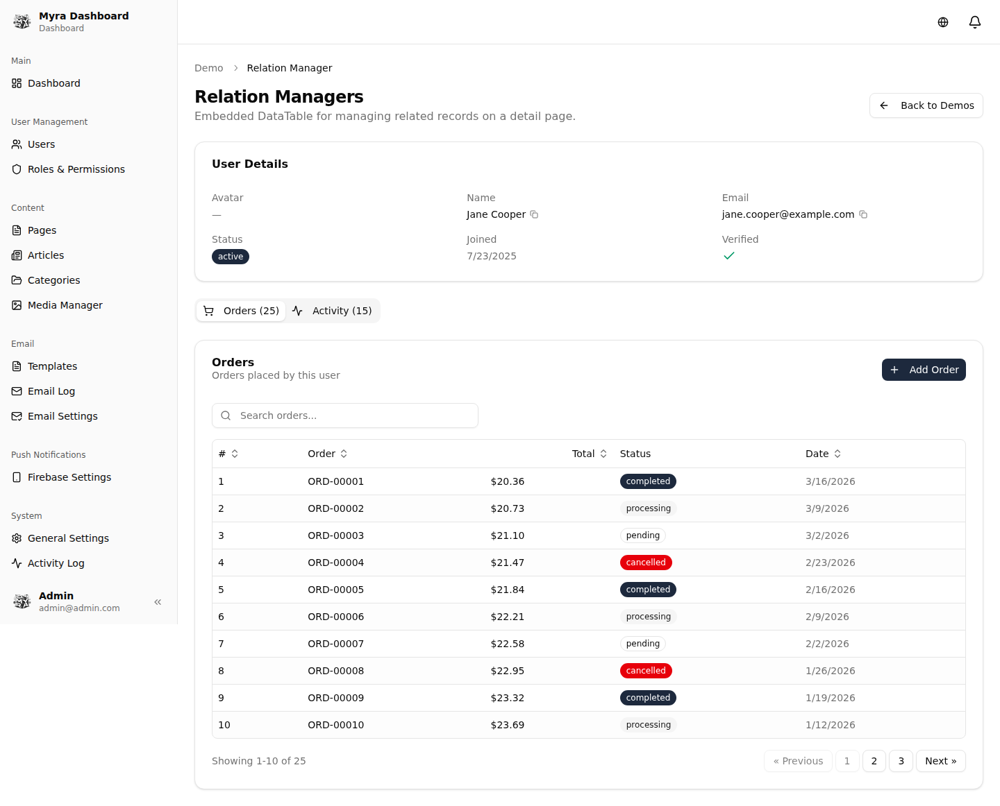
- Embedded DataTables for related records (orders, activity)
- Create new related records via modal
- Tab navigation between relation types
- Full sorting, filtering, and pagination per relation
Row Grouping & Summarizers
Route: /admin/demo/grouping
Table rows grouped by a column value (e.g., status) with collapsible group headers and aggregate summary rows.
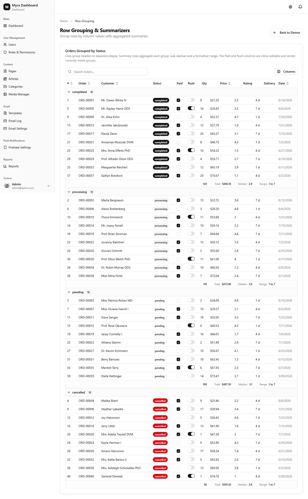
- Automatic grouping by any column value
- Collapsible group headers with item counts
- Summary rows with aggregate functions (sum, count)
- Compatible with sorting and filtering
Drag-and-Drop Reordering
Route: /admin/demo/reordering
Draggable table rows using VueDraggable with grip handles. Sort order is persisted to the server on drop.
- Drag-and-drop via grip handle column
- Visual feedback during drag operation
- Persisted sort order via server callback
- Powered by
vuedraggable(VueDraggable)
Dashboard Widgets
Route: /admin/demo/widgets
Stat cards with trend indicators, bar/line charts via vue-chartjs, and data tables arranged in a responsive grid layout.
- StatCard widgets with value, trend, and icon
- Bar and line charts via
vue-chartjs - Embedded data tables as widgets
- Responsive grid layout adapting to screen size
New Field Types
Route: /admin/demo/field-types
Specialized form field types beyond the standard set: TimePicker, searchable CheckboxList, Key-Value editor, and Markdown editor with live preview.
- TimePicker with hour/minute selection
- CheckboxList with search filtering and grid layout
- Key-Value editor for arbitrary key-value pairs
- Markdown editor with side-by-side live preview
Advanced Filters
Route: /admin/demo/advanced-filters
Comprehensive filtering system with select, ternary, checkbox, date range, and a visual query builder supporting recursive AND/OR rule groups.
- Select and ternary (yes/no/any) filters
- Checkbox filters and date range pickers
- Visual query builder with recursive AND/OR groups
- All filters are URL-persisted and shareable
Wizard / Multi-Step Form
Route: /admin/demo/wizard
Multi-step form wizard with per-step validation, progress indicator, and a review step before submission.
- Step-by-step progress indicator
- Per-step validation before advancing
- Image crop, tags input, and slider fields
- Final review step summarizing all entered data
Map
Route: /admin/demo/map
Interactive maps powered by MapLibre GL JS, wrapped as shadcn-vue components in resources/js/components/ui/map/ (the same copy-paste, project-owned philosophy as mapcn, authored for Vue). The demo is themed around Malaysia — KL-hub flight arcs, major cities, a KL–Penang route, and nationwide clustering. The basemap follows the app's light/dark theme automatically.
Map+MapControls— vector basemap with zoom/compass, geolocate, fullscreen, and scaleMapMarker+MapPopup— point markers with click-to-open popupsMapArc— curved connection arcs between point pairs (e.g. flight routes from a hub), with hover highlightingMapRoute— polyline through ordered waypointsMapCluster— many points grouped into zoom-aware clusters (click to expand)- Theme-aware basemap that swaps light/dark live; coordinates are
[lng, lat]
map-style to <Map> (MapTiler, Protomaps, Stadia, or self-hosted tiles). Scaffold a map page with php artisan make:myra-component {Name} map.
Dark Mode
The application supports full dark/light theme switching with persistent user preference.
How It Works
- Theme preference stored in
localStorage(key:theme) - Toggle button in the
AuthenticatedLayoutheader - CSS uses Tailwind's dark mode with
classstrategy (.darkon<html>) - All custom colors use oklch and CSS variables that adapt to the theme
Tailwind CSS v4 Theme
Colors are defined in a @theme inline block using oklch values. Custom semantic tokens like success, warning, and destructive are added alongside the default theme.
/* Example: custom success/warning tokens */
--color-success: oklch(0.65 0.2 145);
--color-warning: oklch(0.75 0.18 75);Project Conventions Summary
| Convention | Pattern |
|---|---|
| Button with loading state | Use <LoadingButton> instead of <Button :disabled="form.processing"> |
| Password fields | Use <PasswordInput> instead of <Input type="password"> |
| Success alerts | Use border-success/30 bg-success/10 text-success (not text-green-600) |
| Page transitions | Use animate-fade-in-up class for page entrance |
| Card stagger animation | Use animate-stagger-{1-4} for sequential card entrance |
| Pagination links | Use safe text decoding (no v-html) to prevent XSS |
| Form schemas | Prefer schema-driven FormFields over manual FormField tags |
| Table columns | Prefer schema-based columns over manual #cell-* slots |
| Flash messages | Use ->with('success', ...) in controllers, useFlashToasts handles display |
| Permissions | Use {resource}.{action} naming (e.g., users.view) |
Plugin System v2.4
A plugin is one class extending one abstract with one required method that returns a Manifest. Everything the plugin contributes — permissions, reports, imports, routes, policies, commands, migrations, translations and sidebar items — is declared once, in that manifest. There is no package service provider and no per-panel registration call.
Writing a plugin
namespace App\Plugins\Billing;
use App\Admin\Plugin\Manifest;
use App\Admin\Plugin\MyraPlugin;
class BillingPlugin extends MyraPlugin
{
public static function id(): string
{
return 'billing';
}
public function manifest(Manifest $manifest): Manifest
{
return $manifest
->requires('2.4.0')
->permissions(['billing' => ['view', 'edit']])
->reports(['invoices' => InvoicesReport::class])
->routes(fn () => Route::get('/billing', InvoicesController::class)
->middleware('permission:billing.view')->name('billing.index'));
}
}Registration is explicit
Plugins are listed by class in config('myra.extensions.plugins'). There is deliberately no composer auto-discovery: a plugin registers routes inside the admin middleware stack and merges entries into config('shield.modules'), so installing a package must never be enough on its own to grant either.
'extensions' => [
'strict' => env('MYRA_PLUGINS_STRICT', null),
'plugins' => [
\App\Plugins\Example\ExamplePlugin::class,
// myra:plugins — make:myra-plugin inserts classes above this line.
],
],PluginRegistry::load() catches per plugin, records the exception in failed(), reports it, and carries on. myra.extensions.strict rethrows instead; null means strict in local and testing, quarantined in production. The demo page at /admin/demo/plugins lists both the loaded plugins and the quarantined ones with their exception message.
Manifest surface
| Method | Effect |
|---|---|
requires(string $minVersion) | Below it, the plugin fails to register |
permissions(array $modules) | Deep-merged into shield.modules; shield:generate then creates the rows |
reports(array $map) / imports(array $map) | Merged into the report and import registries |
routes(callable) | Wrapped in Myra::adminRoutes() — the admin stack, prefix and name group |
publicRoutes(callable) | web middleware only |
policies(), commands(), migrations(), translations() | Applied at boot |
navItems(array $items) | Plain arrays, handed to NavRegistry when the navigation bundle is present |
Middleware parity
Myra::ADMIN_MIDDLEWARE is a literal copy of the stack declared in routes/web.php, because a plugin registers its routes from a provider rather than inside that file. tests/Feature/Plugin/AdminMiddlewareParityTest compares both a core route and a plugin route against it and fails CI the moment the two drift.
make:myra-plugin
php artisan make:myra-plugin Billing --id=billing --path=plugins/billing
# writes the plugin class, composer.json, en/ms/zh lang files, a manifest test,
# registers the class in config/myra.php, adds a PSR-4 entry, then:
composer dump-autoload
php artisan shield:generateStub design pass
make:myra-resource now emits everything that is universally safe on the first npm run build, with no manual follow-up:
| Emitted by default | Why |
|---|---|
OwnedByUser model, created_by not in $fillable | Ownership scoping on by default; a mass-assignable owner column defeats it. Applies only to new, empty tables. |
Migration with nullable created_by FK and ['created_by','created_at'] index | The scope's query path, indexed |
Store…Request / Update…Request | Replaces the inline validate() placeholder; rules stay an obvious TODO |
Gate::authorize('{prefix}.{ability}') in every controller method | Defence in depth behind the route middleware; survives a route being moved |
table-key="{prefix}" on the generated DataTable | Without it saved views are silently off |
Explicit sortable: whitelist in the service | The searchable list answers a different question |
t('generated.…') in every Vue page, keys written to en/ms/zh | No hardcoded English in generated UI |
| A feature test asserting the gates, ownership scoping and the sort whitelist | Plain PHPUnit; depends on no optional helper |
Behind a flag: --unscoped (lookup tables), --soft-deletes, --group= (now actually read — it places the nav item in its own sidebar group). Never emitted: created_by in $fillable, eager loads, indexes on columns that were not made sortable, or anything tenancy-related.
--print is a true dry run: it renders every file and writes nothing. tests/Feature/Generators/StubDesignPassTest asserts against that real output, never against a copy of a stub.
Clusters, Server Navigation, Nested & Singular Resources v2.4
A cluster groups related resources under one collapsible sidebar entry and, optionally, one URL segment. Cluster membership merges from both directions: a cluster can enumerate its children, and a resource can declare its cluster.
The sidebar addition is additive by construction
The hardcoded navigation groups in AuthenticatedLayout.vue stay byte-identical. A new myraNav Inertia prop carries server contributions and serialises as [] when nothing is registered, so merging it is the identity operation. tests/js/navIdentity.spec.ts asserts that myraNav: [] renders exactly the same list as the prop being absent entirely.
// App\Admin\Navigation
NavItem::make('clusters.learning.courses')
->route('admin.learning.courses.index')
->icon('BookOpen')
->permission('demo.view');NavRegistry::forUser() and again on the client with can(). A server bug can therefore narrow visibility but never widen it. A parent with no surviving children is dropped entirely — an empty expander never renders. Icons cross the wire as strings resolved through an explicit allowlist; an unknown name degrades to LayoutGrid.
Nested resources
ParentResource + ResolvesParentResource. Implicit route binding ignores global scopes, so the parent is re-queried through its own scopes after binding: an out-of-scope parent becomes a 404, never a readable id. Generated nested routes carry ->scopeBindings(), so /admin/courses/1/lessons/9 404s when lesson 9 belongs to another course — with no controller code and an indexed two-column lookup.
Singular resources
SingularResource + HandlesSingularRecord for one-row settings pages. Exactly two routes are ever generated: GET /admin/{key} and PUT /admin/{key}. No create, no destroy, no {record} parameter. The first PUT creates the row; every later one updates the same row.
Generators
php artisan make:myra-cluster Learning --icon=GraduationCap
php artisan make:myra-nested Lesson --parent=Course
php artisan make:myra-singleton SiteIdentityMulti-Tenancy v2.4
myra.tenancy.enabled false, nothing is registered: no global scope, no creating hook, no validation-rule change, no middleware, no Inertia prop. bootBelongsToTenant() returns before addGlobalScope and before static::creating — a registered scope that returns early still mutates the builder and still appears in getGlobalScopes(), which is not good enough for a data-visibility feature.
Two independent locks
Scoping requires config('myra.tenancy.enabled') === true and the model class listed in config('myra.tenancy.models'). Adding the trait to a model is not sufficient, so a merge that adds a trait can never change production visibility on its own.
'tenancy' => [
'enabled' => env('MYRA_TENANCY', false),
'model' => \App\Models\Team::class,
'column' => 'team_id',
'null_rows' => 'strict', // 'strict' | 'shared'
'super_admin_bypass' => true,
'models' => [],
],Fail closed
With scoping active and no tenant resolved, the scope applies 1 = 0 — zero rows, not every row. Legacy rows with a NULL tenant column are invisible to non-super-admins under null_rows: 'strict'. The 'shared' mode wraps its orWhereNull in a nested closure; an unwrapped one leaks the whole table.
API
| Call | Effect |
|---|---|
Tenancy::apply($query, $table) | The single predicate, for query sites that do not go through Eloquent scopes. A literal no-op when disabled. |
Tenancy::for($tenant, $callback) | The only way to change tenant. Restores in a finally, including on exception. There is no bare setter. |
Tenancy::without($callback) | Audited escape hatch; logs to the activity log when tenancy is enabled. |
Tenancy::unique() / exists() | Validation rules that do not leak across tenants, degrading to the plain rules when disabled. |
The tenant is resolved lazily from users.current_team_id with membership re-validated on every request — never from a route or query parameter. There is no tenancy middleware and no route change.
Proving the disabled path
myra:tenancy-baseline writes the SQL and bindings for canonical queries as guest, member and super-admin. tests/Feature/Tenancy/DisabledPathIsNoOpTest asserts the live queries still match that baseline byte for byte, and that no tenant scope and no extra creating listener exists. myra:tenancy-audit refuses readiness while any NULL tenant row remains, turning a silent visibility change into a blocked deploy.
Scale & Testing Helpers v2.4
Cursor pagination is a sibling, never a replacement
applySearchAndPaginate() keeps its exact signature and behaviour — saved views, deep links and meta.links all depend on length-aware pagination. applySearchAndCursorPaginate() shares the same sort whitelist and per-page clamp and adds no OFFSET and no COUNT(*).
orderBy(id). Without it, cursor pagination silently skips or repeats rows whenever the sort column is not unique. On the length-aware path the same tiebreak is optional and off by default (myra.performance.stable_sort), because turning it on changes the SQL of every existing admin table.
meta.mode is stamped only on cursor responses. An absent mode means length-aware, so every existing controller response is byte-identical and no controller needed an edit.
Virtualised rows
useVirtualRows has zero dependencies and keeps the markup a real <table> with spacer rows, so <colgroup> widths, the sticky header and the column manager keep working. Rows are keyed by row.id, never by index — inline editing keys its optimistic value and its rollback the same way, and an index-recycling virtualiser would break all three. Virtualisation refuses, with a dev-only warning rather than a broken table, when groupBy, reorderable or an expanded-row slot is in play.
php artisan myra:scale-seed 100000Testing probes
$this->myraTable($response, 'users')
->assertColumnExists('email')
->assertSortRejected('password')
->assertPerPageCapped(999)
->assertPaginationMode('length-aware')
->assertScopedToActor()
->assertSavedViewsEnabled();The probes read Inertia props — there is no DOM and no browser. App\Admin\Testing ships in app/ rather than tests/ so plugin authors can use it.
Sort index guard
SortIndexGuard throws a named, actionable error naming the column and suggesting the migration when a sortable column has no index whose leading column it is. It is inert unless myra.performance.assert_indexed_sorts is on, and never throws in production — a missing index degrades to slow, never to a 500.